华斌笔记
第6辑正文范围：P17–P228。章节、文字与图片按原书顺序对应展示。
血管球瘤是一种少见的良性血管肿瘤，1812年Wood首先描述了本病。血管球瘤起源于神经肌动脉球（血管球）。血管球是位于皮肤中的一种正常结构，是小动静脉之间的短路，有丰富的神经末梢，如交感神经及感觉神经末梢。血管球在肢体末梢较多，尤其在手掌侧、足跖侧及指（趾）甲下分布较多。正常的血管球大小约为1 mm，有调节体温的作用，与出汗有关。血管球内有血管球细胞（一种内皮细胞），外部被很薄的胶原网包绕，血管球转变成瘤的机制不清。血管球瘤大多体积较小，直径为2～5 mm的圆形肿物，包膜完整，色深红或暗紫，剖开瘤体有血液流出，肿瘤呈暗灰色。镜下检查无特殊改变，只是血管球细胞及无髓鞘神经纤维显著增多。
血管球瘤的好发部位是指（趾）甲下（占75%），也可以发生在其他部位，如手掌、腕部、足底、胃、纵隔等，临近骨的病变常常会导致骨侵蚀。血管球瘤临床以疼痛为主，常表现为三联征：阵发性“烧灼样”疼痛、定位精确的疼痛及对冷刺激超敏，偶尔于指（趾）甲下可见蓝色或紫色小结节，好发于40～50岁的人群。
超声检查可以清晰显示指（趾）甲下的结构。发生于指（趾）甲下的血管球瘤通常表现为甲床中部的低回声结节，通常不超过3 mm，边界较清，血流丰富。彩色多普勒血流成像（color Doppler flow imaging，CDFI）可见病变内丰富的血管团。多数对深部的末节指骨有侵蚀，背侧中部是最常受累的部位。
经典病例1：
患者女性，33岁，因“左足第五趾甲下痛，对冷、热敏感”就诊，超声检查见图1-1-1。
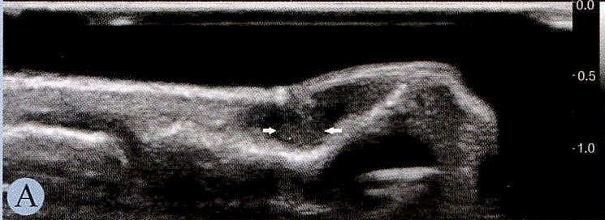
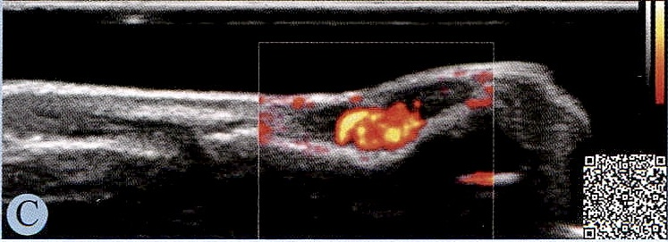
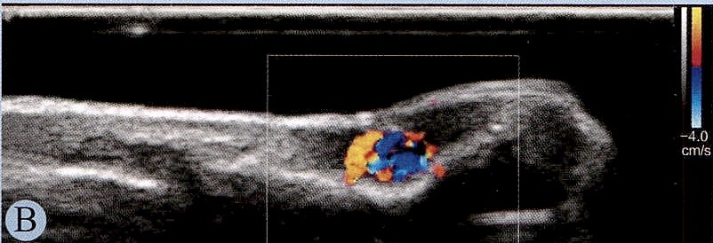
A. 超声显示左足第五趾甲下略高回声小结节，约 2 ~mm × 3 ~mm；B. CDFI 显示其内血流丰富；C. 能量多普勒超声显示其内血流丰富（动态）
发生于指（趾）甲之外的血管球瘤比较少见，发生于其他部位的皮下血管球瘤在临床上也是以明显的痛性小结节为特征。
经典病例2：
患者女性，68岁，因“上臂皮下小结节，伴有明显触碰痛”就诊，超声检查见图1-1-2。
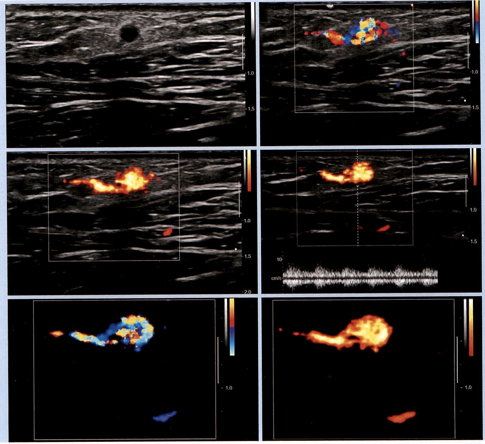
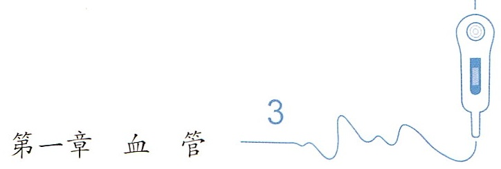
曾有新闻报道，广州虎门大桥发生颤振。研究人员分析认为，是虎门大桥上临时放置的水马导致风流受阻形成涡振所致。在工作人员撤除水马后，虎门大桥的颤振逐渐减弱，之后恢复正常通行。
虎门大桥的这个“涡振”与流体力学中的卡门涡街的形成有关。卡门涡街是流体力学中的重要现象，在自然界中经常遇到。在一定条件下的流体绕过某些物体时，物体两侧会周期性地脱落出旋转方向相反、排列规则的双列线涡，经过非线性作用后，形成卡门涡街（图1-2-1）。例如，在自然界中，水流过桥墩、风吹过高塔或烟囱等都会形成卡门涡街。正是这种线涡的频率与虎门大桥的固有频率一致，导致发生共振，继而引起虎门大桥颤振。
其实，流体在经过任何障碍物时，都可能在障碍物后方形成线涡（图1-2-2）。
流体在经过狭窄处时，流体的上下左右其实都可以被看作遇到了障碍物，在通过障碍物时就会形成明显的线涡（图1-2-3）。
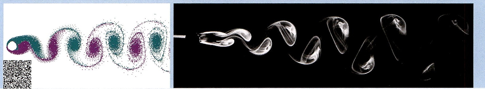
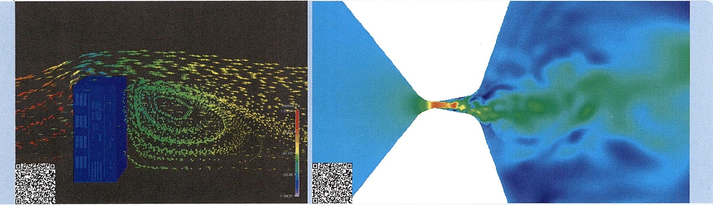
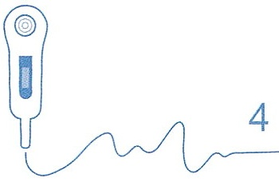
经典病例：
患者男性，45岁，因“高血压药物控制不佳”就诊，行双侧肾动脉超声检查。超声检查发现右侧肾动脉近心端狭窄，狭窄处频谱见图1-2-4。
图1-2-4中箭头所示的非常“亮”的区域，其实就是血流通过狭窄后出现的线涡导致的。它们对称性地分布在基线两侧，速度非常低，但是强度（可以理解为红细胞的数量）很高，这种血流称为“涡流”。
流体通过障碍物或狭窄处后，是否形成线涡，取决于雷诺数（Re）。雷诺数越大，越容易发生线涡。雷诺数与流体的黏滞度、流速、管径等因素有关。在人体的血流中，流速对雷诺数的影响最为显著。流速越大，雷诺数越大，越容易出现“涡流”（图1-2-5）。
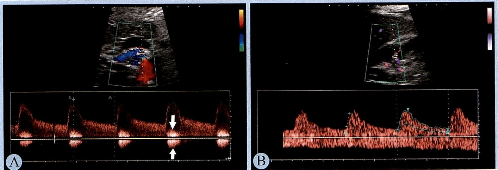
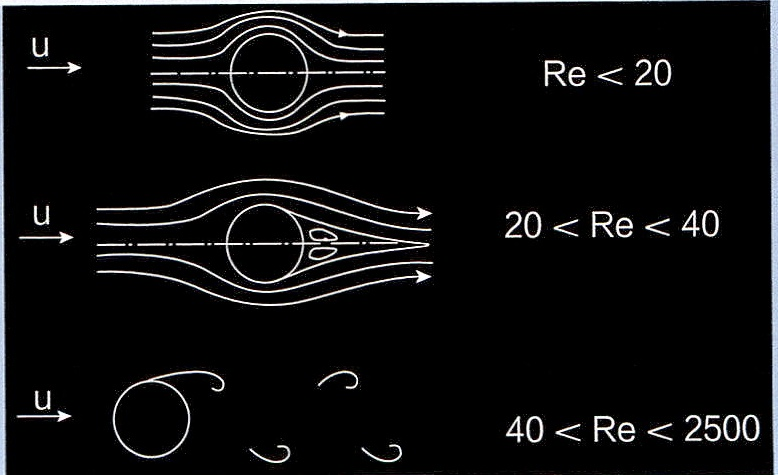
研究显示，血管狭窄程度（直径狭窄率）超过90%时，通过狭窄处的高速血流在狭窄后就会形成明显的线涡，在频谱多普勒超声上就显示为基线两侧低速的呈对称性分布的“亮”的多普勒信号。实际上，这些“亮”信号中也包含周期性线涡作
用于血管壁形成的管壁 “震颤”，与虎门大桥在卡门涡街作用下发生的“颤振”一样。
卡门涡街是以著名的空气动力学家西奥多·冯·卡门（Theodore von kármán）的名字命名的。冯·卡门是我国科学家钱伟长、钱学森、郭永怀等的老师，对我国现代力学的研究有重要影响。
冯·卡门是空气动力学奠基人路德维奇·普朗特（Ludwig Prandtl）教授的博士研究生，他在拿到博士学位后暂时在普朗特教授的实验室做助教。同一时期，有一个叫哈依门兹（Karl Hiemenz）的博士研究生与他在同一实验室。普朗特教授交给哈依门兹的任务是设计一个水槽，并观察圆柱体后面的流动分裂，用实验来核对按边界层理论计算出来的分裂点。
哈依门兹做好了水槽，但出乎意外的是在进行实验时，发现水槽中的水流不断地发生激烈的摆动。哈依门兹按照普朗特教授的要求改进了好几次实验设备，仍然不能满足之前的要求。
冯·卡门当时所做的课题与哈依门兹的课题并没有关系，而他每天早上进实验室时总要跑过去问：“哈依门兹先生，现在流动稳定了吗？”哈依门兹非常懊丧地回答：“始终在摆动”。
这时冯·卡门想，如果水流始终在摆动，这个现象一定会有内在的客观原因。在一个周末，冯·卡门用粗略的运算方法，试计算了一下涡系的稳定性。他假定只有一个涡旋可以自由活动，其他所有的涡旋都固定不动，然后让这一涡旋稍微移动一下位置，看看计算出来会有什么样的结果。冯·卡门得到的结论是：如果是对称排列，那么这个涡旋就一定会离开它原来的位置且越来越远；而对于反对称排列，虽然也得到同样的结果，但当行列的间距和相邻涡旋的间距有一定比值时，涡旋就停留在它原来位置的附近，并且围绕原来的位置做微小的环形路线运动。
这就是后来被称为“卡门涡街”的重要的流体力学现象。
华斌注
这一经历告诉我们：老师的想法不一定都是对的，当你的实验总是不能按照老师的预想进展时，要思考你是不是有了新的发现。
这一过程还告诉我们：有一个学霸同学非常重要，他能让你的工作少走很多弯路。
关节积脂血症在临床上并不少见，其中以膝关节创伤性积脂血症最为常见。膝关节积脂血症的病理机制：膝关节是体内最大、结构最复杂的持重关节，具有活动范围广、容易受外力冲击而发生创伤的特点；膝关节作为一个不稳定关节，稳定性的维持依赖于关节的韧带装置（韧带关节囊网），其在受到创伤并发生关节囊内骨折的情况下，会将骨髓内脂肪、血液挤入关节囊内，同时因关节软骨及滑膜释放的一种能阻止血凝块形成的酶的作用，导致进入关节囊内的血液无法凝固，并与脂肪分离，密度小的脂肪浮于上层，而密度大的血液沉于下层，构成脂－血平面。
关节腔内各液体比重见表1-3-1。
| 关节腔内液体 | 比重 |
| 全血 | 1.050~1.060 |
| 血细胞 | 1.080~1.090 |
| 血浆 | 1.040~1.050 |
| 脂肪 | 0.900 |
| 关节液 | 1.018（与析出的血清近似） |
创伤所致关节腔内各液体的比重差异，为影像学上液体的分层提供了病理基础。根据制动时间的长短，可分为单液－液平面（脂肪与积血分层）和双液－液平面（除脂肪在最上层外，血清的析出与血细胞的沉积形成了第二分层）。CT检查关于积脂血症的报道多如牛毛，而超声检查的报道相对较少，两者报道的最大差异在于双液－液平面的形成时间。MRI检查报道，血液静置3小时后，血清和血细胞即可发生分离，从而形成影像学分层（双液－液分层）；而超声检查则报道，血液静置10分钟后，即可检出双液－液分层。
超声医师在临床工作中所见的积脂血症单液－液平面多于双液－液平面图1-3-1为单液－液平面，其静置时间已超过半小时。
对于双液－液平面，特别要说明的是，其上层（脂肪层）呈“小球样”无回声，第一次知道其称为“血清球”是在微信公众号“华斌的超声世界”里的这段论述“随着时间的延长，血清会从血液中析出。血清的密度与水相近，大于脂肪，但小于含铁和血红蛋白的红细胞。血清层位于脂肪与沉积的红细胞之间，形成所谓的双液－
液平面。血清还可以混入上层的脂肪内，被脂肪围成一个个圆形的血清球。”查阅相关积脂血症的文献（截至2020年5月），未发现关于“血清球”的报道（中外文数据库可能有遗漏，所查文献不包括一些肌骨超声老师的公众号，华斌注：英文文献是可以查到的）。
积脂血症在超声方面的报道较少，未提及“血清球”，但在多如繁星的关于积脂血症的 CT 和 MRI 检查的文献中，为什么也从未提及呢？下面的病例可能为大家提供一个参考（图 1-3-1～图 1-3-4）。
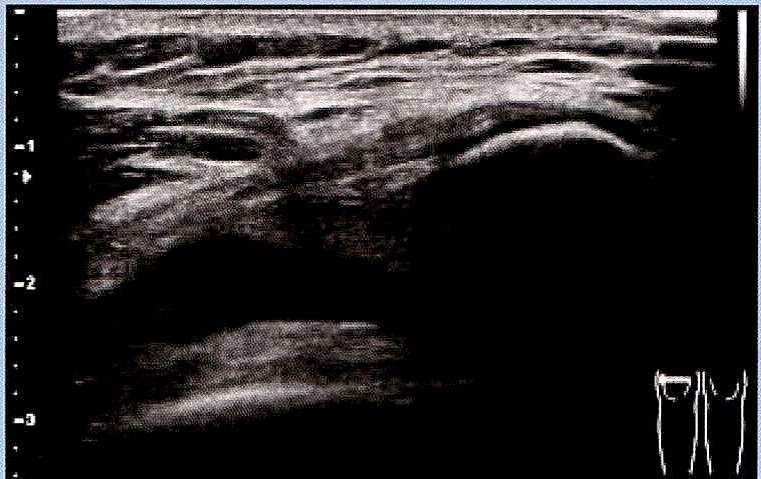
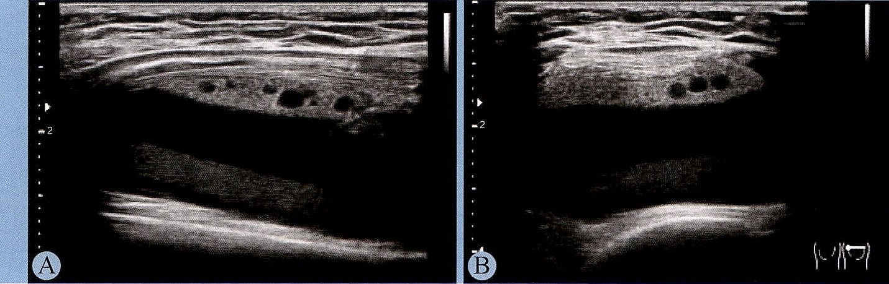
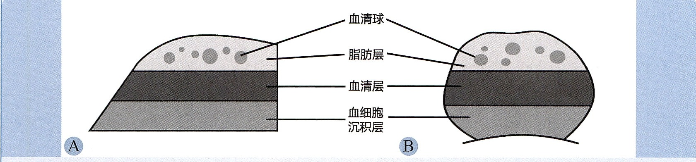
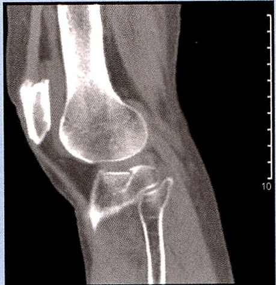
下面是揭晓答案的时刻！请关注膝关节髌上囊积脂血症 MRI 检查的第一层内的情况（图 1-3-5）。
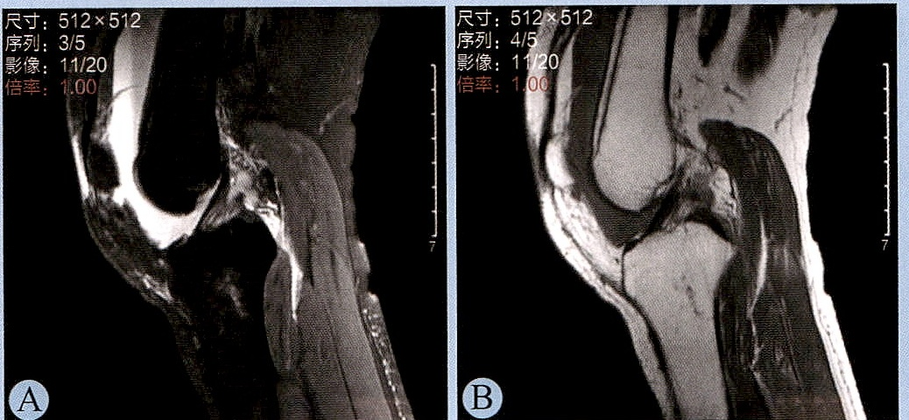
A. 质子密度加权成像（压脂像）显示第一层内未见明显异常信号；B. 自旋回波序列的 T₁ 加权成像显示第一层内仍未见明显异常信号
从上面的病例可以看出，在超声图像上清晰可见的脂肪层内血清球，在 MRI 检查的图像上没有显示，这也许就是对积脂血症的 MRI 检查的报道如此之多，却没有血清球相关报道的一个原因吧。同时，这也用事实证明，对于浅表组织，高频超声的分辨率高于 MRI 检查！
需要指出的是，早期研究认为关节囊内的脂肪沉积不仅来源于关节囊内骨折处的骨髓，还可能来源于损伤的关节滑膜或周围的脂肪组织。但随着检查设备的更新，以及多排螺旋CT和MRI检查的逐步应用，发现积脂血症总是伴随着关节内骨折而出现，只是关节内一些细微骨折受当时的检查条件限制而未被发现。随着研究的不断深入，学者们一致认为创伤性关节内积脂血症的脂肪来源于关节内骨折处的骨髓，因此，积脂血症是关节囊内骨折非常可靠的间接征象。
还有一个值得关注的问题，对于膝关节闭合性损伤、胫骨平台骨折不严重、可
保守治疗的患者，关节腔内积脂血症是否需要抽吸处理？
要回答上述问题，需要引入一个比较新的骨性关节病治疗方法——骨髓间充质干细胞，这是临床治疗骨关节炎的一个新思路，因为干细胞具有多能性，即具有成软骨、成骨及消炎等作用，而骨髓间充质干细胞于轴骨或外周骨松质骨（海绵状）的骨小梁中生成，在骨髓组织中表达最丰富，但含量很少。也就是说，在积脂血症中是可能含有骨髓间充质干细胞的，这相当于自体骨髓注入关节腔，老年患者的骨性关节病非常普遍，所以，对于关节腔积液量不是很大、可以承受疼痛且需要保守治疗的患者来说，不抽吸积脂血可能对患者更有益！
华斌注
这篇短文非常精彩，既有很好的病例，又有精彩的图片，更重要的是有许敬华医师自己的思考，有提出问题的动力，更有解决问题的行动。更感到高兴的是，许敬华医师是在微信公众号“华斌的超声世界”发表的文章的启发下做出的进一步的探讨和学习，这也是我们努力的意义所在。
（本病例由浙江省丽水市人民医院超声科许敬华医师提供）
在血管的高度狭窄处、动静脉瘘瘘口处或假性动脉瘤的颈部出现高速湍流频谱时，除在一个方向上出现超高速的血流外，同时还会有相当流量的反向血流。随着湍流程度的加重，这种反向的血流就会越来越明显。
利用频谱多普勒超声检查时，在这些部位显示的频谱就会同时出现2个方向的高速湍流频谱，在外观上与热带鱼的形状非常类似，有学者就将这种频谱称为“热带鱼样”频谱。
“热带鱼样”频谱的出现，提示该处血流极度紊乱，呈现为严重的湍流状态，
再结合声像图和频谱的其他特征，超声医师应该进一步做出血管高度狭窄、动静脉瘘、人工动静脉瘘口狭窄或假性动脉瘤的诊断（图1-4-1）。
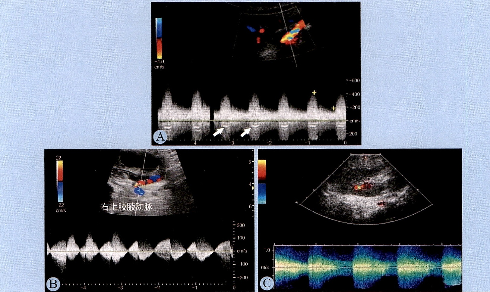
A. 腹腔动脉血管高度狭窄形成的“热带鱼样”频谱，箭头示高速血流导致的组织振动；B. 腋动脉假性动脉瘤颈部的“热带鱼样”频谱，无论是舒张期还是收缩期都呈现为2个方向的血流；C. 肾内动静脉瘘形成的“热带鱼样”频谱
髂静脉压迫综合征又称为 May-Thurner 综合征（May-Thurner syndrome），也称为 Cockett 综合征（Cockett syndrome），是左侧髂总静脉流出道受压而导致的一系列以左下肢和盆腔淤血为主要表现的一种少见的临床综合征。本病通常会伴有左下肢肿胀、疼痛、静脉曲张、深静脉血栓形成等。
2%～5%的下肢静脉障碍与髂静脉压迫综合征相关，女性发病率约是男性的3
倍，发病高峰在 40～50 岁。
髂静脉压迫综合征的发病机制主要基于左侧髂总静脉的解剖走行。右侧髂总静脉几乎垂直上升至下腔静脉，而左侧髂总静脉则需要从左向右斜穿过右侧髂总动脉后再进入下腔静脉。沿这条路线，左侧髂总静脉位于右髂总动脉下，右侧髂总动脉可以将左侧髂总静脉压在腰椎上，使左侧髂总静脉回流受阻（图1-5-1）。约1/4的健康人左侧髂总静脉的血管管腔压迫程度超过50%。只有这种压迫引起静脉明显的血流动力学变化，或导致急性或慢性深静脉血栓形成（deep vein thrombosis，DVT），或严重的静脉曲张时才具有临床意义。
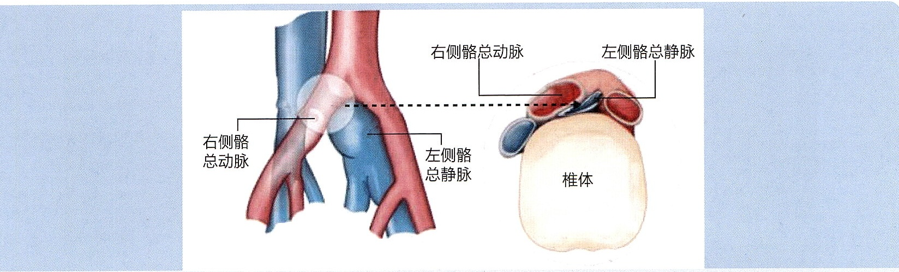
植入支架是髂静脉压迫综合征最有效、最简便的治疗措施。
经典病例：
患者女性，47岁，因“左下肢静脉曲张，伴左侧腹股沟区、阴阜和下腹部包块”就诊（图1-5-2）。
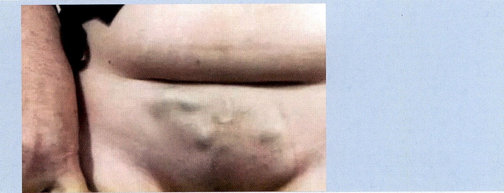
超声显示左侧腹股沟区、阴阜和下腹部包块处为高度迂曲扩张的静脉团，扩张的静脉团起自左侧大隐静脉，其内血流为左向右的分流，向右一直延伸至右侧腹股沟区，
最终汇入右侧大隐静脉（图 1-5-3）。这些迂曲的静脉为大隐静脉的属支——腹壁浅静脉，两侧腹壁浅静脉之间有交通，左下肢的血流经由此侧支汇入右侧髂血管回流。
继续向上扫查，超声显示左侧髂血管内无血流通过，于左右髂静脉分叉下方可见左侧髂总静脉受压（图1-5-4）。
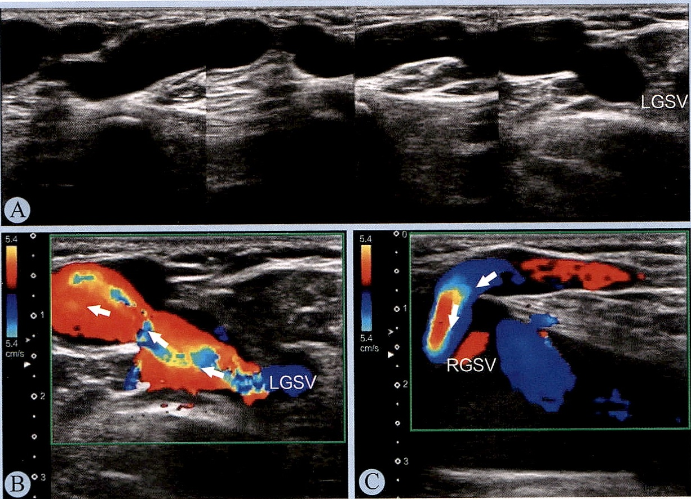
A. 二维灰阶超声显示左侧腹股沟区、阴阜和下腹部包块处为迂曲扩张的静脉团，起自左侧大隐静脉（LGSV）；B.CDFI 显示左侧腹壁浅静脉迂曲扩张，起自左侧大隐静脉（LGSV），其内为反向血流（箭头为血流方向）；C.CDFI 显示右侧腹壁浅静脉同样迂曲扩张，并延续至左侧腹壁浅静脉，最终汇入右侧大隐静脉（RGSV），箭头为血流方向
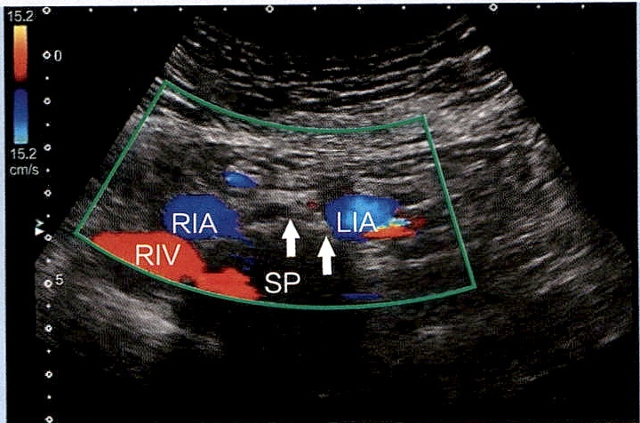
髂血管分叉下方横切面检查。RIA：右侧髂总动脉；LIA：左侧髂总动脉；RIV：右侧髂总静脉；SP：椎体；箭头：受压的左侧髂总静脉
网友“普洱茶”：
转
张老师您好！在检查下肢血管时会观察到部分患者静脉内血流自发显影，这种状态与血栓的形成有联系吗？观察了几例患者最后都没有血栓形成，其他老师也认为两者没有必然联系，但没有说明原因，临床很多超声医师都认为这种状态是血栓形成的前期。请您讲解一下，谢谢！
华斌答
这种 “自发显影” 是指在二维灰阶超声中可见管腔内的血流呈 “云雾状” 高回声信号缓慢流动的现象，是由血液内红细胞的聚集和叠连导致的（图 1-6-1）。
这种现象中的红细胞聚集是可逆的，发生在低剪切力或血流停滞的状态下。红细胞聚集通常以叠连——这种特殊的方式形成。叠连是指脊椎动物的盘状红细胞摞在一起的一种聚集形式（图1-6-2）。盘状红细胞较大的表面积使得红细胞彼此联系，相互黏附，形成叠连在一起的红细胞串。叠连的形成需要高分子纤维蛋白质或其他聚合物，导致叠连形成的最重要的蛋白质是血浆纤维蛋白原。
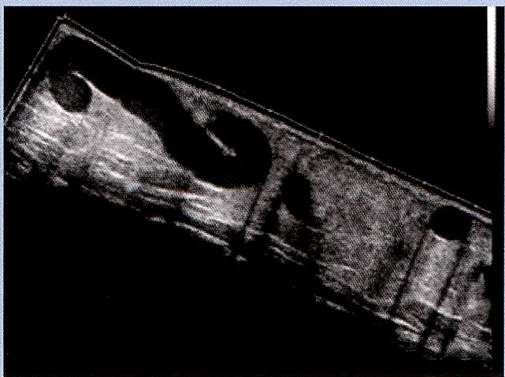
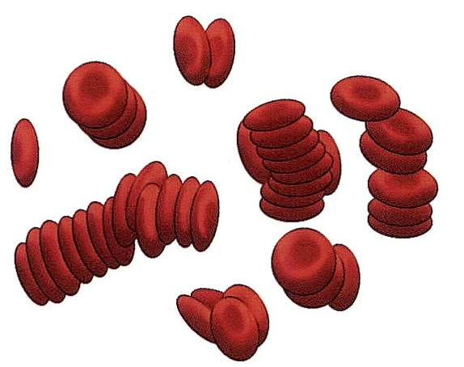
红细胞聚集是一种生理现象，在流速减低和停滞时就会发生。急性期蛋白浓度的增加，尤其是纤维蛋白原的增加会导致红细胞聚集增强（注：急性期蛋白是一组异质的血浆蛋白，在对抗微生物的先天防御和减少因感染、创伤、恶性肿瘤及某些
疾病引起的组织损伤上起重要作用）。
导致红细胞聚集增加的因素主要为感染、炎症、结缔组织病和恶性肿瘤。
红细胞沉降率密切反映红细胞聚集的程度，任何导致红细胞沉降率加快的疾病都能导致体内红细胞叠连程度的增强。
血液中分散的红细胞，在超声场中的散射截面非常小，其产生的回声信号非常弱，一般不会被灰阶超声分辨出来，因此，通常情况下，血管内的血液是无回声的，而聚集叠连在一起的红细胞大大增加了其在超声场中的散射截面，散射截面的增加使得返回超声探头的回声信号大大增加，这就是静脉在血流缓慢时能够发生所谓的“自发显影”的基础。
那么，红细胞的叠连与血栓形成之间有什么关系呢？
首先，血栓形成的三要素：血管内膜的损伤、血流缓慢或涡流、血液凝固性增高。血流缓慢或涡流、血液凝固性增高同样也是红细胞聚集的主要因素。
红细胞聚集本身是一种可逆的过程，是血流缓慢或淤滞时的一种生理改变，在血流加速后即可消失，其与血栓形成的过程没有直接关系。换言之，红细胞聚集和血栓形成是2个相互独立的过程，静脉内的“自发显影”现象不是血栓形成的前期表现。但是，造成红细胞聚集的某些因素恰好也是血栓形成的危险因素，因此，超声检查过程中若发现静脉内出现所谓的“自发显影”现象，临床医师应积极干预，避免血栓形成。
有很多超声医师困惑：多普勒频谱测量速度时是在取频谱前校正角度，还是在频谱冻结后校正角度？
首先，请大家思考为什么利用多普勒频谱测量速度时必须校正角度。
多普勒血流速度的测量是利用血流运动造成多普勒频移实现的，但是，血流的方向和声束的方向通常并不平行，因此，超声波所能够探测到的频移信息实际上仅是血流在声束方向上的分量。
速度本身是一个矢量。假定血流速度为 V，血流方向与声束的夹角为 θ，其在声束方向上的分量就是 V cos θ（图 1-7-1）。
超声仪器直接探测到的频移信息转化而成的速度并不是血管内血流的实际速度（V），而仅是血流在声束方向上的分量（ Vcosθ）。但超声医师需要的是真实的血流速度，所以，超声仪器必须将直接测得的数值除以 cosθ，之后显示在屏幕上的速度才是实际的血流速度（图1-7-2）。
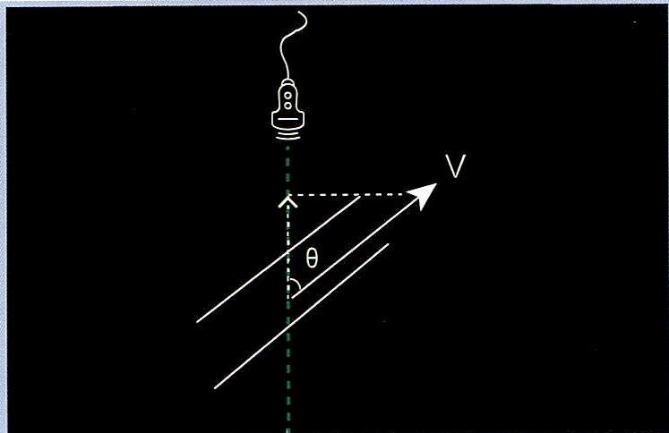
超声仪器直接探测到的频移信息实际上仅是血流在声束方向上的分量。虚线箭头所示 Vcosθ，V 代表血流速度，绿色虚线为声束的方向
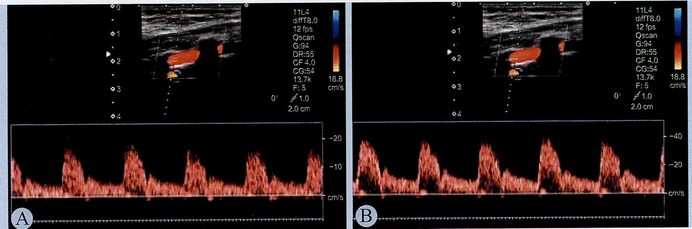
A. 未进行角度校正，所显示的速度仅为血流速度在声束方向上（取样线）的分量；B. 行角度校正后，所显示的血流速度就是血流的实际速度
但是，超声仪器本身并没有能力判断出血流与声束之间的夹角 θ是多少，需要操作医师根据二维灰阶超声或CDFI检查进行校正。操作医师把血流与声束之间的夹角 θ告知仪器的过程就是血流测量前的角度校正。那么，这个角度校正的过程是应该在取频谱之前完成，还是应该在取完频谱冻结图像后完成呢？
当探头位置和血管位置处于相对稳定的状态时，血流速度在声束方向的分量就是稳定的，角度校正的过程并不会影响血流速度在声束方向上的分量。因此，无论是提前校正角度，或在取频谱过程中校正角度，还是图像冻结后校正角度，都不会影响所取到的血流频谱的形态，也不会影响到最后的测量结果。
锁骨下动脉盗血综合征（subclavian steal syndrome，SSS）是由于发出于椎动脉（vertebral artery，VA）前的锁骨下动脉（subclavian artery，SA）近段或无名动脉近段狭窄或闭塞后，患侧锁骨下动脉远端及椎动脉内压力明显下降，并且由于虹吸作用，引起同侧椎动脉血流逆行入锁骨下动脉远端，灌注患侧上肢，导致的椎－基底动脉供血不足和上肢缺血等一系列临床综合征。有一种说法称“经颅多普勒超声（transcranial Doppler，TCD）检查是锁骨下动脉盗血频谱检查最敏感的检查方法”，这是真的吗？
要解决上述问题，首先要知道锁骨下动脉盗血综合征中颈部血管超声检查和TCD检查各自检查的是什么？答案似乎很简单——椎动脉！但两者检查的并不是同一段椎动脉。颈部血管超声检查的一般是 V₂段（椎间隙段），而TCD检查的是 V₄段（颅内段）。有了这样的基础认识，再继续展开下面的阐述。
自 2011 年开始，超声医师在检查颈部血管时，开展颅内段前后循环的血管（transcranial color Doppler ultrasound，TCCS）检查。在这个过程中，超声医师发现在一小部分锁骨下动脉盗血综合征患者中，出现了一些令人迷惑的现象。
2011—2014年共收集了41例锁骨下动脉盗血综合征患者的信息，经TCCS检查对其颅内段椎动脉进行频谱分析，经CDFI检查对其颅外段椎动脉进行频谱分析，最后颅内段与颅外段盗血程度分级情况见表1-8-1，检出的Ⅰ级盗血患者的束臂试验均为阳性。TCCS检查与CDFI检查对盗血程度存在差异者共14例，其中颅内段椎动脉频谱显示为Ⅰ级盗血的3例患者，其颅外段椎动脉频谱显示为无盗血；颅内段椎动脉频谱显示为Ⅱ级盗血的7例患者，其颅外段椎动脉频谱显示为Ⅰ级盗血（图1-8-1A，图1-8-1B）；颅内段椎动脉频谱显示为Ⅲ级盗血的2例患者，其颅外段椎动脉频谱显示为Ⅱ级盗血（图1-8-1C，图1-8-1D）。另外，颅外段椎动脉频谱显示为Ⅲ级盗血的1例患者，其颅内段椎动脉频谱显示为Ⅱ级盗血；颅外段椎动脉频谱显示为Ⅱ级盗血的1例患者，其颅内段椎动脉频谱显示为Ⅰ级盗血（图1-8-1E，图1-8-1F）。27例患者经TCCS检查与CDFI检查发现颅内段、颅外段盗血程度相同，其中5例患者颅内段、颅外段椎动脉频谱均为Ⅰ级盗血，15例患者颅内段、颅外段椎动脉频谱均为Ⅱ级盗血，7例患者颅内段、颅外段椎动脉频谱均为Ⅲ级盗血。
| 检查部位 | 无盗血 | Ⅰ级盗血 | Ⅱ级盗血 | Ⅲ级盗血 |
| 颅内段椎动脉 | 0（0） | 8（20） | 23（56） | 10（24） |
| 颅外段椎动脉 | 3（7） | 12（29） | 17（42） | 9（22） |
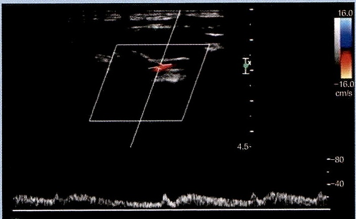
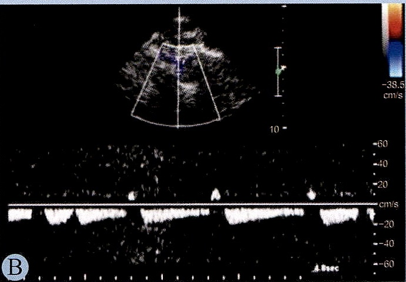
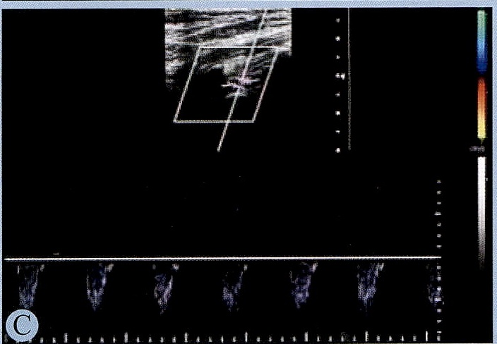
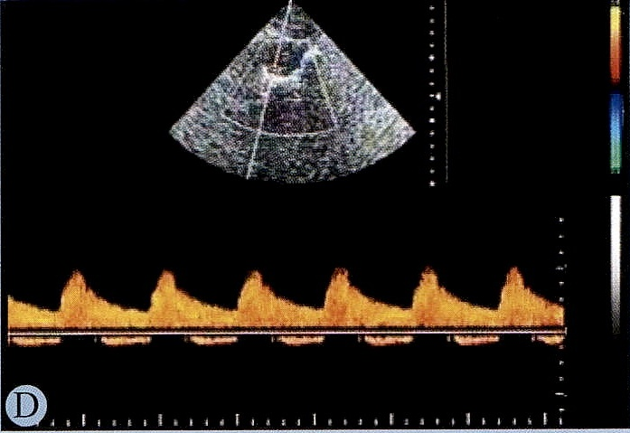
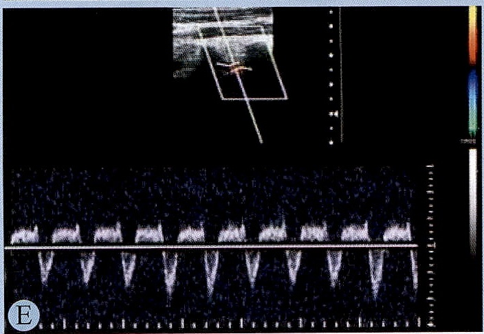
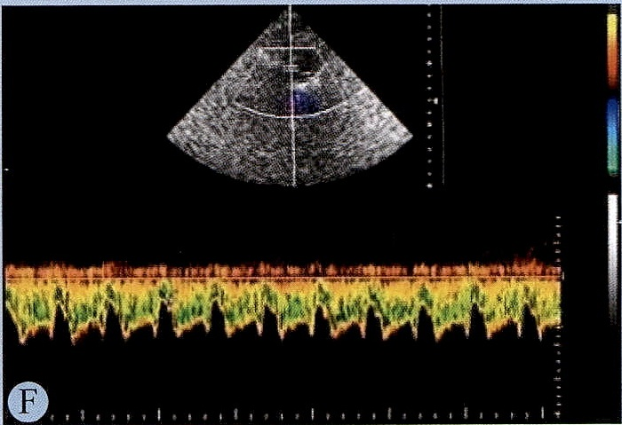
A. 颅外段椎动脉 CDFI 显示收缩期切迹频谱，为 I 级盗血；B. 颅内段椎动脉 TCCS 显示收缩期反向频谱，舒张期正向频谱，为 II 级盗血（图 A、图 B 为同一病例）；C. 颅外段椎动脉 CDFI 显示全收缩期反向频谱，舒张期无血流频谱，为 II 级盗血；D. 颅内段椎动脉 TCCS 显示收缩期及舒张期全程反向血流频谱，为 III 级盗血（图 C、图 D 为同一病例）；E. 颅外段椎动脉 CDFI 显示收缩期双向频谱，舒张期正向频谱，为 II 级盗血；F. 颅内段椎动脉 TCCS 显示收缩期切迹频谱，为 I 级盗血（图 E、图 F 为同一病例）
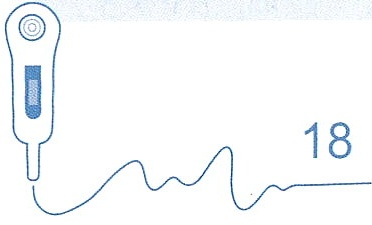
41 例锁骨下动脉盗血综合征患者的数字减影血管造影（digital subtraction angiography，DSA）或 CT 血管造影（CT angiography，CTA）检查结果为：锁骨下动脉中度狭窄者 9 例，右侧 3 例，左侧 6 例；锁骨下动脉重度狭窄者 24 例，右侧 5 例，左侧 19 例；左侧锁骨下动脉闭塞者 7 例，右侧头臂动脉闭塞者 1 例。DSA 检查显示盗血途径共 3 种：9 例为健侧椎动脉→基底动脉汇合处→患侧椎动脉→患侧锁骨下动脉，2 例为患侧颈外动脉→枕动脉→患侧椎动脉→患侧锁骨下动脉，1 例头臂动脉闭塞者为健侧椎动脉→基底动脉汇合处→患侧椎动脉→分别入患侧颈总动脉及锁骨下动脉，另外 29 例无法判定锁骨下动脉盗血。
根据以上结果，可知锁骨下动脉盗血综合征主要的盗血通路有3条：①从对侧椎动脉通过基底动脉交汇点到狭窄侧椎动脉（椎动脉→椎动脉）；②从基底动脉盗血到同侧椎动脉（基底动脉→椎动脉）；③枕动脉到同侧椎动脉（枕动脉→椎动脉）。其中，椎动脉→椎动脉盗血通路是最常见和最先出现的一条通路，本组患者中DSA检查显示为椎动脉→椎动脉盗血途径者10例（83%），枕动脉→椎动脉者2例（17%），以上不同的盗血途径可能造成颅内、外段椎动脉频谱的差异。本研究中12例患者经TCCS检查诊断的盗血程度重于CDFI检查，其中3例经TCCS检查诊断为I级盗血的患者经CDFI检查诊断为无盗血，而束臂试验阳性，说明此3例患者存在隐匿型盗血，CDFI检查出现了假阴性现象。上述12例颅内段盗血程度重于颅外段的情况可能是由经典的椎动脉→椎动脉盗血通路导致的。另2例患者经TCCS检查诊断的盗血程度轻于CDFI检查，DSA检查显示其盗血途径为枕动脉→椎动脉，说明以此盗血途径为主时，颅内椎动脉盗血程度轻于颅外椎动脉，甚至可能出现颅内椎动脉血流向上（方向正常）而颅外椎动脉血流向下（反向）的情况。因此，对锁骨下动脉盗血综合征患者的盗血程度进行判定时，颅内椎动脉与颅外椎动脉的联合检查至关重要。
在盗血通路中，通常以椎动脉→椎动脉最常见，其存在的2个条件是：①对侧椎动脉正常；②对侧锁骨下动脉无明显狭窄或闭塞。此通路代偿充分时，不会出现其他盗血通路，这也是一些患者临床症状不明显的原因，但当以上2个条件不足时，就可能出现其他通路的代偿。其中，基底动脉→椎动脉通路对颅内与颅外椎动脉盗血频谱差异的影响与椎动脉→椎动脉通路相同，而枕动脉→椎动脉通路与前两者盗血通路造成的影响刚好相反。本组选取2例经枕动脉→椎动脉盗血患者，其中1例为对侧椎动脉闭塞，另1例为对侧椎动脉先天发育异常，内径仅0.9 mm，血流纤细，以上因素使对侧椎动脉代偿不足或无法代偿，导致枕动脉→椎动脉通路开放。
3 条主要盗血途径中，椎动脉→椎动脉和基底动脉→椎动脉的盗血通路可能造
成颅内段椎动脉盗血程度重于颅外段椎动脉，枕动脉 →椎动脉盗血通路可造成颅内段椎动脉盗血程度轻于颅外段椎动脉。在盗血程度存在差异时，应该以盗血程度重的椎动脉为准；对于检出的Ⅰ级盗血与无盗血的差异，通过束臂试验来判定，即束臂试验阳性为有盗血，阴性为无盗血；因为椎动脉 →椎动脉为最主要的盗血通路，通常情况下，颅内段椎动脉盗血程度的判定比颅外段更敏感。
因此，江湖传言：“TCD 是锁骨下动脉盗血频谱检查最敏感的检查方法” 在大部分情况下（80% 以上）是正确的，而当出现比较少见的盗血途径（枕动脉→椎动脉盗血通路）时，颅外段椎动脉盗血程度可能高于颅内段，此时，常规颈部血管超声检查更加敏感。总之，颅内段与颅外段椎动脉联合检查至关重要。
参考文献
[1] 许敬华，李刚，张菁菁，等．腹主动脉异常频谱对主动脉缩窄及主动脉弓离断的间接诊断价值[J]. 临床超声医学杂志，2018，20（4）：271-273.
（本病例由浙江省丽水市人民医院超声科许敬华医师提供）
流体在流管中流动时，若通过一段弯曲的管道，就会在管壁侧向应力的作用下出现垂直于流向的运动，最终的结果就是导致通过弯管后的整体流动呈现螺旋状前进的模式（图1-9-1）。
人体的血管大部分是弯管，通过这些弯管后的血流基本上是螺旋式前进的。如果利用 CDFI 检查一支较大动脉的横切面时，常会看到管腔内的彩色信号是红蓝相间的，这就是血流螺旋造成的结果（图 1-9-2）。
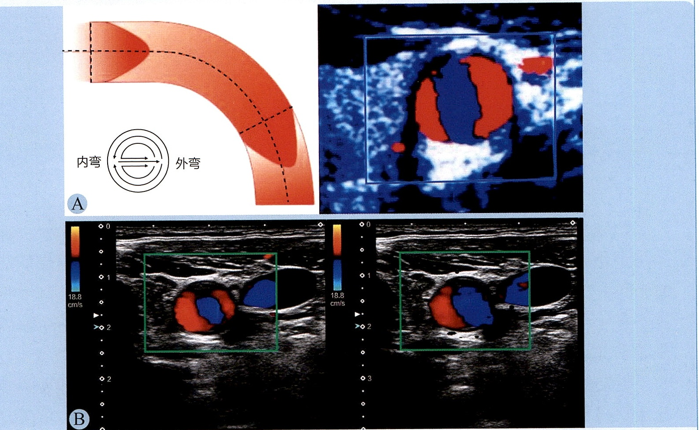
A. 血流经过弯曲的血管示意图；B. 颈总动脉内横切时出现的红蓝相间的彩色信号，是血流螺旋式前进的证据
由于常规的 CDFI 检查的空间分辨率有限，并不能直观地显示这种螺旋血流。如今，很多超声仪器都有精细的血流成像模式，某些成像模式具有极高的血流信号的空间分辨能力，对血管内细微的血流变化都能探及并能清晰的显示出来，利用这些技术能够直观地显示血管内螺旋式前进的特征。相信显示这些精细血流的超声技术，一定能够帮助超声医师理解很多正常和异常的血流动力学问题。
图 1–9–3 是利用超微血管成像（superb microvascular imaging，SMI）技术显示颈动脉切面清晰的螺旋式血流状态。
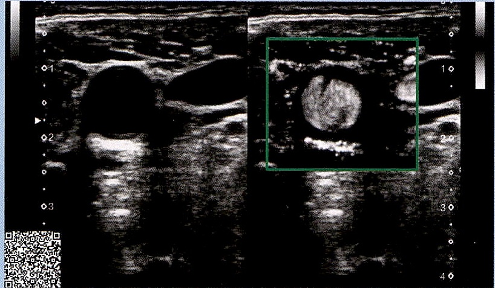
颈动脉蹼（carotid web）是位于颈动脉壁向腔内突出的“薄膜样”物，通常发生于颈内动脉近段后壁或颈动脉球部后壁。“颈动脉蹼”作为一个术语最早是由Momose等人于40多年前在4例颈动脉血管造影报告中提出的，并将其从纤维肌发育不良（fibromuscular dysplasia，FMD）中区分出来，但也有学者认为颈动脉蹼就是颈动脉纤维肌发育不良的一种表现形式，易被误诊为动脉粥样硬化斑块或夹层。
近期的一项研究表明，CTA 检查矢状位表现为颈内动脉后壁向腔内伸展的薄层充盈缺损及轴位的薄层隔膜与病理证实的颈动脉蹼相对应。而且，已有多项研究表明，颈动脉蹼是不明原因的前循环缺血性脑卒中的重要危险因素。
本节通过分析经 DSA 或 CTA 检查证实为颈动脉蹼的病例，提高超声对颈动脉蹼诊断的准确性。本组病例为 2017 年 2 月至 2020 年 4 月收集的临床上不明原因或反复发作的 11 例脑卒中患者，经颈动脉血管超声检出颈内动脉近段或球部后壁突起“薄膜样”物后，拟诊为颈动脉蹼，其中男性 4 例，女性 7 例，年龄 39～53 岁，平均年龄 44.7 岁。11 例患者均无高血压、糖尿病史，临床表现为偏身感觉障碍、运动障碍、短暂性脑缺血发作（transient ischemic attack，TIA）、偏盲、复视、构音障碍等。11 例患者在颈动脉血管超声检查后 1 周内行 DSA 或 CTA 检查，证实为颈动脉蹼。
本组11例拟诊为颈动脉蹼的患者经颈动脉血管超声检出，二维灰阶超声显示颈动脉球部或颈内动脉近段自管壁向管腔突出的膜状物呈等回声（图1-10-1A），活动度均不明显，长度为2.7～3.4 mm，10例膜状物周围未见明显“血栓样”回声，1例膜状物后方可见等回声血栓（图1-10-1B）；超声短轴可见“隔膜样”回声，近似动脉夹层表现（图1-10-1C）；CDFI显示膜状物后方血流呈红蓝相交的“涡流样”改变（图1-10-1D），形成血液滞留；脉冲波多普勒（pulsed wave Doppler，PW）测量膜状物区域血流速度为64/29～81/32 cm/s，与对侧相比，血流速度无明显增快。
以上 11 例患者均行 DSA 或 CTA 检查，DSA 显示颈动脉球部或颈内动脉近段向腔内伸展的膜状突起物（图 1-10-2A），可见造影剂排空延迟；CTA 显示矢状面表现为沿着颈动脉球后壁腔内薄层充盈缺损（图 1-10-2B）；以 DSA 或 CTA 检查的表现作为颈动脉蹼的诊断标准。本组 11 例患者中有 10 例既往有脑卒中病史，且以往 CT 显示几次脑卒中部位均为有颈动脉蹼侧的颈内动脉供血区域。
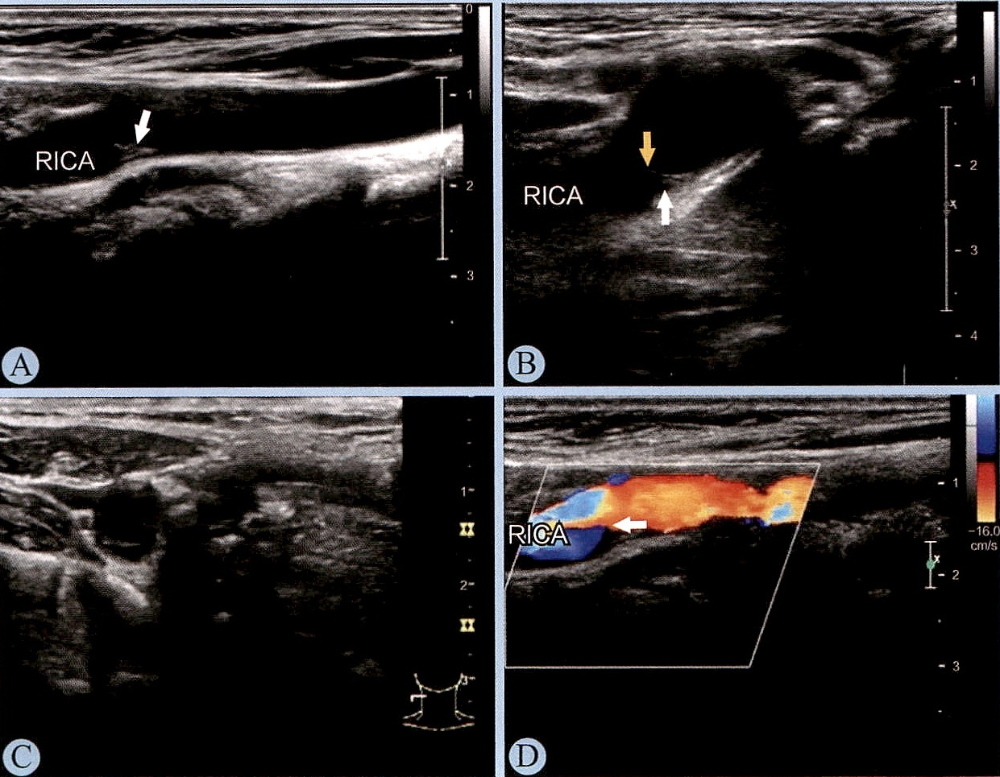
A. 二维灰阶超声显示颈内动脉近段后壁膜状物（箭头）；B. 二维灰阶超声显示膜状物（黄箭头），后方可见等回声血栓（白箭头）；C. 二维灰阶超声显示颈总动脉短轴可见“隔膜样”回声（近似动脉夹层）；D. CDFI 显示膜状物周围红蓝相间的血流（箭头）。RICA：右侧颈内动脉

A. DSA 显示颈内动脉近段向腔内伸展的膜状突起物（箭头）；B. CTA 显示颈动脉近段后壁腔内薄层充盈缺损（箭头）
颈动脉蹼从病理学上更倾向于一种颈动脉内膜纤维肌发育不良，位于颈动脉壁向腔内突出的“薄膜样”片状物，其产生的血栓可能是造成缺血性脑卒中的原因，所以，早期发现和早期干预十分重要。颈动脉蹼在形态学上有一定的特点，可以通过影像学检查辨认，CTA和DSA检查可作为诊断颈动脉蹼的标准已被近期研究证实，但超声检查该病的相关研究相对较少，这也是本研究的目的，希望能够通过超声检查为临床提供诊断颈动脉蹼的新标准。
本组病例的二维灰阶超声和CDFI检查都有其相应的特点，二维灰阶超声显示自颈内动脉管壁向管腔突出的膜状物呈等回声，长度为2.7～3.4 mm，本组超声检查测量的颈动脉膜长度明显小于Haussen等人的研究结果，Haussen等人的测量结果显示单侧颈动脉膜的中位数长度为3.6 mm（3.0～4.2 mm），由于Haussen等人的测量结果基于CTA检查，因此，能否得出“超声检查能够发现更小的颈动脉膜”这一结论有待进一步研究。动态超声还发现本组颈动脉膜的活动度均不明显，且突起于管腔造成的狭窄均不明显（狭窄率<50%），这与目前有关颈动脉膜的报道相符。Choi等人的研究中曾发现颈动脉膜周围形成血栓的病例，并从血流动力学角度阐述了颈动脉膜远端后方的血液滞留是形成血栓的机制（图1-10-3）。
本组患者中超声检查膜状物周围仅有1例可见“血栓样”回声，可见血栓形成那一刻的发现是可遇不可求的，但超声医师通过CDFI检查发现，颈动脉蹼后方血流表现出红蓝相交的“涡流样”改变，这与Choi等人研究的颈动脉蹼周围血栓的形成机制相近。另外，PW测量蹼周围的血流速度并无明显增快，血流频谱形态也无异常，颈动脉蹼造成的狭窄程度在50%以下，这种程度的狭窄应该不是反复发作的脑卒中的原因，血栓才是“罪魁祸首”。
以往颈动脉蹼的诊断主要依靠 DSA 或 CTA 检查，近年来，有学者对 “应用磁共振血管成像（magnetic resonance angiography，MRA）诊断颈动脉蹼” 进行了研究。在影像学上，CTA 与 MRA 检查近似，尤其在 CTA 轴位表现为薄层隔膜，有时与颈动脉夹层很难区分，但在动态超声检查时，颈动脉蹼的声像图与颈动脉夹层的真假腔血流区别较大，鉴别诊断并不困难，这可能是超声诊断颈动脉蹼比 CTA 更具优势的方面之一。DSA 检查的颈动脉蹼后方造影剂滞留现象与 CDFI 检查中出现的颈动脉蹼周围血流红蓝相交的 “涡流样” 改变等，都从血流动力学的角度证实了可能形成血栓的机制。
目前，对颈动脉蹼的治疗方面的研究较少，Choi 等人的研究中有 4 例患者经颈动脉内膜剥脱术治疗有效，Haussen 等人的研究显示单纯抗血小板治疗效果不明确。另外，有学者研究表明，标准化抗凝治疗可能有效。近年来，有学者研究应用支架治疗颈动脉蹼并发现有效。
颈动脉蹼可能是导致不明原因脑卒中的一个重要因素，对于低年龄段的大脑同一区域反复发作的脑卒中患者要更加警惕颈动脉蹼的存在，甚至有研究报道，加勒比黑种人缺血性脑卒中人群中，颈动脉蹼的发病率在年轻患者的比例高达23%，这其中是否存在人种差异还未可知，但发现颈动脉蹼后，如果不加干预，造成反复发作的脑卒中的可能性极大。因此，对于颈动脉蹼的早期诊断至关重要，而超声检查在诊断颈动脉蹼中具有简便、快捷、无创等优势，无须任何特殊准备，又可避免放射线可能造成的不良影响，可作为临床术前诊断颈动脉蹼的首选方法。
经典病例：
下面是多年前遇到的一个病例，没有 CTA 等其他检查资料，可能也是一种蹼，只是发生在椎动脉（椎动脉嵴样突起，图 1-10-4）。
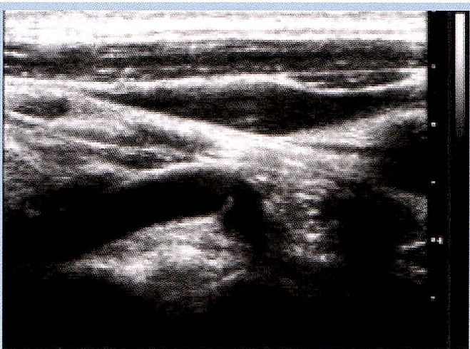
华斌注
除颈动脉蹼外，其他部位的类似病变报道甚少，并非其他部位不会发生这类病变，而是其他部位发生此类病变且出现有临床意义的症状的概率极低，因此不值得关注。从颈动脉蹼发生的可能机制来看，其可能与胚胎时期血管形成过程中的不同分叉之间融合吸收不良有关，因此，在任何血管分叉或分支处都有可能发生。
参考文献
[1] COUTIHO J M, DERKATCH S. Carotid artery web and ischemic stroke: A case-control study. Neurology, 2017, 88(1): 65–69.
[2] MOMOSE K J, NEW R F. Non-atheromatous stenosis and occlusion of the internal carotid artery and its main branches. Am J Roentgenol Radium Ther Nucl Med, 1973, 118 (3): 550–566.
[3] TOUZE E, OPPENHEIM C, TRYSTRAM D, et al. Fibromuscular dysplasia of cervical and intracranial arteries. Int J Stroke, 2010, 5 (4): 296–305.
[4] OSBORN A G, ANDERSON R E. Angiographic spectrum of cervical and intracranial fibromuscular dysplasia. Stroke. 1977, 8(5): 617–626.
[5] CHOI P M, SINGH D, TRIVEDI A, et al. Carotid webs and recurrent ischemic strokes in the era of CT angiography. AJNR Am J Neuroradiol, 2015, 36 (11): 2134–2139.
[6] HAUSSEN D C. Carotid web (intimal fibromuscular dysplasia) has high stroke recurrence risk and is amenable to stenting. Stroke, 2017, 48 (11): 3134–3137.
[7] SAJEDI P I, GONZALEZ J N, et al. Carotid bulb webs as a cause of “cryptogenic” ischemic stroke. AJNR AmJ Neuroradiol, 2017, 38 (7): 1399–1404.
[8] ELMOKADEM A H, ANSARI S A, SANGHA R, et al. Neurointerventional management of carotid webs associated with recurrent and acute cerebral ischemic syndromes. Interv Neuroradiol, 2016, 22 (4): 432–437.
[9] BOESEN M E, ESWARADASS P V, SINGH D, et al. MR imaging of carotidwebs. Neuroradiology, 2017, 59(4): 361–365.
[10] CHOI P M, SINGH D, TRIVEDI A. Carotid webs and Recurrent Ischemic Strokes in the Era of CT angiography. AJNR Am J Neuroradiol, 2015, 36(11): 2134–2139.
[11] MARTINEZ-PEREZ R, LOWNIE S P, PANDEY S K, et al. Stent placement for carotidweb. World Neurosurg, 2017, 98: 879, e9–879, e11. https://doi.org/10.1016/j.wneu.2016.11.050.
[12] PACEI F, QUILICI L, MULLIN S, et al. Web of the carotid artery: an under-recognized cause of ischemic stroke. J Clin Neuroscj, 2018, 50: 122–123.
（本病例由浙江省丽水市人民医院超声科许敬华医师提供）
颈动脉蹼（carotid web），又称为颈动脉内膜纤维肌发育不良，是颈内动脉少见的血管病变，也是隐源性（即原因不明的）和复发性缺血性脑卒中的重要原因。
“颈动脉蹼”在文献中有许多不同的名称，包括颈动脉蹼状隔膜、颈动脉假性瓣膜皱襞、颈动脉横膈膜等。“颈动脉蹼”是使用最广泛的描述。
颈动脉蹼在临床上非常罕见，2组系列报道怀疑为缺血性脑卒中患者在接受CTA检查后只有1.0%～1.2%的患者发现有颈动脉蹼的影像学证据。
临床表现：少部分颈动脉蹼患者临床表现为再发性缺血性脑卒中或再发性短暂性脑卒中，尤以年轻患者为主。有研究发现，颈动脉蹼患者缺血性脑卒中复发率高达29%，其他多无症状。
病理机制：颈动脉蹼是一种薄的、线性纤维性膜性结构，从颈内动脉球的后部延伸到管腔内，位于颈动脉分叉处。组织学上是一种罕见的纤维肌异型增生，因此也被称为内膜异型纤维肌发育不良。
颈动脉蹼非常容易合并血栓形成，血栓形成可能与缺血性脑卒中有直接关系。这是血液在颈动脉蹼远端淤滞，导致血栓形成，然后再脱落造成的远端栓塞。
影像学检查：超声检查是诊断颈动脉蹼的最简单的影像手段，典型表现为颈动脉分叉处靠近颈内动脉一侧“瓣膜样”中等回声，其基底部较厚，尖端指向颈内动脉的远端。颈动脉蹼可能伴有或不伴有血流动力学上的狭窄表现。要注意颈动脉蹼尖端附近的血栓形成，伴有血栓形成的颈动脉蹼是一种危急状态，需要临床医师紧急处理。
其他检查如 DSA、CTA、MRA 等均可以诊断颈动脉膜（图 1-11-1）。
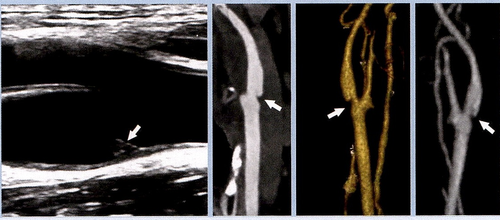
颈动脉蹼（箭头）的超声、CT、CTA、DSA 检查
来源：RENARD D，HAMPTON J，KEITA M，et al. Teaching NeuroImages：Multimodality imaging of carotid web. Neurology. 2018，90（17）：e1541. https://doi.org/10.1212/wnl.0000000000005359.
治疗和预后：考虑到缺血性卒中复发的高风险，正确处理颈动脉躁是很重要的。处理方法包括：①药物治疗，如使用抗血小板药物；②手术治疗，如颈动脉支架植入术或动脉内膜切除术。虽然证据有限，但有研究发现，接受手术治疗的患者缺血性脑卒中的发生率低于仅接受药物治疗的患者。
鉴别诊断：颈动脉蹼需要与以下疾病进行鉴别诊断。
（1）自发性颈内动脉夹层的皮瓣：颈内动脉夹层多发生在颈内动脉远端，边界
较不规则，可能导致假性动脉瘤、动脉直径扩张等。
（2）动脉粥样硬化斑块：边界多不规则，回声多不均匀，可伴有钙化（图1-11-2）。
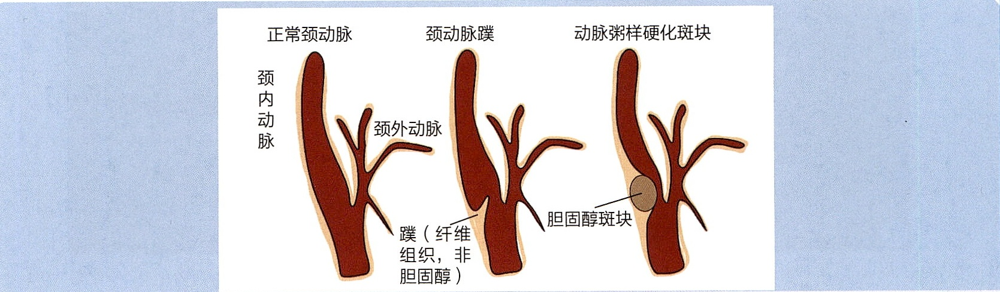
门静脉狭窄在临床上非常少见，主要是由于肝外门静脉阻塞，导致门静脉高压、脾大和食管胃底静脉曲张，继而引起的消化道出血。恶性门静脉狭窄占所有门静脉狭窄或闭塞的15%～24%，通常是门静脉血栓或肿瘤压迫门静脉所致。肝门部、胆管下段、十二指肠恶性肿瘤或手术过程中都可能造成门静脉损伤和受压，继而导致门静脉狭窄。门静脉狭窄的治疗仍存在争议，门静脉支架置入术是比较有效的治疗手段。超声检查特别是多普勒超声检查可以作为一种无创的评估门静脉狭窄的一线检查方法，同时也是门静脉支架置入术后评估支架血流通畅度及有无再狭窄发生的首选检查方法。二维灰阶超声可以直接显示门静脉管腔的狭窄，CDFI可显示狭窄处的五彩血流信号，PW可以通过测量狭窄处血流速度增加的幅度来判断狭窄的严重程度。
经典病例：
患者男性，64岁，肝门部肿瘤术后，出现腹水、脾大、胃底静脉曲张等门静脉高压症状。超声检查显示门静脉外压性狭窄，考虑为纤维瘢痕所致（图1-12-1）。
行门静脉支架置入术，术后患者的门静脉高压症状显著缓解。术后初期（术后1个月）超声检查见图1-12-2。
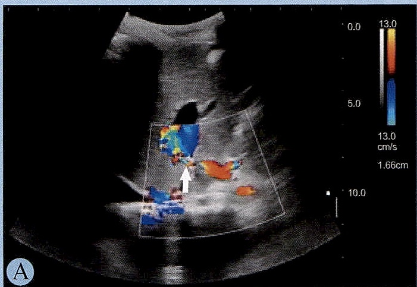

A.CDFI 显示狭窄段门静脉（箭头），局部呈较高速的纤细五彩血流信号；B. 超声显示狭窄段门静脉（箭头），远端呈“瘤样”扩张
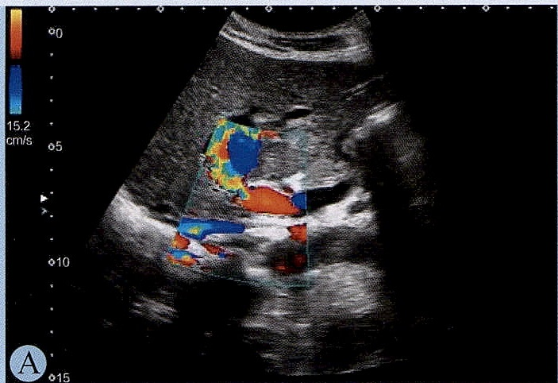
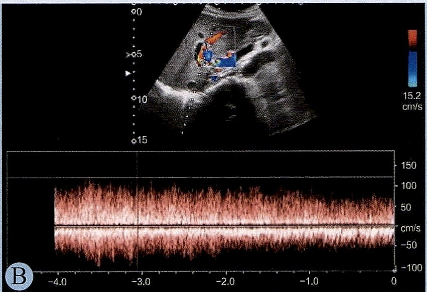
A.CDFI 显示门静脉支架置入术后初期，原狭窄处管径增宽，血流基本通畅，局部仍有流速加快现象，流速约为 120 cm/s；B.频谱多普勒超声显示门静脉支架置入术后初期，原狭窄处管径增宽，血流基本通畅，局部仍有流速加快现象，流速约为 120 cm/s，患者的门静脉高压症状显著缓解
患者在门静脉支架置入术后 8 个月再度出现腹水、脾大等门静脉高压症状，超声检查发现门静脉支架置入术后再度狭窄，局部血流速度超过 280 cm/s（图 1-12-3）。
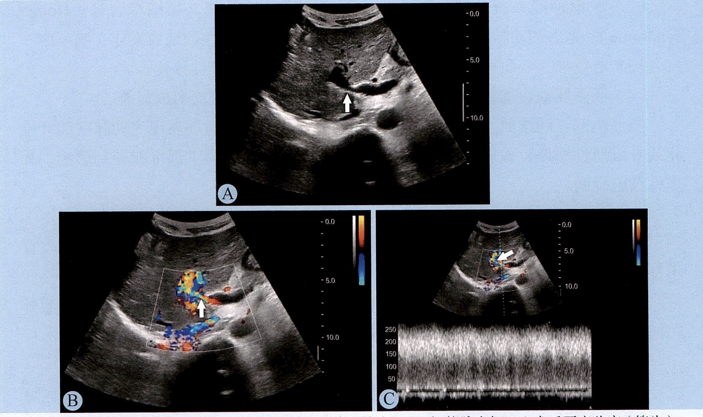
A. 二维灰阶超声显示门静脉支架置入术后再度狭窄（箭头）；B. 门静脉支架置入术后再度狭窄（箭头），CDFI 显示局部为高速的五彩血流信号；C. 门静脉支架置入术后再度狭窄（箭头），频谱多普勒超声显示局部为高速的五彩血流信号，狭窄处流速超过 280 cm/s
有学者认为，动脉纤维肌发育不良（fibromuscular dysplasia，FMD）与“香槟酒杯征”有关，本节就介绍一下纤维肌发育不良。
纤维肌发育不良是一组异质性的血管病变，其特征是特发性、非炎性、非动脉粥样硬化的中小动脉病变，患病率未知。这种情况在年轻女性中最常见，男女比例为1:3，通常在30～50岁确诊。
纤维肌发育不良的患者常无症状，有症状的患者通常表现为以下几个方面。
（1）因肾动脉狭窄引起的高血压，或少见的肾损害。
（2）中枢神经系统症状，如头痛、颈痛、搏动性耳鸣、霍纳综合征（Horner syndrome），是由颈动脉和椎动脉夹层形成受累引起的短暂性脑缺血发作、脑卒中。
（3）心绞痛、心肌梗死，或因冠状动脉受累导致的心脏性猝死。
（4）肠系膜缺血的症状，肠系膜梗死是罕见的，因为侧支形成显著。
发病机制：纤维肌发育不良的病因尚不清楚，其基本病理表现为动脉壁的纤维化或纤维肌性增厚，血管壁的任何一层（内膜、中膜或外膜）都可能受到影响，无炎性细胞浸润。
疾病分类：根据受影响的血管壁层次，纤维肌发育不良可分为以下几类。
（1）内膜受累型（5%）：内膜纤维增生，即颈动脉蹼、颈动脉内膜纤维肌发育不良）。
（2）中膜受累型（90%～95%）：中膜发育不良（70%，最常见类型）；中膜外（外膜下）纤维化（15%～20%）；中膜增生（8%～10%）。
（3）动脉外膜受累型（罕见）：外膜纤维增生（1%）。
纤维肌发育不良可以导致阶段性的动脉狭窄，而狭窄段间伴有局部的扩张区域（小动脉瘤）。狭窄－扩张相间隔就形成“串珠状”外观（图1-13-1）。纤维肌发育不良也会削弱血管壁的各层次间的联系，使其易于剥离，形成动脉夹层。
纤维肌发育不良可累及体内任何中等大小的动脉，通常是多灶性和双侧的（累及肾动脉时，双侧受累可达60%）。纤维肌发育不良通常累及血管中段，很少累及血管起始部（这与动脉粥样硬化不同），以下部位更容易累及。
（1）肾动脉（最常见）：患病率约为5%，大部分患者无临床症状。
（2）颈－脑动脉（第二常见）：患病率约为1.5%（范围在0.3%～3%），包括颅外颈内动脉和椎动脉。
（3）髂动脉。
（4）腹腔干和肠系膜动脉。
（5）锁骨下和腋动脉。
并发症：纤维肌发育不良的并发症主要为：①自发性动脉夹层；②远端栓塞（动脉瘤内血栓形成）；③动脉瘤；④肾动脉瘤，约40%的纤维肌发育不良伴肾动脉瘤；⑤颅内动脉瘤和（或）蛛网膜下腔出血；⑥动静脉瘘。
影像学检查：动脉造影与 CTA、MRA 和 DSA 是纤维肌发育不良主要的影像学检查手段，典型的“串珠征”是特异性的影像学征象（图 1-13-2，图 1-13-3）。
少见的内膜和外膜类型在影像学上伴有局灶性同心、长节段管状狭窄或憩室状外凸（见于颈动脉内膜纤维肌发育不良，图1-13-3）。
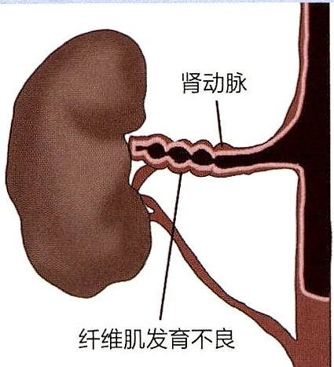
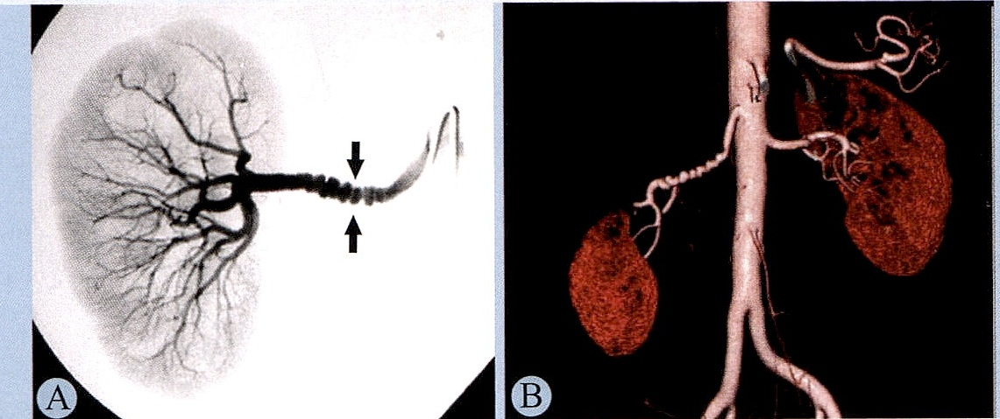
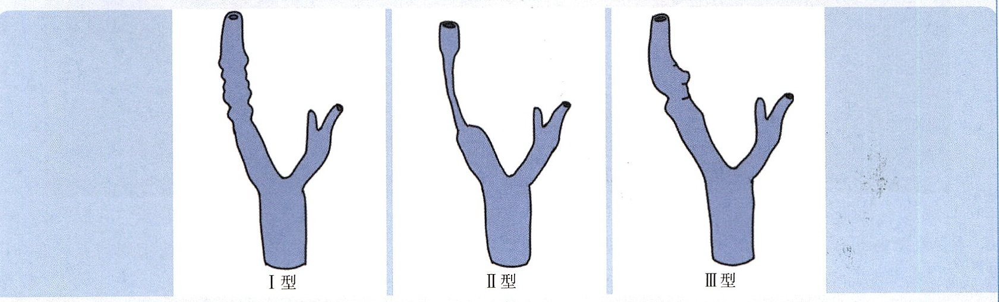
典型的血管造影特征包括血管袢、梭形血管扩张和“串珠征”。较不典型的特征包括动脉夹层、动脉瘤和蛛网膜下腔出血。
超声检查对于纤维肌发育不良有重要的提示价值。多数情况下，轻微的纤维肌发育不良和局灶的纤维肌发育不良难以鉴别，特别是少见的内膜和外膜类型，这两种类型仅可见管壁增厚，很难与动脉硬化和动脉炎相鉴别，需要结合临床进行判断。对于常见的多灶性纤维肌发育不良，超声一般可以做出初步判断。
典型的纤维肌发育不良在累及较大或较表浅血管时，利用二维灰阶超声可以显示管腔的“串珠样”改变，仅一组狭窄和扩张连在一起，则显示为所谓的“香槟酒杯征”。但是在大多数情况下，病变发生的部位较深，二维灰阶超声很难直接显示，这时CDFI检查就显示出巨大的优势了。
有时利用彩色多普勒超声或能量多普勒超声可以直接显示管腔的串珠状变化。但由于 CDFI 检查的空间分辨率较低，且彩色信号的外溢伪像显著，CDFI 检查常不能显示血管空间结构上的“串珠征”。但是，血流在狭窄处流速快、扩张处流速慢，CDFI 显示为特征性的“花色血流－单色血流”交替出现的彩色“串珠征”（图1-13-4）。
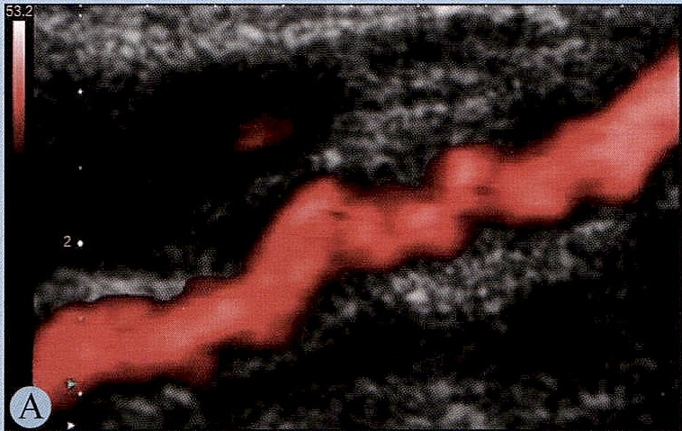
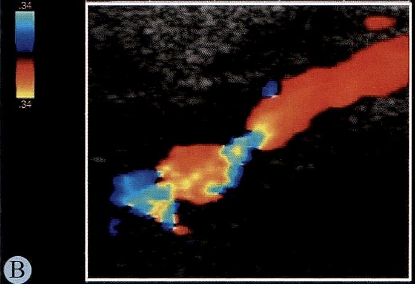
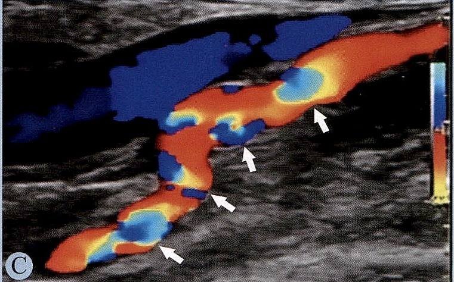
A. 能量多普勒显示纤维肌发育不良的“串珠征”（颈内动脉）；B. CDFI显示纤维肌发育不良的“香槟酒杯征”（颈内动脉）；C. CDFI显示纤维肌发育不良的彩色“串珠征”，箭头示狭窄处流速加快出现的五彩血流，信号被血管扩张处流速较低的单色血流间隔
很多超声仪器具有提高血流空间分辨率的技术，如 B-Flow 技术、SMI 技术等，利用这些技术能够更清楚地显示纤维肌发育不良的 “串珠征”，以提高医师的诊断水平（图 1-13-5）。
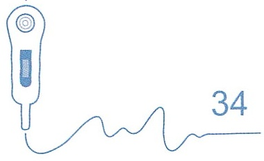
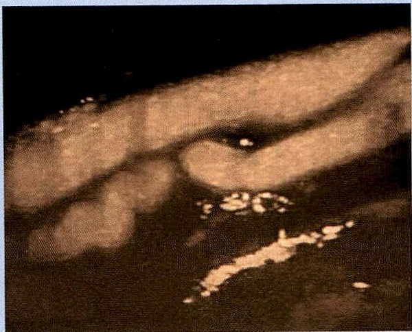
治疗和预后：无症状的患者仅需要随诊观察。有症状的患者行血管成形术效果良好，长期通畅率高，通常不需要行支架置入术。
鉴别诊断：纤维肌发育不良需要与以下疾病进行鉴别。
（1）动脉粥样硬化：通常发生在动脉的起点或近端。
（2）血管炎：红细胞沉降率升高或降低，体温升高。
（3）外伤性/医源性血管损伤：需结合病史。
（4）节段性动脉中膜溶解征：好发于大血管。
（5）血管痉挛。
参考文献
[1] KAUFMAN J A, LEE M J. Vascular and Interventional Radiology: The Requisites. Mosby Inc, 2004.
[2] WILLOTEAUX S, FAIVRE-PIERRET M, MORANNE O, et al. Fibromuscular dysplasia of the main renal arteries: comparison of contrast-enhanced MR angiography with digital subtraction angiography. Radiology, 2006, 241(3): 922–929.
[3] PLOUIN P F, PERDU J, LA BATIDE-ALANORE A, et al. Fibromuscular dysplasia. 2007, 2 : 28.
[4] FURIE D M, TIEN R D. Fibromuscular dysplasia of arteries of the head and neck: imaging findings. AJR Am J Roentgenol, 1994, 162 (5): 1205–1209.
[5] LASSITER F D. The string-of-beads sign. Radiology, 1998, 206 (2): 437–438.
[6] DE MONYÉ C, DIPPEL D W, DIJKSHOORN M L, et al. MDCT detection of fibromuscular dysplasia of the internal carotid artery. AJR Am J Roentgenol,
2007, 188 (4): W367-W369.
[7] VARENNES L, TAHON F, KASTLER A, et al. Fibromuscular dysplasia: what the radiologist should know: a pictorial review. Insights Imaging, 2015, 6(3):295–307.
[8] OLIN J W. Recognizing and managing fibromuscular dysplasia. Cleve Clin J Med, 2007, 74 (4): 273–274, 277–282.
[9] MICHELIS K C, OLIN J W, KADIAN-DODOV D, et al. Coronary artery manifestations of fibromuscular dysplasia. J Am Coll Cardiol, 2014, 64 (10): 1033–1046.
正常情况下，肝静脉的属支以锐角汇入主干，整体呈树枝状。布－加综合征（Budd-Chiari syndrome）患者在肝静脉的某支发生阻塞时，其肝内会形成大量的侧支血管。这些侧支血管与原有肝静脉之间多数情况下是近乎垂直分布的，因此，在超声切面上这些侧支血管与原有的肝静脉之间就构成一个接近直角的关系，这就是“直角血管征”。
多条侧支血管与原有的肝静脉还常常构成一个比较规则的矩形结构，有学者称之为“矩形框征”。
“直角血管征”和“矩形框征”仅适用于肝静脉侧支血管的认定。动静脉短路、动门脉短路一般不会出现这些征象。因此，“直角血管征”和“矩形框征”可以作为布-加综合征患者肝内静脉侧支形成的主要征象（图1-14-1，图1-14-2）。
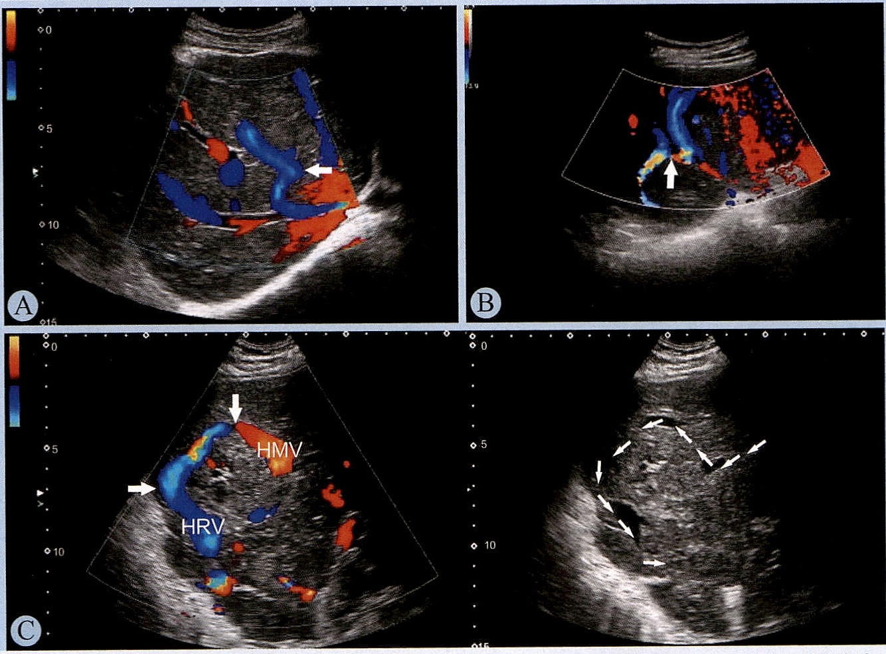
A. 肝中静脉近心端闭塞，肝中静脉血流经侧支汇入肝右静脉，肝中静脉与侧支血管间形成“直角血管征”（箭头）；B. 肝静脉近端闭塞，肝静脉与侧支血管间形成“直角血管征”（箭头）；C. 肝中静脉近心端闭塞，肝中静脉血流经侧支汇入肝右静脉，侧支血管与肝中静脉和肝右静脉间形成2个“直角血管征”（粗箭头）。HMV：肝中静脉（其内的血流是反向的）；HRV：肝右静脉；多个细箭头：血流方向
布－加综合征，肝内多条静脉间侧支围成“矩形框征”（箭头）
频谱多普勒超声在检查时偶尔可以听到频谱的声音伴有海鸥鸣叫一样的声音，称为“鸥鸣音”，同时在频谱上可以显示为基线两侧出现平行的“条带样”亮线（图1-15-1）。
超声医师在检查时听到的声音中夹杂着一种 “哨样” 的声音，就是 “鸥鸣音”，频谱中出现的 “条带样” 亮线是其频谱表现。
频谱多普勒超声检查时出现的这种“鸥鸣音”的报道多见于超声心动图检查，可见于二尖瓣脱垂和狭窄、腱索断裂及人工金属瓣膜置入术后的患者。一般认为，这种现象与高速血流冲击心内结构形成的相应结构的谐振有关，常伴有一条基频振动和多条谐振信号（图1-15-2）。
此外，在动脉狭窄、动静脉瘘等出现高速血流的状况下，都有出现 “鸥鸣音” 现象的报道（图 1-15-3）。
在频谱上出现的这种“条带样”亮线，也有学者称之为“虎斑征”。总之，这种现象的出现高度提示周围存在高速的血流信号，是一种值得关注的病理现象。
门静脉到腔静脉系统的分流在肝硬化门静脉高压症患者中非常常见。这些分流主要通过肝外的门腔分流通路实现，相关内容在其他书中都有详细的论述。
肝内门静脉与肝静脉间的分流（肝内门静脉－肝静脉瘘）这种情况比肝外分流要少见得多。肝内门静脉与腔静脉之间的分流可能是后天形成的（肝硬化、外伤、门静脉瘤破裂），也可能是先天性的。有研究显示，50例门静脉－肝静脉分流中有76%发生在非肝硬化患者中。
如果没有肝病或外伤史的患者出现门静脉－肝静脉瘘，则认为其为自发性或先天性。一些学者推测，这些分流代表了胚胎静脉吻合的持续性，是卵黄静脉（门静脉、肝静脉、部分下腔静脉的前体）分支之间的连接退化失败造成的。也有学者认为，门静脉瘤破裂并进入肝静脉是导致门静脉－肝静脉瘘的原因。研究认为，发生在肝左叶的门静脉－肝静脉瘘可能多是先天性的，而发生于右肝的门静脉－肝静脉瘘可能多与肝硬化门静脉高压症有关。
目前，肝内门静脉－肝静脉瘘的临床重要性存在争议。一般来说，慢性肝病基础上的门静脉－肝静脉瘘可能与肝性脑病有关，其他可能的临床相关的病理生理变化与分流程度有关。从理论上讲，一个大的瘘口会对全身血流动力学产生不利的影响，甚至随高流量的全身循环的发展而导致心力衰竭。大多数肝内门静脉分流术由于分流量小，不太可能有显著的临床影响。
Tanoue 等人的研究认为，70% 肝内门静脉 – 肝静脉瘘的交通处伴有 “瘤样” 扩张。
经典病例：
患者男性，60岁，乙型肝炎伴肝硬化多年。超声检查显示右肝前叶见蜂窝状囊性团块，该囊性团块一端与门静脉右前支的两条分支相通，另一端与肝中静脉相通。CDFI显示囊性团块内充满血流信号，门静脉右前支的两条分支为输入血流，肝中静脉为引流血管。肝中静脉与该囊性团块连接处的血流为高速湍流，最高流速为280 cm/s（图1-16-1，图1-16-2）。
A. 二维灰阶超声显示右肝前叶见蜂窝状囊性团块，该囊性团块一端与门静脉右前支（RPV）的两条分支相通，另一端与肝中静脉（HMV）相通；B.CDFI 显示门静脉右前支的两条分支为输入血流，肝中静脉为引流血管；C. 频谱多普勒超声显示门静脉右前支的两条分支为输入血流，肝中静脉为引流血管，肝中静脉与该囊性团块连接处的血流为高速湍流，最高流速为 280 cm/s
CDFI 显示右肝前叶见蜂窝状囊性团块，该囊性团块一端与门静脉右前支的两条分支相通，另一端与肝中静脉相通。门静脉右前支的两条分支为输入血流，肝中静脉为引流血管
（本病例来自北京市密云区医院）
上一节介绍了肝内门静脉－肝静脉瘘的典型病例，其中提到：Tanoue 等人的研究认为，70% 肝内门静脉－肝静脉瘘的交通处伴有 “瘤样” 扩张。下面分享的病例就是一个典型的 “瘤样” 扩张型的门静脉－肝静脉分流（图 1-17-1）。
1990年Park等人提出了先天性肝内门-体静脉分流的分类，具体如下。
Ⅰ型：右门静脉与下腔静脉间有恒定直径的管道相连。
Ⅱ型：局部分流，在单个肝段内有一个或多个小的通道连通外周门静脉分支与肝静脉分支。
Ⅲ型：通过“瘤样”扩张的囊腔连接的外周门静脉和肝静脉。
Ⅳ型：外周门静脉和肝静脉在几个节段内的多重连通。
除上述分类之外，其他学者还提出了第五种类型，即静脉导管持续开放。
A. 二维灰阶超声显示右肝后叶可见囊性包块，内有分隔；B. CDFI 显示囊腔内为彩色血流信号；C. 频谱多普勒超声显示囊腔内为较高速的血流信号，频谱类型介于门静脉与肝静脉之间，略呈毛刺状；D. 仔细分析血流情况，CDFI 显示囊腔内血流一端连接于门静脉右后支（黑箭头），另一端连接于右肝静脉（白箭头），PV 为门静脉
先带大家看一张有趣的图片：扭曲的颞动脉（图1-18-1）。那么，超声医师为什么要检查颞动脉，这种颞动脉扭曲有什么意义呢？
华斌的超声笔记 第6辑
颞动脉在正常情况下就是迂曲走行的，即使扭曲成图1-18-1这样也没有什么临床意义。超声医师在临床上检查颞动脉主要是为了排除颞动脉炎。
颞动脉炎也称巨细胞动脉炎。虽然动脉炎症通常发生在颞动脉，但人体内任何大中型动脉几乎都可以发生炎症。颞动脉炎好发于50岁以上的人群，女性比男性更容易患病。颞动脉炎的确切原因尚不清楚，但是人体自身免疫反应可能是最重要的因素。此外，过量使用抗生素、某些严重感染也可能与颞动脉炎有关。
颞动脉炎可以引起非常严重的并发症，所以，及早确诊和及时治疗可以减少并发症的发生。
以下这些症状可能与颞动脉炎有关，但是多数不具有特异性。
（1）复视。
（2）一只眼睛突发性、永久性失明。
（3）剧烈的头痛，通常发生在太阳穴处。
（4）疲劳。
（5）无力。
（6）食欲不振。
（7）下颌疼痛，有时会发生在咀嚼时。
（8）体温升高。
（9）体重减轻。
（10）肩膀痛，臀部痛，肌肉僵硬。
（11）头皮和太阳穴有压痛。
临床上伴有这些症状且不能排除颞动脉炎时，都应该行常规颞动脉的超声检查。高频超声检查能够及时提示颞动脉炎的影像学改变。声像图上，颞动脉炎表现为动脉壁的弥漫性增厚，呈现为低回声，通常与周围组织的界限不清，多数颞动脉基本通畅，可以伴有不同程度的狭窄。在超声横切面检查时，可见管腔被低回声包绕，称为颞动脉的“晕征”（图1-18-2）。
糖皮质激素是治疗颞动脉炎最有效的药物（图1-18-3）。
A. 超声横切面显示增厚的动脉壁呈现为“晕征”；B. CDFI 显示迂曲的颞动脉周围被低回声包绕，这些低回声是增厚的动脉壁
矿化性血管病（mineralizing vasculopathy），也称为豆状核纹状体血管病（lenticulostriate vasculopathy，LSV），又称为丘脑纹状体血管病，于20世纪60年代首次报道，在美国费城（Philadelphia）的一次先天性风疹流行后被人们发现。该病变仅限于丘脑和基底神经节的血管壁，病理表现为丘脑和基底神经节的血管壁的嗜碱性矿物质沉积。
1985 年，Grant 等人首次提供了矿化性血管病的头颅成像描述，利用超声检查
发现了丘脑和基底神经节树枝状回声增强结构，Grant等人认为这是矿化性血管病的影像学表现，这些表现不能被CT和MRI检查发现。同年，Teele等人在美国波士顿儿童医院（Boston Children Hospital）对近4500例头部超声检查进行了详细的研究，发现了12例以前未报告的矿化性血管病。其中，8例婴儿患有先天性感染（巨细胞病毒5例、风疹2例、梅毒1例），但在没有明显感染的病例中，3例婴儿有13-三体综合征，1例婴儿没有病理诊断。其中，4例婴儿接受了尸检，包括大脑的组织病理学切片。所有患儿均有明显的血管病理改变，表现为嗜碱性沉积，与矿化和细胞增生相一致。
Teele 等人首先得出结论，在尸检标本中观察到的局灶性血管病变可能是新生儿颅脑超声检查发现的丘脑和基底神经节树枝状回声增强结构的病理基础（图 1-19-1）。
此后，有相当多的研究表明，围产期的很多异常如前面提到的先天性感染、染色体异常，以及母胎酒精暴露、围产期窒息、双胞胎输血综合征都可能与超声发现的这些树枝状强回声有关，也同样与血管神经病变有关。
之前，矿化性血管病还被认为是不常见的。然而，由于人们的健康意识越来越强，以及更先进的、分辨率更高的超声仪器的出现，导致矿化性血管病的患病率增加。例如，Coley等人在2000年的研究报告中指出，超过4.2%的新生儿患有该病。
初期，基于以前的文献认识，国外很多的儿童医疗中心，在新生儿颅脑超声筛查过程中一旦发现丘脑内树枝状的回声增强，就被诊断为矿化性血管病，从而进行一系列的相关检查，以排除先天性感染或染色体异常。然而，20多年的临床实践显示，绝大部分超声诊断为矿化性血管病的患儿并没有其他阳性发现，而且后期的随诊也显示其神经系统的发育与不伴有丘脑内树枝状回声增强的患儿无差别。
目前，循证医学的证据还不是很充分，但可以认为，新生儿颅脑超声检查发现的丘脑内树枝状回声增强可能是一种意义不大的偶然现象（图1-19-2，图1-19-3），在2%～5%的患儿中发生，早产儿的发生率可能会更高一些。但是，总体来看，超声所见的矿化性血管病患儿，颅内出血的发生率要高一些。
从事新生儿颅脑超声的医师应该认识以下几点。
（1）丘脑内树枝状回声增强在新生儿颅脑检查中并不少见，占2%～5%。
（2）多数情况下，丘脑内树枝状回声增强可能是一种意义不大的偶然发现。
（3）患儿如果没有其他特殊的神经系统异常，提醒患儿家长不必过分焦虑，也无须过度检查。
（4）对于早产儿，要警惕颅内出血的发生。
肝尾叶位于肝脏的后上部，在左前方以静脉韧带与左肝相隔，静脉韧带与肝胃韧带相延续。肝尾叶的后界为下腔静脉，前界为门静脉左支水平段。肝尾叶的右侧直接与肝右叶相延续，这一部分被称为尾状突。
约 10% 的健康人群中，肝尾叶的左侧向下可见另外一个突起，这个突起可以一直延伸至胰腺颈部，此为乳头状突，常被误认为是肿大的淋巴结。肝尾叶的血供主要来自门静脉左支水平段的直接分支（图 1-20-1）。
A. 二维灰阶超声显示肝尾叶的边界，箭头为静脉韧带；B. CDFI 显示肝尾叶的血供，直接来自门静脉水平段的小分支（箭头）进入肝尾叶内。 S₁：肝尾叶； S₂：左肝 S₂ 段； S₄：左肝 S₄ 段；ivc：下腔静脉；RL：右肝；H：门静脉左支水平段；s：门静脉左支矢状面；HGL：肝胃韧带
在胎儿期，静脉韧带内有静脉导管，静脉导管连接门静脉左支矢状部与下腔静脉，富含营养和氧的脐静脉血经脐静脉、门静脉矢状部、静脉导管、下腔静脉进入右心房，再经房间隔进入左心房，进一步为全身供血。
胎儿出生后，静脉导管会逐渐闭合、纤维化，构成静脉韧带的一部分。新生儿期，很长一段时间内静脉导管都是开放的。几乎所有的新生儿在出生1～2天内静脉导管是开放的，约2/3的新生儿在出生后一周内静脉导管都是开放的。到出生后18天，仍有10%～20%的新生儿静脉导管还是开放的。正常情况下，随着时间的推移，静脉导管会闭合。出生一个月以上的胎儿，如果静脉导管未闭，往往伴有先天性心脏病。
经典病例：
出生6天的新生儿，超声诊断为静脉导管开放（图1-20-2）。
出生6天的新生儿。A. 二维灰阶超声显示未闭合的静脉导管（箭头）；B. CDFI显示未闭合的静脉导管可见彩色血流信号；C. 频谱多普勒超声显示未闭合的静脉导管可见“门脉样”出肝血流。CL：肝尾叶；LPV：门静脉左支水平段；IVC：下腔静脉
长期持续存在的静脉导管未闭，是先天性门腔分流的一种类型，需要及早进行手术矫正。
门静脉血栓形成后，门静脉可能会再通，也可能不会再通。在门静脉未再通或仅部分再通的患者中，侧支静脉会形成并扩张。
血栓再通 + 侧支血管 = 门静脉海绵样变
这个过程花费的时间长短不一，从1周到1年不等。
发生在门静脉主十的门静脉海绵样变在大多数情况下不能保证足够的入肝血流，通常会继发肝前性门静脉高压。但是，发生在肝内阶段性的门静脉海绵样变通常不会引起门静脉高压和其他症状，多数是日常超声检查过程中的偶然发现。部分患者有腹部外伤或腹腔感染病史。
肝内门静脉海绵样变在声像图上显示为肝内阶段性门静脉区蜂窝状的高回声，CDFI 在门静脉蜂窝状的高回声区可见 “门脉样” 血流信号。
肝内门静脉海绵样变患者通常无须治疗，一般随诊观察即可，随诊过程中医师需要注意观察病变是否向肝门部延续。
经典病例：
患者男性，65岁，1年前腹部受钝击伤，无出血及脏器破裂，近期因“上腹部不适”就诊。超声检查见图1-21-1，随诊3年无变化（图1-21-2）。
A. 二维灰阶超声显示门静脉右前支局部呈高回声蜂窝状改变（箭头）；B. CDFI 可见蜂窝状彩色血流信号（箭头）。MHV：肝中静脉；RHV：肝右静脉；IVC：下腔静脉
在一个超声讨论群中看到两篇文章：《颈动脉系统：一种新发现的可能机制和意义（上篇）》，《颈动脉系统：一种新发现的可能机制和意义（下篇）》（来自微信公众号“超声拾贝”）。这两篇文章是介绍颈动脉的新发现：颈动脉系统。
通过阅读原文，发现“超声拾贝”的作者对这两篇文献的翻译和介绍非常准确，但对原文作者的观点，笔者却不敢苟同。
笔者认为原文作者在二维灰阶超声上发现的所谓的“颈动脉系线”结构是不存在的，这一强回声细带状结构可能只是一种假象，是由于血流在颈动脉窦处出现的流线分离而形成的一种假象。两股不同方向的血流在交界处形成了一个虚拟的“界面”，这一虚拟界面在声束方向、角度等恰好合适时，就可能会在二维灰阶超声上显示为这样一个细带状强回声，但事实上这一结构是不存在的（图1-22-1）。
这种现象并不少见，下面通过图1-22-2进行分析，请大家思考。

A. 血流在颈动脉窦处出现流线分离现象，两股不同方向的血流在交界处形成了一个虚拟的“界面”（箭头）；B. 两股不同方向的血流在交界处形成了一个虚拟的“界面”（空心箭头）示意图。ICA：颈内动脉；ECA：颈外动脉；bulb：颈动脉窦部；CCA：颈总动脉
假性动脉瘤，对于超声医师而言并不陌生，尤其在当今医学“外科治疗微创化，微创治疗精准化”的背景下，介入治疗的广泛开展导致医源性假性动脉瘤的发生概率也随之增加。
一般而言，较小的单腔假性动脉瘤采取局部压迫治疗，大部分都能达到满意的效果，但是对于下面的病例，单纯局部压迫显然无法达到治疗的预期效果。
经典病例：
患者男性，53岁，行右侧股动脉穿刺冠状动脉造影术，术后第二天出现穿刺部位肿痛，局部可闻及血管杂音。超声检查显示右侧腹股沟区皮下探及3个由浅入深的囊性包块，边界清，可见搏动，类似“糖葫芦样”（图1-23-1A）；CDFI可见与股动脉相通的囊性包块最小，与之相连通的囊 ②次之，最浅表的囊 ③最大
（图1-23-1B），股动脉与最小囊 ①及各囊之间均可见血流相通，3个交通口均可见来回型动脉频谱，最浅表的囊 ③侧壁可见血栓形成（图1-23-1C）。超声提示：右侧股动脉三层包裹假性动脉瘤（复杂三腔假性动脉瘤伴最浅囊腔血栓）。
A. 股动脉长轴超声显示右侧腹股沟区 “糖葫芦样” 包块（动态）；B.CDFI 显示与股动脉相通的囊性包块最小，与之相通的囊 ②次之，最浅表的囊 ③最大；C.CDFI 显示囊 ③侧壁血栓形成（动态）。FA：股动脉； ①：第一腔假性动脉瘤； ②：第二腔假性动脉瘤； ③：第三腔假性动脉瘤
目前，假性动脉瘤的治疗方法主要为：①局部压迫；②瘤腔内注射凝血酶；③外科手术。此例患者曾行超声引导下假性动脉瘤压迫治疗，效果不佳，后血管外科行瘤腔内凝血酶注射治疗后出院。
回顾此病例，这种多层包裹的多腔复杂假性动脉瘤并不多见，其形成的原因可能有两方面：①破口动脉压力足够高，如决堤洪水；②动脉周围组织过于疏松，不容易形成有效的包裹。此例患者有多年高血压病史，而且过于肥胖，可能是造成此类三腔假性动脉瘤的原因。
（本病例由浙江省丽水市人民医院超声科许敬华医师提供）
一个典型的镰状韧带旁局灶性脂肪浸润的病例，利用高频超声探头可探测到一支小的静脉穿行其中，追踪其走行，可见该小静脉延伸至腹壁。该静脉就是一支所谓的“下Sappey静脉”（图1-24-1）。
（本病例由惠州市中心人民医院赵文毅医师提供）
颈动脉一过性血管周围炎综合征（transient perivascular inflammation of the carotid artery，TIPIC）在文献中也被称为颈动脉痛、法伊综合征（Fay syndrome）、特发性颈动脉炎或颈动脉周围炎。
临床表现：本病的特点是单侧或双侧颈部疼痛，颈动脉上方或附近有压痛，头部运动、吞咽、咳嗽和打喷嚏时疼痛加剧。
影像学检查：颈部超声是初步判断本病的首选手段，声像图上显示颈动脉壁低回声增厚、轻度管腔狭窄和压痛区域增厚的颈动脉壁向外延伸，增厚的血管壁常与周围组织界限不清。一般不建议使用CT、DSA、正电子发射断层扫描（positron emission computed tomography，PET）和MRI检查，因为这些检查方法几乎不会带来额外的益处，并且会使患者暴露于有害的辐射、磁场和造影剂中。
通常，颈动脉系统的其他部分在影像学上看起来正常，这有助于排除其他诊断，如动脉粥样硬化或血管炎。
相关治疗：目前，本病可以用消炎药或类固醇药治疗。研究显示，所有患者达到完全临床康复的平均时间约在2周内。在某些情况下，这种疾病可能是自限性的，无须任何治疗。一般经过2～4周的非甾体抗炎药治疗后，患者症状基本上可以完全缓解。
诊断标准：颈动脉一过性血管周围炎综合征患者的临床影像学发现与其他病变存在很大程度的重叠，因此，有学者提出了关于本病的4个诊断标准，具体如下。
（1）颈动脉分叉区疼痛，急性发作。
（2）影像学上，血管周围可见壁增厚的炎性浸润组织。
（3）根据影像学发现排除其他血管或非血管病变。
（4）2周内，患者自发或使用消炎药后，临床和影像学发现患者症状改善。
学习要点：本病在临床上比较罕见，且存在诊断依据不足的情况，这种疼痛的原因仍然是假设的，常表现为单侧颈部疼痛，建议将颈部超声作为初始筛查手段。非甾体抗炎药如阿司匹林是首选药物，可能会在2周内使患者症状缓解。
经典病例：
患者男性，45岁，因“急性左侧颈部疼痛和压痛”就诊，无神经症状，无外伤、感染，血管炎相关指标筛查均为阴性（图1-25-1）。非甾体抗炎药治疗4周后，患者症状消失（图1-25-2）。
经典病例：
患者女性，60岁，体检发现左颈总动脉中段内侧与甲状腺之间有一个 1.3,cm × 0.6,cm的低回声结节，边界清楚，形态尚规则，其内未见明显血流信号，横切面扫查可见“新月形”包绕左颈总动脉内侧壁（图1-26-1）。请教老师，这例“新月征”该如何诊断？
A、B. 右侧颈动脉横切面显示 “新月形” 结构包绕在颈动脉周围（图 B 中绿色部分）；C.CDFI 显示 “新月形” 结构内无血流；D. 右侧颈动脉纵切面可见 “新月形” 结构内部大致呈筛网状囊性结构（箭头）
华斌答
笔者也是第一次见到这样的病例，仅从声像图上来分析，笔者认为这一病变应该是来源于颈动脉的外膜，其“新月形”包绕颈动脉的特征是做出这一判断的依据。另外，根据声像图上“新月形”机构内部回声具有筛网状、无血流等特点，进一步推测这可能是起源于颈动脉外膜的一个囊性病变。
血管外膜的囊性病变在临床上非常罕见。
关于动脉外膜囊肿可能的发病机制，有以下4种理论。
（1）发育理论：病变发生在非主轴血管。因此，该理论认为，在肢芽发育阶段由邻近的关节内的基质细胞残留于血管壁内所致。
（2）重复外伤：血管外膜的重复微小外伤导致的黏液变性。
（3）滑液起源：由于某些病变显示与邻近关节囊相通。
（4）腱鞘囊肿源：依据是动脉外膜囊肿的组织学表现和化学成分与腱鞘囊肿非常一致。
上述几个理论似乎都难以解释这一病例。这一病例应该是一个起源于血管外膜的囊性病变，内部可能是一些黏液性成分。但是，该患者本身还存在明显的动脉硬化斑块，动脉硬化与这一现象之间是否存在相关性也是值得探讨的。
（本病例由北京小汤山医院刘春香医师提供）
在进入正题前，首先将人体动脉进行一下非官方分类！
第一类，普通动脉，就是人体内大部分动脉的“人生”，在不断变细、分支成细小终末支，最后与毛细血管相连通，其“人生信条”是“既然选择了远方，便只顾风雨兼程！”，如腹部动脉多为普通动脉，腹腔动脉、肠系膜上下动脉等分支不断变细，成为血管树。
第二类，文艺动脉，此类动脉虽然同样不断分支、变细，但过程相对离奇曲折，就是不走寻常路，其践行“走自己的路，让别人说去吧！”（图1-27-1）。
第三类，奇葩动脉，本节的主角——椎动脉（简称小椎）闪亮登场！在颈部（颅外段）的两小椎，他们可以说“鸡犬之声相闻，老死不相往来”，也许，如果没有后来的那个“洞”——枕骨大孔，它们可能就这样现世安稳，岁月静好下去。
但是，人生的进程没有“如果”！它们一起宿命般地进入了枕骨大孔（颅内段），在这里，可能仅仅是因为“在人群中多看了你一眼”，两小椎便义无反顾地结合在一起（汇合成基底动脉），它们完成了在茫茫人海中只为与你相遇的人间童话！
到这里我们终于看出了小椎的奇葩所在，与第一类、第二类动脉最大的不同是小椎在分支的同时最后汇合成更粗的基底动脉（图1-27-2）。
A. 不走寻常路的椎间隙段椎动脉袢状弯曲，入枕骨大孔前还“不忘”文艺一下的椎动脉；B. 俗话说“开弓没有回头箭”，但颈总动脉发出折返的颈内动脉和颈外动脉
正常情况下，两小椎的状态就像是彼此相爱的情侣，三观合，目的同，方向一致，毫无分歧。但是，狗血的剧情总是出现在现实的“人生”，突然有一天，它们的源头——锁骨下动脉出现了“bug”，一侧锁骨下动脉狭窄或闭塞导致同侧小椎血流反向，两小椎开始了相爱相杀、纠缠不清的“人生”。于是，传说中的锁骨下动脉盗血综合征降临，彻底打乱了小椎平静安逸的生活。
引入概念：锁骨下动脉盗血综合征（subclavian steal syndrome，SSS）是由于发出于椎动脉前的锁骨下动脉近段或无名动脉近段狭窄或闭塞后，导致患侧锁骨下动
脉远端及椎动脉内压力明显下降，引起同侧椎动脉血流逆向流入锁骨下动脉远端，灌注患侧上肢，引起的椎－基底动脉供血不足和上肢缺血等一系列临床综合征。
不同部位的梗阻可以产生不同的盗血方式，在所有盗血的过程中，异常血流的流量和方向取决于：①椎动脉颅内段的解剖正常或异常；②梗阻的部位及程度；③肢体血液的需求与脑血管床对血液的需求之间的平衡。
小椎的血流频谱从正常频谱到血流完全反向可以分为7种类型（图1-27-3）。
A. I 型，椎动脉正常血流频谱；B.Ⅱ型，收缩期切迹未达基线水平；C.Ⅲ型，收缩期切迹达基线水平；D.Ⅳ型，收缩期以反向为主，舒张期以正向为主；E.Ⅴ型，收缩期以正向为主，舒张期以反向为主；F.Ⅵ型，收缩期反向，舒张期无血流；G.Ⅵ型，收缩期及舒张期均为反向血流
图1-27-3 小椎的血流频谱
那么，椎动脉的盗血频谱是否能准确反应锁骨下动脉狭窄程度？
根据中国医师协会超声医师分会发布的2009年版《血管超声检查指南》（表1-27-1）：锁骨下动脉的狭窄程度与椎动脉盗血频谱呈对应关系。也就是说，狭窄程度越重，盗血程度越重，50%～69%狭窄对应隐匿型盗血（Ⅱ型、Ⅲ型），50%～69%狭窄及70%～89%狭窄对应部分型盗血（Ⅵ型、Ⅴ型），90%～99%狭窄及闭塞对应完全型盗血（Ⅵ型、Ⅶ型）。
| 狭窄程度分类 | 描述 |
| 狭窄< 50% | 局部血流速度稍高于健侧，但频谱形态正常，当狭窄接近50%时，患者椎动脉收缩期加速度时间延长，收缩峰出现小切迹频谱特征 |
| 狭窄 50%～ 69% | 狭窄段血流速度高于健侧，频谱改变。同侧椎动脉表现为收缩期达峰时间延长，件切迹加深或低速逆转血流信号。健侧椎动脉血流速度相对升高 |
| 狭窄 70%～ 99% | 狭窄段血流速度明显升高，频谱改变。患者椎动脉出现典型的振荡型频谱。狭窄> 99%，患者椎动脉以逆转的负向血流信号为主，舒张期正向血流信号微弱 |
| 锁骨下动脉闭塞（开口处） | 血管腔内充填均质或不均质回声，血流信号消失，开口以远探及低速低阻力类似颅内动脉血流信号。患者椎动脉血流方向完全逆转 |
来源：中国医师协会超声医师分会. 血管超声检查指南. 中华超声影像学杂志，2009，18（10）：912-920.
但在 2011—2014 年，通过对椎动脉盗血频谱与锁骨下动脉狭窄程度的相关性研究得到的结果与 2009 年版《血管超声检查指南》有明显的差异，锁骨下动脉的狭窄程度与颅外段椎动脉血流频谱形态变化的关系见图 1-27-4。
随着狭窄程度的加重，盗血程度呈相应的加重趋势
上面的结果与2009年版《血管超声检查指南》最大的差异在于：“当狭窄接近50%时，患者椎动脉收缩期加速度时间延长，收缩峰出现小切迹频谱特征”；而2011—2014年研究结果是锁骨下动脉50%的狭窄不会引起椎动脉血流频谱的改变，甚至有多例狭窄程度已达50%～69%，也未出现盗血频谱，虽然狭窄程度与盗血频谱两者总体趋势呈线性相关，但并非一一对应关系。
值得欣慰的是，2015年版《中国脑卒中血管超声检查指导规范》横空出世（表1-27-2）!
| 狭窄程度分类 | 描述 |
| 狭窄< 50% (轻度) | 病变锁骨下动脉可探及动脉粥样硬化斑块或非粥样硬化病变，血流速度正常或稍高于健侧，血流频谱形态正常 (三相或四相波) |
| 狭窄 50% ~ 69% (中度) | 病变锁骨下动脉可探及动脉粥样硬化斑块或非粥样硬化病变，管径减小，血管内径减小大于 50% 但不超过 70%。狭窄处血流速度升高，血流频谱改变，三相波血流频谱不典型，出现二相波改变，患侧椎动脉流速正常，但是，收缩期达峰时间延长伴收缩期切迹或低速逆转血流信号 (隐匿性贫血征)。健侧椎动脉血流速度相对升高 (代偿) |
| 狭窄 70% ~ 99% (重度) | 狭窄段 PSV ≥ 343 cm/s, EDV ≥ 60 cm/s，狭窄段与狭窄远段锁骨下动脉的流速比值 ≥ 4.0，血流频谱异常，舒张期与收缩期同相 (均在基线上方)。患侧椎动脉出现典型的 “振荡形” 血流频谱 (部分型贫血综合征)。当狭窄 ≥ 90% 时，贫血程度加重，同侧椎动脉可出现完全性逆转血流信号 (完全型贫血综合征) |
| 锁骨下动脉闭塞 | 锁骨下动脉闭塞者，动脉管腔内充填均质或不均质回声，CDFI 检测无血流信号。由于病变与椎动脉分支的解剖位置关系，导致患者椎动脉血流动力学变化可能不同。(1) 闭塞于椎动脉分支以近，可导致患侧椎动脉血流方向完全逆转 (与同侧颈总动脉方向不一致)，单纯收缩期逆向血流频谱，出现典型的完全型贫血征。(2) 闭塞于椎动脉分支以远，患侧椎动脉动力学不受影响。临床检查患侧上肢动脉血压低于健侧 (相差 20 mmHg 以上，1 mmHg=0.133 KPa)，但无锁骨下动脉贫血的症状与体征 |
来源：华扬，惠品晶，邢瑛琦. 中国脑卒中血管超声检查指导规范. 中华医学超声杂志（电子版），2015，12（8）：599-610.
2015 年版《中国脑卒中血管超声检查指导规范》已明确隐匿性盗血在锁骨下动脉 50%～69% 狭窄时才能出现，与 2011—2014 年的研究结果：“50% 以下狭窄不会出现盗血频谱”基本相符，但盗血频谱受多种因素影响，并非与锁骨下动脉狭窄程度一一对应，下面通过病例进行解析（图 1-27-5）。
经典病例1：
按照2015年版《中国脑卒中血管超声检查指导规范》，此型盗血对应锁骨下动脉50%～69%狭窄（中度狭窄），实际上，锁骨下动脉却是重度狭窄（图1-27-5B）。血管增强成像技术（vascular enhancement technology，VET）显示锁骨下动脉粥样斑块，重度狭窄（图1-27-5C）。
A. 椎动脉频谱显示隐匿性盗血；B. 频谱多普勒显示锁骨下动脉流速高达 470.3 cm/s，为重度狭窄；C. VET 显示锁骨下动脉粥样斑块，为重度狭窄（箭头）。LCCA：左颈总动脉；SUBA：颈动脉起始部
以上情况在临床上并不少见，不再一一列举。值得注意的是，颅内、外段椎动脉的盗血频谱可能不一致，详见本章第八节。
一个新问题，是否有椎动脉收缩早期切迹就可以定义为锁骨下动脉隐匿型盗血？是否会有其他情况也可以引起椎动脉收缩期切迹？
下面介绍病例（图 1-27-6）。
经典病例2：
A. 椎动脉收缩期切迹；B. 同侧锁骨下动脉完全正常；C. 椎动脉开口重度狭窄
下面介绍另一个病例（图 1-27-7）。
经典病例3:
A. 椎动脉收缩期切迹；B. 椎动脉开口重度狭窄，同侧锁骨下动脉依然正常
以上病例显示，产生椎动脉收缩期切迹的原因是椎动脉开口重度狭窄，此处重度狭窄，造成狭窄近段高压腔及椎动脉开口远段低压腔，导致对侧正常压力的椎动脉流速增快、流量增大，流向患侧椎动脉，但由于椎动脉在椎间隙段无分支（但可以有侧支），所以，在椎间隙段只有收缩期切迹而无“振荡样”的收缩期反向血流（此结论未必正确，值得进一步研究讨论）。椎动脉收缩早期切迹除上述原因外，还可出现在：①椎动脉先天性发育纤细；②体位改变（如转颈试验）；③椎动脉近段闭
塞，远段侧支血管供血（与开口重度狭窄原因近似）等情况中。需要注意的是，并非所有椎动脉开口重度狭窄或闭塞都会导致椎间隙段椎动脉的收缩期切迹频谱，也可能仅表现为低流速、低搏动的“小慢波”改变。
又一新问题出现了，既然椎动脉收缩早期切迹无明显差异，如何判断切迹是由锁骨下动脉引起的？答案很简单——束臂试验！锁骨下动脉引起的椎动脉盗血频谱，在束臂试验时会加重盗血的程度（图1-27-8），而椎动脉开口狭窄或其他原因引起的收缩期切迹的频谱形态在束臂试验中无明显改变。
请大家再思考一个问题：锁骨下动脉近段（开口）重度狭窄或闭塞（锁骨下动脉中远段狭窄或闭塞不在本节的讨论范围）一定能引起椎动脉盗血频谱吗？下面通过图1-27-9进行解析。
A. 左侧锁骨下动脉近段重度狭窄；B. 左侧椎动脉血流频谱无异常；C. 左侧桡动脉血流低流速、低搏动改变（“小慢波”）
图1-27-9C中锁骨下动脉近段高流速及桡动脉低流速、低搏动的“小慢波”改变，证明左侧锁骨下动脉近段重度狭窄，导致锁骨下动脉狭窄远段所有分支均为低压腔（图1-27-10），那么椎动脉为何没有形成盗血频谱？
答案揭晓：椎动脉无盗血频谱是因起源于主动脉弓，其管腔内为正常压力。因此，管腔内正常压力的椎动脉通过椎间隙大量侧支血管——“肌支”向甲状颈干供血（图1-27-11）。
其实，侧支血管“肌支”在颈部血管检查时相对比较常见，由于具体椎动脉管腔内应力梯度不同，“肌支”可以自椎动脉流出（图1-27-11），也可以由外注入椎动脉，如椎动脉近段重度狭窄或闭塞，可见自甲状颈干或颈外动脉等发出的“肌支”自各个椎间隙注入椎动脉。对于锁骨下动脉重度狭窄或闭塞而同侧椎动脉无盗血频谱的病例，曾经做过一组病例统计，其中，如上述同侧椎动脉起源于主动脉弓者占26%，合并双侧颈内动脉重度狭窄或合并一侧颈内动脉闭塞者占31%，合并对侧椎
动脉开口重度狭窄者占28%，合并同侧椎动脉闭塞者占15%。后面几种无盗血频谱都是同一原因——“巧妇难为无米之炊”，即合并多处对侧或同侧多支血管重度狭窄或闭塞，根本无血可盗，由此可见，判断锁骨下动脉盗血及盗血程度是个十分复杂的过程，并不能简单的一概而论。
在评估锁骨下动脉盗血时，需要注意的是，无论是椎动脉，还是近段狭窄或闭塞的锁骨下动脉及远段的所有分支，均可能成为盗血动脉供应锁骨下动脉远段的肢体需要（图1-27-12）。
在锁骨下动脉众多分支中，除椎动脉外，最值得关注的还有胸廓内动脉，如果胸廓内动脉参与了盗血，则意义重大。胸廓内动脉具有产生前列腺素的特性，因为前列腺素具有扩张血管和抗血小板聚集的作用，其发生粥样硬化的机会很小，如果选秀“地球好动脉”，那非胸廓内动脉莫属。因此，胸廓内动脉一直作为冠心病患者冠状动脉搭桥术的首选动脉，但如果胸廓内动脉参与了盗血，则绝对不能将其作为搭桥血管，否则会进一步加重冠状动脉缺血，甚至危及生命。可见，准备做冠状动脉搭桥术的患者在术前做胸廓内动脉的超声评估是十分必要的。
最后总结如下。
（1）椎动脉血流频谱形态是判定锁骨下动脉盗血程度的标准，但盗血程度并不一定与狭窄程度一一对应！
（2）不是所有的椎动脉盗血频谱都是锁骨下动脉引起的！
（3）束臂试验是判定椎动脉盗血频谱来源的有效方法！
（4）锁骨下动脉狭窄以远的所有分支都可能成为其盗血途径！
（5）颅内、外段椎动脉盗血程度的差异是参与盗血动脉途径的不同而形成的（详见本章第八节）。
（本病例由浙江省丽水市人民医院超声科许敬华医师提供）
婴幼儿腹部巨大实性包块中最常见的是神经母细胞瘤和肾母细胞瘤。据统计，儿童最常见的腹腔内肿瘤主要有以下几种。
（1）神经母细胞瘤：占所有病例的30%。
（2）肾母细胞瘤：占所有病例的25%。
（3）淋巴瘤：占所有病例的15%。
（4）生殖细胞肿瘤：占所有病例的9%。
（5）肝母细胞瘤：占所有病例的9%。
（6）横纹肌肉瘤：占所有病例的4%。
（7）肝细胞癌：占所有病例的1.5%。
神经母细胞瘤和肾母细胞瘤多发生在肾周围，通常发现时体积都较大，造成在确定起源上存在一定困难，进而出现根据起源进行鉴别诊断的困难。这种情况下，其他影像学特征就成为鉴别诊断的重点。在 MRI 和 CT 图像上，巨大的神经母细胞瘤会出现将腹腔脏器血管或腹主动脉包裹在肿瘤内部的特征，大血管穿行于肿瘤内部，好像被 “封印” 了一般，这一征象是肾母细胞瘤不具备的。
经典病例1：
患者女性，2岁，诊断为腹膜后神经母细胞瘤（图1-28-1）。
轴位 T₂ 加权成像（图 A）和矢状位 T₁ 加权成像（图 B），MRI 显示肿瘤（箭头）完全包裹主动脉（星号）和腹腔干（长箭头），好像将这些血管“封印”在肿瘤内
在超声图像上也可以出现同样的征象，腹腔大血管被肿瘤包裹、“封印”的特征同样可以作为神经母细胞瘤与肾母细胞瘤的鉴别点。
经典病例2：
患者男性，出生后1个月，诊断为腹腔巨大神经母细胞瘤，并包裹腹腔血管（图1-28-2，图1-28-3）。
值得注意的是，这种血管被肿瘤包裹、“封印”的特征在儿科患者中除见于神经母细胞瘤外，还可见于淋巴瘤和横纹肌肉瘤。淋巴瘤包裹血管的特征又常被称为“血管漂浮征”。
“阴阳征”是CDFI检查中经常使用到的一个征象，一般用来描述与血管相通的较大囊腔内的旋流信号，这些囊腔内的信号在CDFI上显示为红色和蓝色信号分离并占据囊腔的现象，类似于中国道教文化中的阴阳鱼图案，在假性动脉瘤的瘤腔中最为典型（图1-29-1）。
在二维灰阶超声上有时也会使用 “阴阳征” 来描述某些改变，通常是描述均质的实质器官内出现明显的回声强弱不等且分界清楚的现象。这种情况在睾丸超声检查中更为多见，主要见于以下2种情况。
（1）经睾丸动脉：也称睾丸穿纵隔动脉，部分人群中在睾丸实质内存在一条睾丸穿纵隔动脉，在常规经超声扫查睾丸时，这条动脉如果正好与超声声束的入射角处于某一特定角度时，就会发生所谓的“全反射现象”，后方会出现明显的声衰减，在声像图上，睾丸实质就显示为一边回声低一边回声高的现象。这种现象可以通过侧动探头的方式得到改变（图1-29-2）。
（2）睾丸淋巴瘤：实质脏器内的淋巴瘤经常不破坏脏器本身的支撑结构，因此受累后常常保持原有脏器的基本形状，但回声出现改变。因此，正常未受累部分与受累部分就表现为界限清晰的两种回声，此外，这两部分在彩色血流的丰富程度上也有显著的区别，这些变化都可以使用“阴阳征”来描述。除睾丸淋巴瘤外，其他实质脏器的淋巴瘤也可能会出现类似的征象，但都不如睾丸淋巴瘤典型。
经典病例：
患者男性，70岁，诊断为睾丸淋巴瘤，超声检查见图1-29-3。
静脉血流的一种自发性血流，是随着压力梯度自发流动的。因此，压力梯度的变化会造成静脉血流频谱出现一定程度的波动性，这种波动性变化在多普勒频谱上称为静脉频谱的期相性（phasicity），见图1-30-1。
这种期相性主要受右心房压力的变化和呼吸的影响。a：心房收缩；s：心室收缩；d：心室舒张
造成静脉频谱期相性的主要因素是右心房压力随着心动周期的变化而变化，呼吸也对静脉频谱的期相性起到一定的影响。
正常情况下，静脉频谱的期相性的幅度随着与右心房距离的增加而减弱。对于下肢静脉来讲，左下肢静脉频谱的期相性幅度通常低于右侧，这是左侧髂静脉跨越椎体时会受到一定程度挤压的结果（图1-30-2）。
静脉频谱期相性幅度的增加多与右心功能不全有关（图1-30-3）。
静脉频谱的期相性消失，称为非期相血流，多是近心段存在某种程度的阻塞造成的（图1-30-4）。但是，屏气动作、过度肥胖等也可以导致静脉频谱的期相性消失。
某超声医师：
转
张老师您好！请教一个关于椎动脉的问题，右侧锁骨下动脉起始段斑块，伴轻微狭窄，血流频谱大致正常；右侧椎动脉起始段频谱双向，但是椎间段频谱大致正常，伴有小的收缩期切迹（图1-31-1）。请问应该如何解释？
A. 频谱多普勒超声显示右侧锁骨下动脉频谱基本正常；B. 频谱多普勒超声显示右侧椎动脉起始段（ V₁）频谱为“双向频谱”；C. 频谱多普勒超声显示右侧椎动脉椎间段（ V₂）频谱大致正常，收缩期有小切迹图1-31-1 椎动脉的频谱多普勒超声检查
华斌答
图 1-31-1B 中出现的 “双向频谱” 与椎动脉部分窃血没有关系，这是一种假的 “双向频谱”。血流会在血管分叉处或拐弯处的管腔内发生旋转，以一种螺旋式的方式前进。超声医师在这些地方取频谱时，由于血流的旋转，在某一特定位置上，一
个心动周期的不同时间段血流就会表现为不同的方向，从而出现图1-31-1B这种所谓的“双向频谱”。其实利用CDFI检查大致可以鉴别这两种“双向频谱”。在CDFI上，真正的部分窃血导致的血流变化是血管内的颜色在心动周期内交替呈现为红色和蓝色，而本例中的假的“双向频谱”在CDFI上呈现为红蓝相嵌的特点，正如图1-31-1B所见。
（本病例由滨州医学院烟台附属医院林育生医师提供）
动脉硬化一般指动脉粥样硬化，但从病理的角度分类，动脉硬化可分为3种。第一种是超声医师所熟知的，也是最常见的动脉粥样硬化；第二种是中膜钙化型硬化，也就是本节的主要内容；第三种是小动脉硬化超声无法评估；而第二种，中膜钙化型硬化，在超声检查中有比较典型的声像图特点，却没有得到医师足够的重视，下面带大家重点学习一下中膜钙化型硬化！
首先，超声医师要了解血管钙化的分类。血管钙化是指羟基磷灰石矿物质沉积于血管系统的病理过程。根据发生的部位不同，可分为内膜钙化、中膜钙化等。内膜钙化临床常见于动脉粥样硬化的大动脉；中膜钙化常见于中小型肌型动脉，钙化使动脉顺应性降低，多见于糖尿病、慢性肾衰竭及衰老的血管。目前，评价血管钙化主要依靠影像学检查，虽然多层螺旋CT平扫被公认为是检测和量化血管钙化的“金标准”，但中膜钙化独特的声像图特点使其在超声检查和诊断中“脱颖而出”。高频超声的高分辨率可清晰显示动脉内中膜，正常中膜的低回声（图1-32-1A）与中膜钙化的强回声（图1-32-1B）具有明显的差异。
有研究认为，糖尿病患者血管中膜钙化发生率明显高于非糖尿病患者，糖尿病下肢血管中膜钙化累及膝下动脉更明显，这一点与超声医师平时工作中遇到的中膜钙化发生部位近似。糖尿病是下肢动脉中膜钙化发生的独立危险因素，年龄增加、收缩压较高、高密度脂蛋白升高、胆固醇血症、慢性肾脏病（chronic kidney disease，CKD）可能是糖尿病患者下肢血管中膜钙化发生及发展的影响因素。血管控制水平及血糖波动可能是影响Ⅱ型糖尿病患者下肢动脉中膜钙化程度的重要因素。下肢动脉中膜钙化与糖尿病周围神经病变、糖尿病足溃疡等糖尿病慢性并发症的发生独立相关。
慢性肾脏病也是血管钙化的另一重要疾病，糖尿病引起的中膜钙化可以独立存在，也可以与内膜钙化同时存在，而慢性肾脏病患者的血管钙化主要表现为中膜钙化。慢性肾脏病患者存在广泛的动脉中膜钙化（图1-32-2），尤其是慢性肾脏病4～5期患者，其中80%的患者有主动脉钙化，其钙化的严重程度可作为心血管事件的预警指标。
中膜钙化的早期过程是一个与骨发育相似的可预防、可逆转、可调控的主动生物学过程，中心环节是血管平滑肌细胞向成骨样细胞的转化。中膜钙化型硬化与动脉粥样硬化的最大区别是：后者主要引起动脉管腔狭窄和阻塞，而前者主要引起血管壁坚硬。此种改变不但会增加心肌梗死和心力衰竭的发生风险，而且显著增加介入性治疗中严重并发症的发生。因此，充分认识、早期预防和发现血管钙化，对降低慢性肾脏病患者心血管疾病的死亡率、提高糖尿病患者的生存质量有重要的临床意义。
A. 二维灰阶超声显示正常颈总动脉内中膜厚度，中膜为低回声；B. 二维灰阶超声显示糖尿病患者右侧股动脉中膜散在钙化
A. 二维灰阶超声显示肾衰竭患者右侧股动脉（LSFA）中膜广泛钙化；B. 频谱多普勒超声显示肾衰竭患者下肢动脉中膜广泛钙化，频谱为高阻的高尖波
（本病例由浙江省丽水市人民医院超声科许敬华医师提供）
超声医师很熟悉正常膈肌水平腹主动脉血流频谱，多普勒超声显像近似于高阻力的外周肢体动脉，表现为心脏收缩所致的高速正向血流，随后为舒张早期短暂反向血流，最后是舒张晚期低速前向血流，即三相波或双相波（图1-33-1A）。但如果腹主动脉血流频谱出现低流速、低搏动的“小慢波”改变（图1-33-1B），这是怎么回事？本文通过回顾性分析17例腹主动脉“小慢波”改变的声像图特征，探讨异常频谱形成的原因，旨在通过间接征象提高相应先天性心脏病的超声检出率及准确率。
A. 正常腹主动脉血流频谱；B. 腹主动脉低流速、低搏动的“小慢波”改变
本组17例患儿的腹主动脉血流频谱均表现为低流速、低搏动的“小慢波”改变，血流加速时间延长。其中，主动脉缩窄13例，CDFI检查均于胸骨上窝主动脉弓长轴切面探及主动脉弓降部“五彩镶嵌样”花色血流束，流速明显增快，峰值流速最高达4.60 m/s（图1-33-2A）；主动脉弓离断4例，其中A型（离断位于左锁骨下动脉远端）3例（图1-33-2B），B型（离断位于左侧颈总动脉与左侧锁骨下动脉之间）1例。所有患儿均经DSA或CTA检查证实（图1-33-3）。
膈肌水平腹主动脉异常频谱表现为低流速、低搏动的“小慢波”改变，此“小慢波”的这一名称最早被作为观察肾动脉主干狭窄后远段肾动脉低流速、低灌注改变的指标，现已广泛用于腹部及外周血管病变的诊断。本节中患儿腹主动脉“小慢波”频谱收缩期峰值流速明显降低，加速度时间明显延长，且存在自收缩期延伸至舒张期的连续性血流频谱，与正常腹主动脉频谱进行分辨并不困难。
A. 频谱多普勒超声显示胸骨上窝切面主动脉弓降部流速明显增快，达 4.60 m/s；B.CDFI 显示胸骨上窝切面主动脉弓自锁骨下动脉远端离断
在此，不得不提到一个经典的动脉系统理论：“远端梗阻增加近端阻力”，“近端梗阻降低远端强度”！这里的强度是指流速、流量，根据 Spencer 曲线，梗阻大多数是指 70% 以上的重度狭窄，因为只有重度以上的狭窄，其远段才可能出现低流速、低搏动的“小慢波”改变。
本节“小慢波”组中13例为主动脉弓缩窄患者，此类患者在未经治疗的新生儿中约有17%的病死率，即使能够存活至成人阶段，平均寿命仅35岁，因此，早期明确诊断及选择合理的手术方式对患者至关重要。但主动脉缩窄患者早期心脏并无明显异常，即使随着年龄增长，患者心脏继发改变（如左心室肥厚）也并不明显，而胸骨上窝切面却随年龄增长越发显示不佳，此时，腹主动脉“小慢波”改变的间接征象就尤为重要。当提示其近心段动脉有中－重度以上的狭窄时，应该仔细探查主动脉瓣以上至膈肌水平腹主动脉全程血管，主动脉弓则是重点探查部位。在发生主动脉弓缩窄后，其狭窄近段阻力大，呈高压腔，造成上肢血压明显升高，本组13例患儿中年龄最大者为14岁，因药物控制不满意的高血压而就诊；狭窄远段呈低压腔，由于狭窄两端不论收缩期还是舒张期均存在明显压差，所以在腹主动脉形成
收缩期至舒张期的连续性“小慢波”改变，其远段动脉（包括肾动脉等分支）也呈“小慢波”改变，血流的灌注不足使其更远端的下肢动脉压明显降低，这也提醒临床医师在发现小儿上肢测量结果为顽固性高压时，应测量下肢血压，这对本病的间接诊断也有一定的帮助。
近年来，有学者利用双侧肾动脉的“小慢波”改变来间接诊断主动脉缩窄，但笔者认为造成双侧肾动脉“小慢波”改变的原因较多，除主动脉缩窄外，膈肌水平主动脉至发出双侧肾动脉以上任何一段腹主动脉重度狭窄，均可造成肾动脉的“小慢波”改变（单侧肾动脉开口或近端重度狭窄同样可导致同侧叶间动脉“小慢波”改变，也是最初描述的“小慢波”来源，但并不在本节讨论）。而“小慢波”改变本身也是一项间接诊断指标，对于间接征象，应尽可能缩小其成因的可能诊断范围，因此，笔者认为选择膈肌水平腹主动脉“小慢波”频谱作为间接诊断主动脉缩窄的指标更合理。
本节 “小慢波” 组中 4 例为主动脉弓离断，主动脉弓离断是较少见的先天性主动脉弓畸形，可分为 3 型：① A 型，离断位于左锁骨下动脉远端与降主动脉之间；② B 型，离断位于左锁骨下动脉与左颈总动脉之间；③ C 型，离断位于左颈总动脉与无名动脉之间。临床上以 A 型最为多见。本组病例中 A 型 3 例，B 型 1 例。出现 “小慢波” 频谱的原因与主动脉缩窄相似，主动脉弓离断患儿降主动脉的血流均由肺动脉通过动脉导管供给，此时动脉导管相当于肺动脉与降主动脉之间的狭窄段，造成肺动脉高压和降主动脉低压，两者之间无论收缩期还是舒张期均存在压差，故远段腹主动脉会出现 “小慢波” 频谱。主动脉弓离断的超声直接征象需从胸骨上窝探查，但本病常因伴有肺动脉明显增宽及升主动脉细而影响主动脉弓的显示，而离断段较短的患者还需要与严重的主动脉缩窄相鉴别。本节有 1 例胸骨上窝切面显示不佳，根据腹主动脉 “小慢波” 改变提示其近段一定存在中至重度狭窄，但很难判断是极重度主动脉缩窄还是主动脉弓离断，笔者根据明显的肺动脉高压和升主动脉仅有收缩期血流判断其为主动脉弓离断可能性大，经 DSA 证实为 A 型主动脉弓离断。
综上所述，膈肌水平腹主动脉“小慢波”频谱可间接提示主动脉缩窄和主动脉弓离断的可能，有助于超声医师有重点地选择检查部位，提高诊断的准确率。
参考文献
[1] 许敬华，李刚，张菁菁，等．腹主动脉异常频谱对主动脉缩窄及主动脉弓离断的间接诊断价值．临床超声医学杂志，2018，20（4）：271-273.
（本病例由浙江省丽水市人民医院超声科许敬华医师提供）
第一章 血管
网友“小松鼠”
张老师您好！有一个病例请教您。患者男性，32岁，无任何不适，体检时发现颈内静脉内“索条样”结构，请问这些索条状回声是什么（图1-34-1）？
A. 二维灰阶超声显示颈内静脉内“索条样”结构；B. CDFI 显示颈内静脉内索条状回声
华斌答
之前也有几位超声医师咨询过同样的问题，这个问题似乎困扰过很多人。因此有必要做一个统一回复。
静脉系统是一个张力比较小的系统，对于颈内静脉来说，比较宽大的内径在充盈不足时会塌陷，而有时这种塌陷会出现类似图1-34-2B的状况。在沿塌陷处进行血管长轴扫查时，声像图上自然就会出现一个“管内管”的改变，非常类似于固缩后的静脉内血栓。
出现这种情况时，超声医师只需嘱患者做一个呼气－屏气的动作，颈内静脉即可充盈，腔内的“索条样”结构也就消失了。
A. 上为静脉充盈良好时的形态，下为其长轴声像图示意；B. 上为静脉充盈欠佳时形态，下为其长轴声像图示意
超声医师普遍认为，不合并主动脉夹层的孤立性肠系膜上动脉夹层（isolated superior mesenteric artery dissection，ISMAD）在临床上十分罕见，尸检中检出率仅为0.06%。但近年来，随着影像学检查方法的进步与普及，越来越多的孤立性肠系膜上动脉夹层患者被确诊，人们对其的认识逐渐加深，发现本病在临床上并非罕见。
本节回顾分析经 CTA 检查证实为孤立性肠系膜上动脉夹层的 6 例患者的超声特点，旨在提高超声医师对本病超声检查的认识。
本组孤立性肠系膜上动脉夹层患者6例，其中男性4例，女性2例，年龄45～75岁，平均年龄为62.3岁。6例患者均有中上腹或脐周无明显诱因的腹痛病史，呈持续性剧烈疼痛，难以忍受者4例，持续性隐痛或钝痛者2例；腹痛发作至入院时间最短3小时，最长5天，2例伴有恶心、呕吐，1例病程中体重明显减轻，3例合并有高血压，6例患者均无放射痛，无明显畏寒、发热等症状。
本病例中有4例患者超声表现为肠系膜上动脉内可见“索条样”稍高回声（静态图片显示欠佳），将管腔分为两部分，腹侧部分呈不均匀的高低混杂回声，其内未见明显血流信号，背侧部分纤细，可见花色混叠的血流信号（图1-35-1A），收缩期峰值流速最快者为300 cm/s（图1-35-1B）；“条索样”回声起始部距肠系膜上动脉开口1.2～3.1 cm（图1-35-2A），累及长度为2.3～4.9 cm（图1-35-2B）。
1 例患者的超声表现为距肠系膜上动脉开口 2.6 cm 处管腔内可探及“条带样”回声，长度约为 3.8 cm，将管腔分为两部分，腹侧部分大，背侧部分小，腹侧部分未见明显血流，背侧部分可见血流信号，收缩期峰值流速无明显增快。另 1 例患者的超声表现为肠系膜上动脉内充满不均高低混杂回声，CDFI 显示管腔内未见明显血流信号。以上病例行 CTA 检查证实为孤立性肠系膜上动脉夹层（图 1-35-3）。
A.CDFI 显示肠系膜上动脉夹层起始处距肠系膜上动脉开口约 1.6 cm；B.CDFI 显示肠系膜上动脉夹层累及长度约为 4 cm。AO：腹主动脉，CA：腹腔动脉，SMA：肠系膜上动脉
讨论：孤立性肠系膜上动脉夹层既往一直被认为是一种罕见病，其发病机制尚不清楚，可能与遗传、高血压、吸烟等有关，但存在争议。有学者研究其发生与动脉粥样硬化累及中层弹力纤维、真菌及细菌感染的菌栓栓塞动脉滋养血管、纤维肌发育不良及医源性损伤有关，但目前认为其形成的最主要原因可能还是动脉粥样硬化。动脉内膜坏死，在血流冲击下内膜撕裂，血液进入中膜，形成夹层。本病的临床症状主要取决于肠系膜上动脉真腔有效内径的大小，有明显狭窄者多表现为无明显诱因的突发腹痛，疼痛程度个体差异较大，本组中有4例患者表现为难以忍受的持续性剧烈疼痛，2例患者表现为持续性隐痛或钝痛。
孤立性肠系膜上动脉夹层的影像学诊断的“金标准”仍为DSA检查，但对于未明确是否进行腔内治疗的患者，不推荐将DSA检查单纯用于该病的诊断和随访。CTA检查是目前本病诊断和随访的最常用检查方法，文献报道约95%的患者经CTA检查确诊，而经超声首先检出并证实的病例极少。现将本组病例的声像图特点总结如下：①肠系膜上动脉内“条索样”高回声，此为剥离的内膜，本组6例患者中有5例可见，剥脱的内膜在动态观察中显示尚可，冻结图像显示欠佳；②剥脱的内膜将动脉管腔分为真腔与假腔两部分，本组病例中真腔均位于背侧，假腔均位于腹侧，且假腔均大于真腔，本组剥脱的内膜均位于动脉前壁的原因可能与肠系膜上动脉前壁受到的血流冲击及剪切力大于后壁有关；③CDFI用于检查肠系膜上动脉有无狭窄，本组病例中有5例患者真腔内均可见血流信号，假腔内均未见血流信号，真腔有效管径相对于肠系膜上动脉原始管径均有不同程度的狭窄，其中4例为中－重度狭窄（收缩期峰值流速明显增快），1例为轻度狭窄（收缩期峰值流速无明显增快）；④本组1例患者管腔内呈高低混杂回声填充，无法分辨“条索样”回声，CDFI也未见明显血流信号。综合以上声像图特点，对于怀疑有肠系膜动脉供血不足的患者，在排除肠系膜动脉栓塞、肠系膜动脉血栓形成等常见原因后，要高度警惕肠系膜动脉夹层的可能，做出早期诊断和处理。
孤立性肠系膜上动脉夹层至少有8种临床分型，被广泛应用的仍是Yun分型，将孤立性肠系膜上动脉夹层分为3型：Ⅰ型为真、假腔均通畅，可见假腔的入口和出口；Ⅱ型为真腔通畅，假腔无血流，可分为2个亚型，Ⅱa型为假腔无出口，Ⅱb型假腔内血栓形成，常伴真腔狭窄；Ⅲ型为肠系膜上动脉闭塞。根据以上分型，本组病例包含Ⅱa型1例、Ⅱb型4例、Ⅲ型1例、Ⅰ型0例。绝大多数孤立性肠系膜上动脉夹层患者经内科治疗可有效控制病情，内科治疗失败的患者可以行腔内治疗，对于存在动脉瘤破裂或肠坏死的患者，应行急诊外科手术治疗。
虽然目前 CTA 被认为是孤立性肠系膜上动脉夹层诊断和随访的最常用方法，但仍属于有创检查，患者接受的放射线剂量较大，是否用于随访值得商榷；而超声检
查具有简便、易行、无创、可重复性强等优点，但“超人们”也不能盲目自大，本病是有一定的声像图特点，但只能观察肠系膜上动脉主干病变，尤其是主干近端，而对肠系膜上动脉主干远端或分支病变则显示困难。因此，超声检查虽可作为孤立性肠系膜上动脉夹层的诊断和随访的首选检查方法，但对于需要明确其分支病变等细节评估的患者，仍需进一步行 CTA 检查。
（本病例由浙江省丽水市人民医院超声科许敬华医师提供）
颈动脉结节是颈神经阻滞、星状神经节阻滞的重要解剖标志，也是前路颈椎手术的重要术中标志。
解剖学上，颈动脉结节分隔了颈动脉和椎动脉，同时其也是颈前部颈长肌斜角肌三角的顶部。
颈动脉结节是下属肌肉的附着点：①颈长肌的下部纤维（下斜部）的附着点（此外还附着于 C₅横突前结节）；②前斜角肌也起源于颈动脉结节（此外还起源于 C₃ ∼ C₅横突前结节）；③头长肌也起源于颈动脉结节（此外还起源于 C₃ ∼ C₅横突前结节）。
超声引导下的颈神经阻滞和神经节阻滞均以颈动脉结节作为定位标志，所以在声像图上识别这一结构是超声医师，特别是从事超声引导下神经阻滞的医师必须熟悉的解剖基本技能。
超声扫查一般在第六颈椎水平从外侧横切面扫查，探头位置见图1-36-2。
上述位置获得的声像图及标注见图1-36-3。
AT：第六颈椎横突前结节；PT：第六颈椎横突后结节； C₆： C₆ 神经根； C₅： C₅ 神经根；AS：前斜角肌；MS：中小斜角肌；CaL：头长肌；CL：颈长肌；CA：颈动脉；JU：颈内静脉，TH：甲状腺
附：颈长肌斜角肌三角
（1）边界：①内侧：颈长肌的外侧缘；②外侧：前斜角肌的内侧缘；③下方：锁骨下动脉的第一部分；④顶点：颈动脉结节；⑤前面：颈部筋膜深层。
（2）内容：①动脉：甲状腺下动脉（在三角区顶点上弓形内行），椎动脉的第一部分；②静脉：椎静脉；③神经：星状神经节，颈中神经节；④淋巴：胸导管（左侧），右侧淋巴管（右侧）。
经典病例：
患者女性，63岁，因“上肢肿痛”就诊。超声检查发现右上肢贵要静脉内广泛血栓形成（图1-37-1），肝素抗凝治疗后患者病情缓解。
3 周后，患者再次就诊，主诉左踝肿。超声检查发现左侧小隐静脉内血栓形成（图 1-37-2），肝素抗凝治疗后患者病情缓解。
1 个月后，患者第三次以右侧下肢肿胀就诊。超声检查发现右下肢深浅静脉内广泛血栓形成（图 1-37-3）。
为防止肺栓塞，患者入院，准备行下腔静脉滤器植入术。术前常规检查发现患者胆囊壁不规则增厚并伴有局部肝实质浸润。最终经多种检查综合确诊为胆囊癌（图1-37-4）。
华斌注
19世纪60年代，法国医师特鲁索（Trousseau）发现，很多肿瘤患者在发现肿瘤之前会伴有四肢反复发作的、游走性的血栓性静脉炎形成。特鲁索医师认为，这些游走性的、复发性的血栓性静脉炎可能是内脏恶性肿瘤的一个重要的前期表现。
根据目前的医学知识可知，与恶性肿瘤有关的这种血栓性疾病是副肿瘤综合征（paraneoplastic syndrome）的一个表现。某些恶性肿瘤，主要是神经胶质瘤（25%），以及腹腔的腺癌和肺癌等，能够促进血液凝固，形成血栓。其中的具体原因还不完全清楚，但可能与肿瘤分泌的一些相关因子有关，如一些腺癌分泌黏液素，黏液素可与血小板上的选择素相互作用，从而形成小血栓。在恶性肿瘤相关高凝状态患者中，可能在门静脉、四肢深静脉或身体任何部位的浅静脉内自发形成血栓，甚至在动脉系统内形成急性栓塞，严重者血栓可累及颅内动脉并出现脑卒中的相关表现。
临床医师把这种与恶性肿瘤相关的血栓性疾病称为特鲁索综合征（Trousseau syndrome）。
在 19 世纪，医师们没有太多的检查手段来诊断恶性肿瘤，特鲁索医师的这一发现为当时的临床医师们提供了一个很好的诊断内脏恶性肿瘤的线索，是一项非常了不起的发现。1867 年，就在特鲁索医师提出这一发现后不久，他自己出现了反复发作的下肢静脉血栓，他意识到自己可能得了某种内脏恶性肿瘤。不久，其他的各项临床症状逐渐出现，最后确诊为胃癌。在确诊胃癌后不久，特鲁索医师就去世了，享年 66 岁。特鲁索综合征是特鲁索医师留给我们的宝贵财富。
很多时候，这种复发性的、游走性的血栓性静脉炎的出现要早于可检查到的内脏肿块。因此，超声医师遇到这种复发性的、游走性的静脉血栓性病变时要高度警惕，尽可能地帮助临床医师及早地发现可能存在的恶性肿瘤。
在这一类血栓的治疗上，肝素有效，华法林无效。
Valsalva 动作是一种增加胸腔压力的特殊呼吸方式，会对身体造成各种影响，包括心率和血压的变化。
人们可能会在不经意的情况下定期进行这种操作。例如，人们可能会通过Valsalva来推动排便。不过，当人们有意地使用这种方法时，也会产生好处，因为Valsalva动作可以调节心脏节律，调节中耳内压力。
意大利医师 Antonio Maria Valsalva（1666—1723 年）在 18 世纪首次描述这一动作，将这一动作描述为清除中耳积脓的一种方法。
Valsalva 动作的步骤如下。
（1）深深地吸气，然后屏住呼吸，Valsalva 动作的核心是屏住呼吸。
（2）使胸部和腹部肌肉非常紧绷，向下用力（做呼气动作但不呼气），就像在紧张地排便。
（3）保持这个姿势一段时间，通常约为10秒。
（4）用力呼气，迅速释放呼吸。
（5）恢复正常呼吸。
（6）另一种方法是躺下，对着空注射器吹15秒。
Valsalva 动作在体内产了许多影响，因为其可以增加胸腔内的压力。这种压力的增加会导致心腔和身体主要血管的压缩，包括主动脉、腔静脉。
主动脉的压迫最初导致血压升高。颈动脉中的压力感受器，可以检测血压的升高，激活副交感神经纤维，从而迅速降低心率和血压，医师有时把这种现象称为迷走效应。
Valsalva 动作减少了心输出量。因此，患者可能会感到头昏眼花。压力感受器一旦感觉到心率和血压的下降，就会刺激交感神经系统。这会导致人的心率和血压升高，抵消副交感神经的作用。
然而，当开始呼气时，会释放对心脏的压迫，让心脏重新充满血液。呼气会增加主动脉内的压力，刺激副交感神经系统，再次降低心率。
医师可以利用 Valsalva 动作治疗室上性心动过速。根据《美国心脏病学会杂志》（Journal of the American College of Cardiology, JACC）上的一篇报道，Valsalva 动作在降低心率方面的作用比其他类似疗法（如按摩颈动脉窦或在脸上敷冰毛巾）更有效。一项荟萃分析发现，Valsalva 动作可以恢复 19.4%～54.3% 的正常心率。如果 Valsalva 动作不能使心律正常化，患者将需要接受电击，称为心脏复律或药物治疗。
Valsalva 动作的其他用途：①当水肺潜水或海拔变化时调节耳内压；②增加结肠压力以诱导排便；③举重运动员在举重时也倾向于做 Valsalva 动作。人们普遍认为，在举重时使用 Valsalva 动作可以提供动量并保持躯干稳定。
Valsalva 动作广泛应用于影像学检查，并评估血管应对胸腹腔压力变化时的各种改变（图 1-38-1）。
有一道考题：“双期双向”频谱见于什么情况？考试提供的正确答案是：假性动脉瘤的颈部。
假性动脉瘤的颈部表现在很多文献中描述为特征性的“双期双向”频谱。在国内某超声专著上详细介绍到：“‘双期双向’频谱有3个特点：①双向为同一心动周期的正反向血流；②双期是指正反向血流分别持续整个收缩期和舒张期；③收缩期流速明显高于舒张期流速。”但是，笔者一直不能理解“双期双向”频谱这个概念是指什么。其实在大部分经典的英文教材上都将假性动脉瘤颈部的血流频谱称为“to-and-fro spectrum”，直接翻译为“来回型频谱”或“往复型频谱”，这是比较合适的。这种频谱是由于收缩期动脉压力大于假性动脉瘤腔内压力，血流进入瘤腔，舒张期瘤腔内压力高于动脉内，血流流出瘤腔而形成的。流入瘤腔的血流量和流出瘤腔的血流量总体上差不多。
“往复型”动脉频谱无论在收缩期还是舒张期，血流都呈现为相对速度较高的湍流，但由于舒张期的持续时间较长，所以，一般情况下舒张期的流速会略低于收缩期。但如果舒张期时间不是显著短于收缩期，二者的流速差别就不会太大。又由于血流呈湍流状态，实际上，在动脉期和静脉期都可能会有少量的相反方向的血流信号（图1-39-1）。
A. 动脉期有少量 “反向血流”（箭头），收缩期流速也并没有显著高于舒张期；B. 动脉期和静脉期都有少量 “反向血流”（箭头），由于舒张期持续时间显著长于收缩期，收缩期和舒张期流速差比较大；C. 动脉期有少量 “反向血流”，收缩期流速也并没有显著高于舒张期
“‘双期双向’频谱”这个术语的出处没有找到，从中国知网的检索来看，最早在20世纪90年代的病例报道中就有学者开始使用。笔者试图用多种英文组合等寻找其英文来源，都没有线索，所以猜测“双期双向”频谱应该仅是国内部分医师使用的一个术语（还请知道这一术语可能的英文来源的医师提供更多线索）。
当然，我们不能认为国外没有人使用的术语，就不能在中文文献和专著中使用。我们还必须了解这一术语是否恰当描述了某种现象，如果恰当，不妨拿来使用，如果不当，自然是要摒弃的。
根据字面意思，“双期双向”就是指收缩期一个方向、舒张期另外一个方向的血流，而且持续整个收缩期和舒张期。但从上面的病例来看，无论收缩期还是舒张期，都可能会有少量的反向血流，并非单一方向。另外，收缩期持续一个方向，舒张期持续另外一个方向的血流其实更常见于以下情况，这种频谱称为“水锤”频谱（water-hammer spectral，图1-39-2）。
（1）大血管（颈动脉、主动脉）出现 “水锤” 频谱，通常提示主动脉瓣存在严重反流。
（2）在肢体中等动脉（四肢动脉）出现 “水锤” 频谱，通常提示动脉远端严重狭窄或闭塞。
（3）末梢小动脉出现“水锤”频谱，通常由于动脉痉挛。
图 1-39-2 特别符合上述某专著中关于 “双期双向” 频谱的特征描述，但它们与假性动脉瘤没有丝毫关系。
小动脉痉挛形成的“水锤”频谱。A. 动脉期一个方向，舒张期另外一个方向，但这一频谱与假性动脉瘤没有任何关系；B. 一例83岁重度主动脉瓣反流患者的右颈总动脉近端的频谱，可见“水锤”频谱图1-39-2“水锤”频谱
华斌注
“双期双向”频谱并不是一个恰当的描述假性动脉瘤颈部频谱特征的术语，而且国外的文献和教科书中也没有类似的词语和用法，所以，这一术语应该摒弃，尤其是不应该出现在考试题中。
与其他恶性肿瘤不同，淋巴瘤很少压迫邻近的管道，如血管、胆管、气管、输尿管等，从而造成梗阻。淋巴瘤的肿块即使很大，也很少压迫这些管道，而是包绕在这些管道周围。包绕在血管周围在超声上就呈现为“血管漂浮征”（图1-40-1）。
ao：腹主动脉，sma：肠系膜上动脉；ivc：下腔静脉
超声征象是理解声像图和根据声像图做出初步诊断的基础。本节对在肝胆疾病中出现的主要征象做一概述，并介绍这些征象在诊断和鉴别诊断中的意义。
1. 声影
声影（acoustic shadowing）是一种衰减伪像。超声波在传播过程中由于反射、折射和能量吸收等造成能量衰减，当遇到界面反射过强、出现全折射现象或能量吸收显著的结构和组织时，超声波无法传播到更深方，此处就会呈现为回声的减低，甚至无回声，称为声影。
在结石、钙化、气体与软组织的界面上会发生全反射，因此，这些结构的深方会伴有声影。结石和钙化越大、表面越不光滑，后方的声影越明显，称为“干净声影”（图2-1-1A）。小的结石和钙化、表面光滑的结石及具有一定透声性的软结石，后方的声影内会伴有一定的回声信号，称为“脏声影”（图2-1-1B）。
A. “干净声影”；B. “脏声影”
光滑边界的肿物和包块的侧边会发生全反射现象。发生全反射的声束无法向深方传播，因此也可以形成声影，称为“侧边声影”（图2-1-2）。“侧边声影”的存在通常提示该病变或结构具有圆滑的边界。病变两侧出现对称、清晰、干净的“侧边声影”是提示该病变为有明显的纤维包膜或假包膜的重要征象。
由于气体与软组织之间存在巨大的声阻抗差，气体后方也可以伴有声影，不过
气体后方的声影多是“脏声影”。气体后方的“脏声影”是诊断胆道积气、门静脉积气的重要征象。
2. 后方回声增强
超声波在不同组织中的衰减系数不同，声波通过低衰减的组织或病变后，病变后方的回声相对干周围组织的回声就会增强，称为后方回声增强（echo enhancement）。
囊性结构或病变的回声衰减显著低于一般的软组织，所以，绝大部分的囊性病变都会伴有后方回声增强现象。一般情况下，后方回声增强可以作为肝脏囊性病变的辅助征象。但是，并非所有的囊性病变都一定伴有后方回声增强现象，如含脂性的积油囊肿、陈旧性的出血性囊肿等，由于囊内容物的衰减系数与周围组织相似，常缺乏后方回声增强的特征。
实性包块也可以出现后方回声增强现象，伴有后方回声增强的实性包块通常都具有生长迅速、组织学上细胞成分多而间质成分少的特点。因此，肝内的恶性占位伴有后方回声增强往往提示病变处于进展期，预后较差（图2-1-3）。
3. “彗星尾征”
“彗星尾征（comet tail）”是一种多重反射伪像，是指在小的强回声后方出现的逐渐减弱的平行的强回声，由于信号逐渐减弱，整体上呈“V”形，是超声波在某些晶体（如胆固醇晶体）或小的金属体内发生多重反射而形成的。
胆固醇晶体后方通常都会出现明显的“彗星尾征”。在肝胆疾病的超声诊断中，“彗星尾征”可以作为胆固醇结晶体存在的主要征象（图2-1-4）。胆囊腺肌增生症在增厚的胆囊壁内常伴有“彗星尾征”。而胆管微错构瘤扩张的小胆管内的胆固醇结晶也会伴有“彗星尾征”，因此，肝实质内多发的散在的“彗星尾征”也是诊断胆管微错构瘤的重要征象。
4. “双管征”
正常情况下，肝内的门静脉能够在二维灰阶超声上直接显示，而与之伴行的肝内胆管和肝动脉则无法显示。当肝内胆管扩张或肝内动脉扩张时，声像图上就会在门静脉旁出现与之伴行的另外一条管道，称为“双管征（double duct sign）”。因此，声像图上的“双管征”实际上存在2种可能：肝内胆管扩张和肝动脉扩张。CDFI 检查可以轻松地对二者进行鉴别。
肝内胆管扩张的主要原因是远端胆管梗阻，梗阻的原因包括肿瘤、结石、炎症等（图2-1-5）。肝内肝动脉扩张主要见于遗传性出血性毛细血管扩张症肝脏受累的情况。
5. “靶征”
“靶征（ underline{target sign}）”在有些中文文献中也被错译为“牛眼征”。在肝脏超声检查中，“靶征”是指肝脏实性病变中心部分呈略高回声或等回声而周围为低回声环绕的一种结节性征象。伴有“靶征”的肝结节多见于肝转移癌（图2-1-6）。另外，肝脏的真菌感染（如白色念珠菌感染）也会出现伴有“靶征”的结节性病变。
肺癌肝转移，肝内多发转移灶，呈典型的“靶征”或“牛眼征”
6. “反靶征”
“反靶征（revers target sign）”与“靶征”正好相反，“靶征”是指肝脏实性病变中心部分呈略低回声或等回声而周围为高回声环绕的一种结节性征象。
目前研究发现，“反靶征”可以在肝脏的多种结节性病变中出现，最多见的是肝硬化结节（图2-1-7）。此外，在戈谢病（Gaucher disease）的肝脏结节内也可以出现“反靶征”。
7. “轮中轮征”
“轮中轮征（wheel within a wheel sign）”是肝念珠菌病的特异性征象之一（图2-1-8）。这些肝脏的圆形结节性病灶通常分为3层。周围低回声区（纤维化），其内部为中高回声区（炎性细胞），最中心为小的中央低回声区（坏死）。这一征象要注意与更为常见的“靶征”（“牛眼征”）相鉴别，后者中心回声性病灶的内部缺乏低回声核心。
8. “血管漂浮征”
“血管漂浮征（floating vessels sign）”是肝淋巴瘤的特异性征象，是指血管穿过肝内的病灶或病灶沿血管浸润而血管本身无明显狭窄、包绕等受侵表现。“血管漂浮征”的产生原因可能是结外淋巴瘤起源于脏器的间质，并沿间质浸润生长，因而脏器内原有的血管解剖结构在病变早期仍可残留。同时，淋巴瘤病变是以单一的细胞增殖为主，肿瘤内部声阻差小，多表现为“低回声”及“极低回声”，因此，走行于其中的血管在低回声背景下，表现为所谓的“血管漂浮征”，这一征象为淋巴瘤的特征性表现（图2-1-9）。
一例非霍奇金淋巴瘤（non-Hodgkin lymphoma，NHL）患者。CDFI 显示肝内低回声病灶，内部可见走行正常的门静脉左支血流信号（箭头），即“血管漂浮征”
9. 快闪伪像
快闪伪像（twinkling artifact）是指利用 CDFI 检查某些强回声结构时，在这些强回声结构的后方会出现快速闪烁变化的红蓝镶嵌的彩色信号的一种现象，是一种比较常见的伪像。研究发现，快闪伪像主要发生在表面不光滑的强回声界面之后，尤其易发生在表面呈“结晶样”颗粒状不规则时。快闪伪像的发生机制可能是声波在不规则的强回声表面的多重反射导致回声信号的相位紊乱，而被超声仪器误认为是多普勒频移。
肝胆超声检查过程中容易出现快闪伪像的结构主要有：胆囊壁内的胆固醇结晶、胆固醇性结石、胆管微错构瘤（图2-1-10），以及某些少见的转移癌（特别是高回声的结肠癌肝转移）。
10. “中心点征” 和 “桥征”
“中心点征（central dot sign）”是先天性肝内胆管囊状扩张症（congenital intrahepatic biliary cystic dilatation）的特异性征象（图2-1-11）。影像学上，扩张的胆管内可见“泡样”突起或“桥样”连接结构，这些结构位于扩张的胆管中央，称为“中心点征”或“桥征”。“中心点征”或“桥征（bridge sign）”可以作为影像学上先天性肝内胆管囊状扩张症与肝内其他囊性病变的鉴别征象。这些结构实质是被扩张的胆管包绕的中心门静脉，是胚胎发育过程中胆管板吸收不全的结果。
先天性肝内胆管囊状扩张症。白箭头：“中心点征”；黄箭头：“桥征”
11. “超声墨菲征”
“超声墨菲征（sonographic Murphy sign）”是指利用超声探头在探及胆囊时施加压力造成的局部压痛，是胆囊周围局部炎症的迹象，伴有右上象限疼痛、压痛和（或）肿块。
“超声墨菲征”是胆囊炎最重要的征象之一，结合有无胆石症对诊断急性胆囊炎具有较高的阳性和阴性预测值。横切面扫查同时加压实时观察胆囊形态的变化，有助于判断胆囊的张力。在胆囊张力较大，探头加压时，胆囊变形较小。
“超声墨菲征”实际上就是临床“墨菲征”在影像学上的相关表现。
12. “门静脉周围套袖征”
门静脉周围空间可因炎症、肿瘤浸润、胆管增生、出血或水肿而增大。这种现象在各种影像学上会有所表现，就好像套袖一样套在门静脉周围，称为“门静脉周围套袖征（periportal cuffing sign）”，可影响门静脉主干或分支，发生在较远端小分支的现象有时被称为“星空征”或“星条征”。
门静脉周围的这层 “套袖” 可以是高回声的，也可以是低回声的。门静脉周围高回声 “套袖” 的发生率（约为 91%）远远高于低回声 “套袖” 的发生率（约为 9%）。
研究显示，在大多数情况下，门静脉周围低回声“套袖”可能与恶性肿瘤有关，尤其是血液科相关的恶性肿瘤，而门静脉周围高回声“套袖”则多与腹腔炎症性病变有关，在炎症性肠病如溃疡性结肠炎、克罗恩病（Crohn disease）患者中更为常见（图2-1-12）。
A、B. 淋巴瘤患者的门静脉周围低回声“套袖”；C ∼ E. 炎症性肠病伴发热患者的门静脉周围高回声“套袖”
图2-1-12 “门静脉周围套袖征”
13. “阴阳征”
CDFI 显示动脉瘤、静脉瘤或假性动脉瘤内的旋流信号，类似中国道教文化中的阴阳鱼图案，称为 “阴阳征（yin-yang sign）”。
肝脏穿刺或射频消融术后的动静脉损伤可以导致假性动脉瘤或假性静脉瘤的形成，在二维灰阶超声上表现为囊性病变，医师容易误认为肝囊肿（图2-1-13）。利用CDFI检查显示的“阴阳征”则非常容易鉴别。
A. 二维灰阶超声显示肝脏射频消融术后并发假性动脉瘤；B.CDFI 显示囊腔内“阴阳征”
14. “米老鼠征”
“米老鼠征（Mickey mouse sign）”是指肝门处横切面扫查时可见由门静脉、胆总管和肝动脉构成的正常结构，三者构成的图案恰似米老鼠的形状，其中米老鼠的脸部代表门静脉，米老鼠的左耳代表胆总管，米老鼠右耳代表肝动脉（图2-1-14）。
肝门处横切面显示“米老鼠征”。PV：门静脉；星号：肝动脉；箭头：胆总管
15. “针道未闭征”
“针道未闭征（patent tract sign）”是描述穿刺操作后针道出血的一种征象，是利用CDFI对穿刺后的针道进行扫查，沿针道走行区可见CDFI信号的一种现象。“针道未闭征”阳性提示沿针道有出血现象，医师要高度重视。
“针道未闭征”可见于各种部位的穿刺操作后，肝脏介入性操作后也可以利用这一征象来判断有无活动性出血（图2-1-15）。
16. “WES 征”
“WES 征（wall-echo-shadow sign）”是胆囊窝内的一种超声征象，表现为胆囊壁弧形－强回声－声影共同构成的一种特殊的声像图改变（图2-1-16）。
这一征象表明，胆囊腔内伴有一个巨大的胆结石或多个小结石，结石填充胆囊腔，胆囊腔收缩几乎无胆汁充填。
Wall：胆囊壁，声像图上弧形高回声线，其下是一个薄的低回声空间，代表少量胆汁；Echo：胆囊腔内充满胆石，呈现为与胆囊壁一致的弧形高回声线；Shadow：结石远端的声影
17. “晕环征”
在超声声像图中，某些病变或结节周边出现的低回声或高回声区，称为“晕环征（halo sign）”，也称为“声晕”。“晕环征”有高回声“晕环”和低回声“晕环”之别。
“晕环征”在不同部位的病变中具有不同的鉴别诊断意义。在肝脏结节周边的低回声“晕环”是恶性结节的标志。低回声“晕环”常是肝转移癌的主要征象（图2-1-17）。
胰腺类癌肝转移，箭头：低回声“晕环”
高回声 “晕环” 在肝脏结节中的意义并不明确，大部分的病例显示，具有高回声 “晕环” 的肝脏结节多与炎性反应性水肿有关，而与恶性肿瘤的关系不大。但也有文献认为，高回声 “晕环” 可能反映了淋巴管的癌性浸润，可能与恶性肿瘤有一定的关系。
18. “睡莲征”
“睡莲征（water lily sign）”是肝包虫病的一种特征性征象。肝包虫囊肿的内层脱落后漂浮在囊腔内，就像水中漂浮的睡莲叶。“睡莲征”的出现提示包虫囊肿的内层坏死脱落，多是肝硬化治疗后的一种表现（图2-1-18）。
19. “三角条索征”
“三角条索征（triangular cord sign）”是超声诊断新生儿先天性胆道闭锁的征象之一（图2-1-19），是指在门静脉分叉前方的肝实质内出现的三角形的回声增强区，一般在斜横切面时容易发现，通常以该高回声区的厚度 >4 mm（有的选用 3.5 mm）为“三角条索征”的阳性指标。“三角条索征”作为单一指标诊断先天性胆道闭锁的价值尚存在争议，有学者认为其敏感度较低，容易漏诊，但都认为“三角条索征”的特异度较好，可以作为确诊的重要参考指标。“三角条索征”的病理基础是胚胎时期肝内外胆管连接异常造成的局部纤维化。
20. “包膜下血流征”
“包膜下血流征（subcapsular flow）”是超声诊断新生儿先天性胆道闭锁的征象之一，是指利用高敏感度的CDFI检查显示肝内的血管结构直接延续至包膜边缘的现象。一般选择高频超声，设定较低的彩色速度显示范围，在左侧肝圆韧带前方的肝实质处扫查。有研究显示，利用“包膜下血流征”诊断胆道闭锁的敏感度、特异度、阳性和阴性预测值分别为100%、86%、85%和100%。
Desmet 和 Leuven 认为胆管板畸形常伴有门静脉分支的异常、肝动脉分支的增生和肥大，这可能是 “包膜下血流征” 的病理基础。
21. “胆囊幽灵三合征”
“胆囊幽灵三合征（gallbladder ghost triad sign）”可以用来描述先天性胆道闭锁患儿胆囊改变的3个重要超声表现，具体为：①胆囊长径＜19 mm；②胆囊轮廓不规则或呈分叶状，状若幽灵；③胆囊壁不清，缺乏完整光滑的黏膜内衬回声（图2-1-21）。
超声检查前要求患者空腹 6 小时以上，采用 7 MHz 左右的高频探头扫查。“胆囊幽灵三合征”作为新生儿胆道闭锁的单一诊断指标的敏感度和特异度都在 90% 以上，可以作为诊断新生儿胆道闭锁的主要征象，结合“三角条索征”和“包膜下血流征”还可以获得更高的敏感度和特异度。
22. “轮辐征”
“轮辐征（wheel spokes sign）”是典型的肝脏局灶性结节增生的超声表现。这一征象反映了肝脏局灶性结节增生内部的血管分布和走行特点。利用彩色多普勒超
声，通常在20%的肝脏局灶性结节增生的病例中可以显示轮辐状分布的血流信号。利用增强超声在绝大部分病例的动脉早期可以显示“轮辐征”。“轮辐征”可以作为确诊肝脏局灶性结节增生的征象（图2-1-22）。
新生儿左侧肾上腺经典图片见图2-2-1、图2-2-2。
新生儿正常右侧肾上腺经典图片见图2-2-3。
新生儿右侧肾上腺出血见图 2-2-4。
10 MHz 高频线阵探头扫查。红色：肾上腺；橙色：左侧膈脚；绿色：脾脏；紫色：左肾；AO：腹主动脉
5 MHz 中频小凸阵探头扫查。红色：肾上腺；橙色：左侧膈脚；绿色：脾脏；ao：腹主动脉
绿色：肾上腺；蓝色：右肾；红色：右肝
肾外肾盂是一种正常的解剖学变异，肾盂主体主要位于肾窦外，通常比被肾窦脂肪包围的肾内肾盂更膨大，有时甚至表现为囊状膨大。虽然肾外肾盂确切的发病率尚不清楚，但据估计，在人群中出现这种情况的比例高达10%。肾外肾盂很容易被误认为肾盂积水，密切关注该结构的细节有助于区分这两种情况。肾积水超声表现为有分支的、“相互连接”的、回声减弱或无回声区域（代表肾盏的扩张）。随着梗阻的持续，可以出现肾实质受压、肾乳头变平、肾脏皮质和髓质分界不清。相反，肾外肾盂超声表现为不伴有肾盏扩张、肾实质变薄、肾乳头变平的改变。虽然肾外肾盂在大多数情况下是无症状的，但也有关于其并发症的报道，如感染和结石的形成。
超声横切面扫查是判断肾外肾盂的首要切面，在这一切面上肾盂主体位于肾门内侧，要注意与肾门处的其他囊性病变相鉴别。肾外肾盂总是位于肾门血管的后方，位于肾门血管前方的囊性包块不考虑肾外肾盂（图2-3-1）。
静脉肾盂造影增强 CT 排泄期成像是确诊肾外肾盂的重要手段（图 2-3-2）。
肾门外横切面。A. 右肾外肾盂；B. 左肾外肾盂（箭头）
轴位（图 A）和冠状面（图 B）增强 CT 排泄期成像。肾外肾盂（白箭头），肾盏尖锐（黄箭头），输尿管正常
经典病例：
患者女性，出生3天，足月新生儿，因“新生儿黄疸”就诊。行常规超声检查过程中发现双侧肾锥体内强回声，后方无声影（图2-4-1A），随后尿液的各项生化检查均未见异常。未经特殊治疗，2周后复查，双侧肾锥体内强回声消失（图2-4-1B）。请问新生儿肾锥体内的这种一过性强回声是什么？
华斌答
这种强回声是尿调蛋白沉积。
尿调蛋白（tamm-horsfall 糖蛋白，THP），又称为尿调素（uromodulin），是一种糖蛋白，由 UMOD 基因编码，是尿道中分泌的最丰富的蛋白之一。尿调蛋白不存在于血浆中，而是由哺乳动物肾袢上升支的内皮细胞分泌产生，这种单体分子的分子量约为 85 kDa（1 Da 为 1 g/mol）。生理状态下，这些糖蛋白聚集存在于尿液中，其聚集量高达数百万道尔顿（Da 是分子量常用单位，在生物化学、分子生物学和蛋白组学中经常用于表示蛋白质等生物大分子，图 2-4-2）。
这种蛋白质在低 pH 下会发生浓缩，呈“凝胶样”，甚至会形成胶态晶体。
目前，医师对尿调蛋白的功能还不完全了解。尿调蛋白在尿中排泄后，其糖磷
脂酰肌醇锚定对应物的外区蛋白水解裂解，该外区位于肾袢管壁细胞表面。尿调素可作为肾液中钙结晶的本构性抑制剂。尿调素在尿中的排泄可预防尿致病菌引起的尿路感染。尿调蛋白也可能通过下调炎症对肾脏的损伤，具有重要的保护作用。
新生儿尿液的 pH 偏低，在这种微酸性环境中，尿调蛋白就会发生浓缩形成凝胶。这些存在于肾袢内的凝胶蛋白在高频超声下就呈现为高回声。尿调蛋白主要存在于肾袢的上升支附近，因此，在超声上这些强回声也主要位于肾锥体的中下部。高频超声还可以显示这些强回声呈现“毛刷样”的特征，这反映了尿调蛋白在沿肾袢管道分布的特点（图 2-4-3，图 2-4-4）。
尿调蛋白在肾袢上升支产生，肾锥体的上部主要是近曲小管和远曲小管的一部分，肾袢则主要位于肾锥体的中下部
A. 新生儿肾锥体尿调蛋白沉积（箭头），沉积的强回声位于肾锥体的中下部；B. 新生儿肾锥体尿调蛋白沉积，呈“毛刷样”表现
新生儿肾锥体内的尿调蛋白集聚造成的一过性回声增强现象，是一种正常的生理现象，随着尿液 pH 的提高可以很快消失，无须临床处理，也不必过度关注。值得注意的是，虽然肾锥体内的尿调蛋白集聚主要发生在新生儿出生后 1 周内，但其导致的一过性回声增强现象在 6 个月以内的婴儿中其实都是可以出现的。
现与大家分享 10 道住院医师和进修医师考试题中关于肾脏病变的内容。
（1）新生儿或早产儿患白血病，以大剂量抗生素治疗期间发现肾脏改变，如图2-5-1所示。请问图中箭头所示的高回声是什么？
（2）5岁女孩，腰部叩击痛，伴有泌尿系感染的症状和体征，左肾的超声检查如图2-5-2所示。请问箭头所示区域考虑什么？
（3）患者中年女性，发热、腰痛半个月，左肾超声和CT冠状面重建所见如图2-5-3所示。请问诊断是什么？
（4）新生儿右肾超声所见如图2-5-4所示，左肾未见异常。请问诊断考虑什么？
（5）患者女性，60岁，因“发热腰痛，尿频尿急”就诊，左肾超声如图2-5-5所示。诊断首先考虑什么？
（6）中年男性，常规体检。图中箭头所示考虑什么（图2-5-6）？
（7）患者年轻女性，无症状，体检发现双肾周围改变（图2-5-7）。诊断是什么？
（8）患者男性，3岁，发现左肾占位，如图2-5-8所示。诊断是什么？
（9）3个月大婴儿，双肾改变如图2-5-9所示。诊断是什么？
（10）患者中年女性，体检发现左肾占位，如图2-5-10所示。诊断是什么？
A. 二维灰阶超声图像；B. 能量多普勒超声图像；C. CT增强动脉期图像
华斌答
（1）图2-5-1中箭头所示为真菌球。真菌球一般发生于免疫功能较差的患者身上，早产儿也是好发人群。本例中患儿长时间使用抗生素也是真菌感染的主要因素。
（2）图2-5-2中箭头所示区域为局灶性肾盂肾炎。局部血供减少是局灶性肾盂肾炎的特征，结合病史一般不难做出诊断。
（3）诊断为黄色肉芽肿性肾盂肾炎。注意声像图和 CT 图像中典型的“熊爪征”（图 2-5-3 中的箭头）。
（4）诊断为多囊性肾发育不良。很多超声医师认为这道题的答案为“多囊肾”，这是不对的。
（5）诊断为气肿性肾盂肾炎（emphysematous pyelonephritis，EPN）。
（6）图2-5-6中箭头为肾连接部实质缺损。本病是一种先天性的发育异常，没有任何临床意义。
（7）诊断为肾周淋巴管扩张症。
（8）诊断为肾母细胞瘤。
（9）诊断为肾髓质钙质沉积征。大部分医师的答案是生理性尿调蛋白沉积（详
见本章第四节）。要注意的是，尿调蛋白沉积多发生在出生一周内的新生儿，其次，尿调蛋白沉积的回声呈现为“毛刷样”，即靠外侧模糊，靠内侧更亮一些，这与本例有些不同。肾髓质钙质沉积征的病因很多，如髓质海绵肾、肾小管酸中毒、肾乳头坏死、草酸钙结晶沉积等。本例患儿是一种少见的先天性草酸代谢障碍造成的大量草酸钙沉积。
（10）诊断为肾嗜酸细胞腺瘤。中心瘢痕和“轮辐样”改变是肾嗜酸细胞腺瘤的特点，但缺乏特异度。肾嗜酸细胞腺瘤与肾细胞癌在影像学表现上高度重合，是鉴别诊断的难点，一般需要依靠病理检查才能做出鉴别。
日本动画大师宫崎骏的电影作品《千与千寻》中有一个神秘的鬼怪，叫“无脸男”，全身黑色，没有脸，头戴一个白色面具。他个性单纯、直接，因为被拒绝而做出了一系列的过激行为。他表面看起来很可怕，其实心地非常善良。他跟现代社会里的人们一样，渴望交到朋友。因为受到千寻的帮助而对千寻有了很深的感情。最后在钱婆婆的帮助下改过自新，最终得到了救赎。这个角色被认为有强烈的象征主义，更有人认为他变化的过程是人性被社会阴暗面污染的写照。无脸男是一个很特别的角色，象征了孤独，而它是最原始的，本来就存在的，并无好与坏之分。
在 CT 检查过程中，放射学家用 “无脸肾” 来形容横切面上肾脏内部缺乏 “肾窦” 结构的一种状态。与 “无脸男” 的性质类似，“无脸肾” 本身并无良恶性之分，肾窦结构的消失可能是一种肾脏的变异，这可能是良性病变（如肾盂结核），也可能是恶性病变。
“无脸肾”是指在影像学横切面上没有正常的肾窦外观，最初是在CT检查过程中使用的术语，用来描述集合系统重复畸形时在2个集合系统之间获得的切面上不能显示正常的肾窦结构。后来这个术语被更广泛地用于描述任何缺乏正常肾窦外观和结构的异常，无论是CT检查（图2-6-1），还是其他影像学检查，也无论是在横切面上还是纵切面、矢状面上（图2-6-2～图2-6-4）。
A. CT 平扫显示左肾中央肾窦信号缺失；B. 在同一水平上获得的增强 CT 图像（本例为弥漫性浸润性移行细胞癌）
来源：DYER R B，CHEN M Y，ZAGORIA R J. Classic signs in uroradiology. Radiographics. 2004, 24(1): S247–S280.
左下图为肾盂重复畸形显示的“无脸肾”，箭头：肾窦
A. 二维灰阶超声显示右肾窦正常；B. 二维灰阶超声显示左肾窦信号由于移行细胞癌浸润而消失
来源：DYER R B，CHEN M Y，ZAGORIA R J. Classic signs in uroradiology. Radiographics.2004,24（1）：S247-S280.
肾窦淋巴瘤导致肾窦回声异常，大部分强回声结构消失，也可以称为“无脸肾”（箭头）
“无脸肾”的形成原因主要为：①肾重复畸形（肾盂重复畸形）；②肾移行细胞肿瘤；③肾盂移行细胞癌；④肾盂鳞状细胞癌；⑤肾淋巴瘤；⑥炎症或感染；⑦结核。
胚胎发育 4 周之前，肾盂朝向前方，且随着孕周发育，肾逐渐上升，肾盂向内侧旋转 90circ 。如在发育过程中出现受阻或紊乱，可使旋转受限或过度旋转，甚至发
生反向旋转。正常发育的肾，在第6～9周，后肾从盆腔上升到正常的腰部，并向内侧旋转 90circ（图2-7-1）。
来源：由华北石油管理局总医院超声科韩杰斌医师手绘。
肾旋转异常通常伴有位置上升异常，根据肾门和肾盂的位置分为4型。
（1）肾门向前在腹侧，称腹侧旋转，即未旋转（图2-7-2A）。
（2）肾门朝向腹侧偏内，称腹中向旋转，即旋转不完全（图2-7-2B）。
（3）肾门向外侧，称侧向旋转，即过度旋转（图2-7-2C）。
（4）肾门向背侧，称后向旋转，即旋转过度（图2-7-2D）。
A. 未旋转；B. 旋转不完全；C. 过度旋转；D. 过度旋转
来源：由华北石油管理局总医院超声科韩杰斌医师手绘。
其中最常见的是旋转不完全，常合并异位肾。因旋转异常致肾盂引流不畅，易并发感染、结石和积水，出现血尿，且劳累后加重。
经典病例：
患者男性，45岁，因“重体力劳动后肉眼可见血尿”就诊。超声显示右肾形态、大小、位置正常（图2-7-3）。
左肾超声及 CT 图像显示左肾形态、大小正常，皮髓质结构清晰，肾门朝向腹侧，并发肾盂积水、结石，肾动脉可见两支，一支主干从右侧髂总动脉发出，一支细小分支从上腹主动脉发出（图 2-7-4，图 2-7-5）。
图2-7-5 肾脏的 CT 检查
相关治疗：患者临床症状明显，给予对症治疗，无症状者可不进行干预。
参考文献
[1] 李胜利，罗国阳. 胎儿畸形产前超声诊断学. 2 版. 北京：科学出版社.
[2] 曹海根，王金锐．实用腹部超声诊断学．2版．北京：人民卫生出版社．
（本病例由华北石油管理局总医院超声科韩杰斌医师提供）
经典病例：肾上腺样血管平滑肌脂肪瘤
肾上腺样血管平滑肌脂肪瘤是肾脏最为常见的实性、良性肿瘤，临床常见，相信每位超声医师的脑海里都会浮现出一个个鲜活的图像。
肾上腺样血管平滑肌脂肪瘤可以表现为图2-8-1A这样，好似夜空中一轮明月；也可以表现为图2-8-1B这样，如同长出肾外的白馒头，还可以表现为图2-8-1C这样，好像一坨白蘑菇！
A. 左肾血管平滑肌脂肪瘤；B. 右肾血管平滑肌脂肪瘤；C. 左肾上腺囊肿，中部血管平滑肌脂肪瘤
经典病例：一种别样的错构瘤
患者男性，23岁，既往体健，无明显不适，体检时行超声检查发现左肾下极探及范围约72 mm×79 mm不均质低回声团，内部回声杂乱，边界清（图2-8-2A）；CDFI可见团块内“点条样”血流信号（图2-8-2B）。行泌尿外科手术治疗，术后病理显示为肾上腺血管平滑肌脂肪瘤。
A.CDFI 显示左肾下极不均质低回声实性占位；B.频谱多普勒超声显示团块内“动脉样”血流，RI 为 0.62
上皮样血管平滑肌脂肪瘤（epithelioid angiomyolipoma，EAML）是血管平滑肌脂肪瘤（angiomyolipoma，AML）中的一种特殊亚型，肿瘤内脂肪含量少，临床少见，约占肾血管平滑肌脂肪瘤的4.6%。上皮样血管平滑肌脂肪瘤最初由Mai等在1996年报道，2004年世界卫生组织（World Health Organization，WHO）肾肿瘤分型中正式将其作为肾血管平滑肌脂肪瘤的一种亚型，分型中并未对其上皮样细胞的含量进行明确定义。组织学相关文献报道中对于上皮样血管平滑肌脂肪瘤的诊断标准仍存在分歧，但其不同于经典型血管平滑肌脂肪瘤，有局部复发及远处转移倾向的特性已成为广泛共识。
肾上腺样血管平滑肌脂肪瘤临床表现缺乏特异性，肿瘤较小时可无任何症状，一般情况下，肿瘤体积多较大，平均直径约7 cm，可出现腰疼、血尿等症状。本病例肿瘤近8 cm，但患者仍无明显不适症状。
与典型肾血管平滑肌脂肪瘤在超声图像上呈明显高回声的表现不同，肾上腺样血管平滑肌脂肪瘤在常规超声检查时多呈低回声或混合回声，肿瘤内多可测及丰富的血流信号，病灶内部回声可均匀或不均匀，本病例表现为不均匀的低回声，且内部回声杂乱，可探及低阻“动脉样”血流信号。这些表现无明显特异性，且与大部分肾细胞癌、非上皮样少脂肪血管平滑肌脂肪瘤类似，常规超声检查术前诊断极其困难。有学者研究，通过超声造影进行定性分析时，皮质期表现出缓慢向心性增强及达峰时呈均匀增强的良性征象，实质期可表现出瘤周环状增强或快速减退的恶性征象，虽然如此，仍与肾恶性肿瘤存在一定的交叉，肾上腺血管平滑肌脂肪瘤的影像学诊断有待进一步研究。
（本病例由浙江省丽水市人民医院超声科许敬华医师提供）
经典病例：
患者女性，54岁，患双相情感障碍（即躁狂抑郁症）多年，长年药物治疗，病情稳定，就诊期间发现肾功能不全，行超声检查发现双侧肾脏呈弥漫性病变，肾脏实质内大量多发的点状强回声灶，皮髓质分界不清，肾脏体积基本正常（图2-9-1）。
根据所掌握的临床病理知识，这样的声像图应该考虑什么？
华斌答
锂盐导致的肾脏损害。
锂盐是双向情感障碍患者药物治疗中最常用、最有效的情绪稳定剂之一。锂盐的长期使用可以引起各系统一系列的损害。锂盐导致的肾脏间质性肾病是常见的肾损害，在锂盐药物使用超过5年的患者中，发生率高达12%。锂盐导致的肾病在声像图的表现与本病例所显示的一样，即肾脏体积基本正常，双侧肾脏呈弥漫性病变，皮髓质分界不清，肾脏实质内（包括皮质和髓质）大量多发的点状强回声灶。结合病史和上述典型的声像图表现，做出锂盐所致肾病的诊断不难。问题是那些点状强回声灶是什么？在国内外很多的著作和文献中，都认为这些强回声灶是所谓的锂盐晶体。但是，在所有的组织病理学著作上，对锂盐所致的肾病从来没有锂盐晶体沉积的描述。锂盐是以离子的形态存留在肾脏，并对肾脏造成损害。所以，认为这些强回声灶是锂盐晶体可能只是一种想当然的说法，笔者完全不能同意。那么，锂盐所致肾病主要病理改变的特点是什么？组织病理学显示，除间质纤维化、肾小管基底膜增厚这些显著的间质性肾炎的表现外，在肾小管、集合管周围大量的微小囊的形成是其特点，这些微小囊通常直径为 1∼2 mm。有超声医师认为：“用浅表探头发现其实是微小囊性无回声，后壁回声增强或是强光点，所以腹部探头看起来像是弥漫强光点。”
这些低频超声下的点状强回声在分辨率更高的高频超声下是微小的囊性结构。这些囊肿非常小，常规的腹部超声不足以分辨这些微囊结构，但这些微囊前后壁构成的界面能够产生多重反射信号，因此，低频超声图像上就会呈现为点状的强回声。
肾脏实质内这种微囊肿在超声上表现为点状强回声，这在超声检查时非常常见。在没有其他异常病史、没有肾功能异常时，超声检查偶然发现的这些肾实质的
点状强回声可能是一些早期的肾囊肿。肝实质内这种情况也不少见。
所以，不要一看到点状强回声就一定是“钙质沉积”“晶体沉积”，其很有可能就是一个微囊结构。当然，锂盐所致肾病形成的这些大量的微囊结构，利用 MRI 检查能够非常清楚地显示出来（图 2-9-2）。
锂盐所致肾病的鉴别诊断主要是常染色体隐性遗传多囊肾和结节性硬化。
MRI 显示实质内大量的微小囊肿（ T₂ 加权成像显示为高信号）
来源：WU JY，WADHWA N. Case 192：Lithium-induced nephropathy. Radiology. 2013，267（1）：308-312.
血管外皮细胞瘤又称为血管周细胞瘤（hemangiopericytoma），是一种罕见的软组织肿瘤，来源于毛细血管壁外的周细胞。本病好发于中年人，无性别差异，多发生于下肢、后腹膜和盆腔，也可发生在头颈部、躯干、上肢软组织、内脏及神经系统。本病误诊率较高，诊断主要依赖组织病理学检查。
发生于肾脏的血管外皮细胞瘤非常罕见，文献报道有发生于肾脏包膜者、肾实质者。本例发生于肾窦内。
血管外皮细胞瘤是血管源性肿瘤，病变内血流丰富是血管源性肿瘤的特点。但是，对于发生于深部脏器内的肿瘤，常规的 CDFI 检查不足以体现病变内丰富血供的特点。超微血流成像（superb micro vascular imaging，SMI）技术具有高敏感度和高分辨率，有助于显示这些病变内丰富的血流。
经典病例：
患者女性，44岁，超声检查见图2-10-1。
A. 二维灰阶超声显示左肾窦内中等偏低回声包块，边界清，伴有不规则囊性变；B. 左肾窦内中等偏低回声包块，边界清，伴有不规则囊性变，CDFI 显示病变仅边缘部可见血流信号，内部大部分区域无显著血流信号；C. 左肾窦内中等偏低回声包块，边界清，伴有不规则囊性变，利用 SMI 技术显示病变内丰富的血流信号
右肝提供了良好的声窗，所以通常情况下，超声扫查右肾总是比较清晰，也比较容易显示。“右肾隐匿征（veiled right kidney sign）”是超声扫查时用来描述腹膜后积气的一个征象，最常见的原因是十二指肠穿孔。其是指经腹超声检查时，由于肾周围气体集聚，气体回声完全或部分遮挡导致很难获得右肾的图像。
除最常见的十二指肠穿孔是形成这一征象的原因外，腹膜后产气菌感染、外
伤、经内镜逆行胰胆管造影等医源性操作也可以导致腹膜后积气，从而形成“右肾隐匿征”（图2-11-1）。腹膜后腔积气可以通过腹部CT甚至腹部X线片来证实。
RL：右肝；RK：右肾；箭头：气体；F：积液
右图来源：KUZMICH S，HARVEY CJ，FASCIA DT，et al. Perforated pyloroduodenal peptic ulcer and sonography. AJR Am J Roentgenol. 2012，199（5）：W587–594. https://doi.org/10.2214/ajr.11.8292.
经典病例：
患者女性，44岁，全身肝脏、肾脏、肺内多发血管外皮瘤。左肝外叶的肿瘤瘤体巨大，呈外生性生长，约 27 cm × 20 cm，占据整个上腹部。利用全景成像技术可以显示上腹部病变的全部及病变与周围脏器的位置关系（图2-12-1）。
liver：肝脏；RK：右肾；LK：左肾；SP：脾脏；ST：胃；白箭头：左肝外叶外生性巨大瘤体；绿箭头：左肝内另外一个较小的瘤体；蓝箭头：左肾窦内的一个瘤体
利用 CT 图像学习腹膜后间隙与肾周筋膜的解剖，了解这些解剖对超声医师理解腹膜后病变的位置关系、病变的扩散与扩张很有帮助（图 2-13-1）。
腹膜后间隙位于腹膜后壁层和腹横筋膜之间，被肾周筋膜分为3个间隙，通过CT或MRI检查可以清楚地显示这些空间，轴向横切面呈“C形”，中线前凸。
腹膜后间隙可以分为5个相对独立的隔间（肾周前间隙，2个肾周间隙，肾周后间隙，大血管间隔）。侧方由肾周筋膜分为3个间隙：①肾周前间隙（APS）；②肾周间隙（两侧各1个）；③肾周后间隙（PPS）。大血管间隔位于 T₁₂∼ L₄/L₅的肾周间隙水平中央。
（1）肾周间隙：呈倒锥状，底部靠在横膈膜上，指向骨盆。
边界：肾前和肾后筋膜连续（分别为 Gerota 筋膜和 Zuckerkandl 筋膜）。肾前筋膜前部与主动脉及下腔静脉周围的结缔组织混合。肾后筋膜（较厚，2 层）与腰方筋膜融合，浅层由侧腰椎筋膜组成，向前延伸至腹膜。
内容：肾、肾上腺、肾盂、输尿管近端、肾门血管、淋巴结、脂肪。
关系：右上肾周间隙与肝后间隙在肝脏裸区相通，两侧肾周间隙理论上在主动脉前通道和下腔静脉之间相互联系。
（2）肾周前间隙
边界：腹膜后壁为前界，肾前筋膜后和肾后筋膜（后肾筋膜的延续）外侧为后界。
内容：十二指肠（ D₂～ D₄）、升结肠和降结肠、胰腺、淋巴结、脂肪。
关系：潜在地连续横过中线，腹膜内间隙后方，肾周间隙前方。
（3）肾周后间隙
边界：前——肾后筋膜；后——横筋膜。
内容：脂肪。
关系：在腹膜和腹横筋膜之间与前腹的腹膜腔相通，可能与对侧沟通，沿输尿管长轴向骨盆下开口。
APS：肾周前间隙；PPS：肾周后间隙；Ureter：输尿管；IVC：下腔静脉；aorta：主动脉。
超声医师在日常工作中会遇到许多司空见惯的图像和结构，但真的要追究起来，或许一时讲不清楚。图2-14-1这个腹部超声图像几乎是超声医师每天都会见到的结构，但可能很少会去追问原因。
超声医师可以很轻松地判断出这是脂肪结构，但为什么这个地方会有这样一块脂肪，这块脂肪到底位于哪一层，这块脂肪中间还有哪些值得关注的结构？面对这样的问题，可能很多超声医师就难以回答了。
这块脂肪组织实际上位于腹膜与腹横筋膜之间（图2-14-2）。但是，在这一区域，腹膜并非像图2-14-2那样是横向连续的，在箭头所示部位的略偏右侧处两侧腹膜会向后翻折形成镰状韧带。这一翻折使得腹膜与腹横筋膜之间的间隙扩大，不得不以脂肪来填充。下面通过图2-14-3来直观地理解这一结构。
绿线：腹膜；红线：腹横筋膜；箭头：脂肪结构
绿线：腹膜；红线：腹横筋膜
这一结构向下一直延伸至脐部，在肝脏下缘处汇入圆韧带，换言之，这一间隙其实也是胎儿时期脐静脉的通道。因此也在脐部以下与脐韧带间隙相连通（脐韧带间隙指脐动脉索、脐尿管索所在的间隙，位于腹膜与腹横筋膜之间）。因此，位于这一间隙的病变可以上下蔓延，并可能会沿着镰状韧带间隙进入肝内。
很多超声医师把肝吸虫病与血吸虫性肝病弄混淆了，这其实是完全不同的两个疾病，两者主要有以下区别。
（1）病原体不同：肝吸虫病的病原体是华支睾吸虫；血吸虫性肝病的病原体在国内主要是日本血吸虫。
（2）感染途径不同：肝吸虫病主要是生食淡水鱼虾后感染；血吸虫性肝病主要是田间接触中间宿主钉螺后感染。
（3）病变部位不同：肝吸虫病是寄生虫寄生于胆道内造成的胆道炎症；血吸虫性肝病是虫卵寄生于门静脉系统导致的静脉炎和纤维化。
（4）流行地区不同：国内肝吸虫病主要流行于有生食鱼虾习惯的地区（广东、福建等地）；血吸虫性肝病主要流行于长江淮河中下游流域。随着医疗卫生事业的进步，血吸虫性肝病已经大幅度减少。
（5）临床表现不同：肝吸虫病一般不会引起门静脉高压；血吸虫性肝病非常容易导致门静脉高压。
（6）超声表现不同：肝吸虫病表现为胆管的扩张和壁增厚；血吸虫性肝病表现为汇管区的弥漫性回声增强（呈网格状，所谓的“地图肝”）。血吸虫性肝硬化的超声表现很典型，肝实质回声以网格状强回声为特点。这种回声的病理基础在于血吸虫对肝脏的损害主要发生在汇管区，而不累及肝小叶。
急性期：虫卵随门静脉血流入肝，抵达于门静脉小分支，在汇管区等处形成急性虫卵结节，所以，在肝表面和切面可见粟粒或绿豆大结节，肝窦充血，肝窦间隙扩大，窦内充满浆液，有嗜酸性粒细胞及单核细胞浸润，肝细胞可有变性、小灶性坏死与褐色素沉着。急性期的超声表现缺乏特异性。
慢性期：门静脉周围有大量纤维组织增生，形成肝硬化，严重者形成粗大突起的结节。较大门静脉分支管壁增厚，管腔内血栓形成。由于肝内门静脉阻塞，形成门静脉高压，引起腹水、脾大及食管静脉曲张。慢性患者的肝内可见慢性虫卵结节和纤维化。在长期重度感染的患者中，肝因严重纤维化而变硬、变小，导致血吸虫性肝硬化。肝表面不平，由浅沟纹构成微隆起的分区，严重者可形成粗大突起的结节。在超声切面上，增生的结缔组织沿门静脉分支呈树枝状分布，所以称为干线型或管道型肝硬化（pipe stem cirrhosis）。较大门静脉分支管壁增厚，并可有血栓形成（血栓性静脉炎）。由于虫卵结节主要见于汇管区，肝小叶并未遭受严重破坏，所以不形成假小叶，这与门静脉性肝硬化不同。门静脉分支虫卵栓塞、静脉内膜炎、血栓形成和机化，以及门静脉周围纤维组织增生使肝内门静脉分支阻塞和受压，从而造成门静脉高压，这也是超声图像上出现网格状强回声的病理基础（图2-15-1，图2-15-2）。因肝内门静脉的阻塞是窦前性的，故门静脉高压较门静脉性肝硬化时更为显著，临床上常出现腹水、巨脾、食管静脉曲张等后果。
经典病例：
患者男性，55岁，因“乏力4月余”就诊。患者4个月前出现乏力，肝功能异常：碱性磷酸酶（ALP）491.3 U/L，谷氨酰转肽酶（GGT）838.9 U/L，总胆红素（TBIL）
27.10 μmol/L，直接胆红素（DBIL）10.90 μmol/L。腹部 CT 显示胆总管末端壁增厚，胆管癌可能性大，肝内外胆管扩张，肝门、腹膜后多发肿大淋巴结，转移（图 2-16-1）？患者的其他影像资料见图 2-16-2～图 2-16-4。
追问病史：患者为黑龙江人，未到过疫区，发病前曾进食过生鱼片。住院后的血常规检查显示白细胞大致正常，红细胞减低，其中嗜酸性粒细胞比例升高[中性粒细胞：35.8%～53.6%，（1.9～6.13）×109/L；嗜酸性粒细胞：11.9%～28.5%，（0.66～3.4）×109/L]。
（鼻胆引流液）细胞学：多量寄生虫虫卵、大量嗜酸性粒细胞、中性粒细胞及少许淋巴细胞，未见肿瘤细胞。粪便中找到肝吸虫虫卵。
诊断：肝吸虫病。
肝吸虫病又称华支睾吸虫病，病变主要发生在肝内小胆管，为成虫引起，成虫主要寄居于末梢胆管内，胆管内可被成虫及虫卵充满，也可移居肝外胆管及胆囊内，偶尔可寄居于胰管内，寿命可长达20年以上，病变部位、范围及程度与人体的免疫力、感染虫体的数量、感染时间长短等有关。
肝吸虫病主要为沿江或沿海地区居民食用生鱼、虾而感染，虫体在胆道寄生，以次级胆管为主，虫体及代谢产物长时间刺激，使管壁增厚、回声增强，感染重者因大量虫体及虫卵积聚引起胆道堵塞、胆汁滞留，出现胆管扩张、胆囊肿大。
华支睾吸虫在1874年于印度—华侨尸检中发现，成虫的精巢呈树枝状分支，因而命名为中华支睾吸虫。华支睾吸虫生活史见图2-16-5。人类主要是因为生食华支睾吸虫的第二中间宿主，即淡水鱼虾后而感染。目前没有证据表明生食第一中间宿主（如豆螺、钉螺等）能够感染。
肝吸虫病的病理生理见图 2-16-6。
肝吸虫病的诊断：①生食淡水鱼虾的病史非常重要；②超声表现为胆管增宽、胆管壁增厚、回声增强，以二级胆管以上肝脏边缘部分胆管增厚、增宽为主；胆囊内可见絮状沉积物。
华斌注
避免生食淡水鱼虾是预防肝吸虫病的唯一有效手段。水温为 90;circC 时，1秒就可以杀死华支睾吸虫囊蚴；水温为 70;circC 时，1分钟即可杀死囊蚴。其在醋酸中2小时不死，酱油内5小时不死。如果食用不熟的烧烤也容易感染，直接食用螺蛳是否会感染有待考证。
似蚓蛔线虫简称蛔虫，是无脊椎动物，线虫纲蛔目蛔科，是寄生于人体肠道中的最大线虫，也是人体最常见的寄生虫之一，成虫体呈略粉色或微黄色，体表有横纹，雄性虫尾部常卷曲。蛔虫呈世界性分布，我国的蛔虫感染率达70%以上，农村明显高于城市，儿童明显高于成年人，成虫多寄生于小肠内，以肠道中食糜为食物，雌虫每日产卵20多万枚，但是只有受过精的蛔虫卵可在外界进一步发育，其他未受精的蛔虫卵则很快夭折。
传染源是蛔虫感染者及蛔虫病患者，蛔虫卵随患者粪便排出，污染泥土及水源、蔬菜等，在适宜的环境下约2周，受过精的虫卵即发育为成熟虫卵。成熟虫卵经口入胃后，大部分被胃酸杀死，少部分则进入小肠孵化为幼虫。
肠道蛔虫患者常引起上腹部或脐周反复疼痛，虫体的机械性刺激及其分泌的毒物和代谢产物可引起消化功能紊乱，如腹泻、恶心、呕吐、纳差。对儿童患者，可引起精神障碍、营养不良、失眠等。
超声纵切面显示成虫体外侧呈“等号样”强回声，中心为条形低回声，虫体头部及尾部明显变细；横切面显示虫体呈圆形强回声结构，动态持续观察可见蛔虫蠕动。高分辨率超声甚至能够显示蛔虫体内的脏器和消化道，蛔虫较多时，可显示团絮状强回声。
经典病例：
患者男性，3岁，因“腹部不适、精神萎靡、腹泻”就诊（图2-17-1）。
A. 小肠内可见 “等号样” 强回声，横切面呈环状强回声，黄色框为虫体回声，其一端明显变细；B. 肠道内局部见数条蛔虫缠绕，呈团絮状强回声
（本病例由内蒙古鄂尔多斯市伊金霍洛旗人民医院张忠医师提供）
经典病例：
患者女性，56岁，因“近1年来出现慢性上腹痛”就诊，超声和CT检查见图2-18-1、图2-18-2。肠系膜脂膜炎最常见的表现为小肠肠系膜的“脂肪团样”病变，周围有脂肪沉积和肠系膜淋巴结，这些表现并非是特异性的，可能与恶性肿瘤、全身性疾病或近期手术有关。腹部超声通常显示肠系膜增厚和回声增强。
A. 上腹部纵切面；B. 上腹部横切面。白箭头：增厚、回声增强的肠系膜“脂肪样”回声：黄箭头：肠系膜血管
A. 上腹部 CT 平扫；B. 上腹部增强 CT（门脉期）平扫。白箭头：增厚、回声增强的肠系膜“脂肪样”回声；黄箭头：肠系膜血管
肠系膜脂膜炎也称为硬化性肠系膜炎，是一种少见的特发性疾病，以累及肠系膜脂肪组织的慢性非特异性炎症为特征，多发生于60多岁的成年人，有轻微的男性多发倾向，虽然报道各不相同。
肠系膜脂膜炎的临床表现有腹痛、肠梗阻或缺血、肿块或腹泻等。排便习惯改变，在某些情况下可能出现体重减轻，偶尔会遇到间歇性的部分肠梗阻，可触及左侧上象限/中央腹部坚实肿块。在某些情况下，硬化性肠系膜炎是无症状的。小肠肠系膜多数受影响，乙状结肠肠系膜和大网膜也偶尔受累。
有学者认为该病经历了3个阶段，且是3个互相独立的阶段，具体为：①肠系膜脂肪营养不良：肠系膜脂肪变性；②肠系膜脂膜炎：炎症反应；③硬化性肠系膜炎：纤维化，可能与扭曲或淋巴阻塞有关。
组织学显示：①含脂巨噬细胞（肠系膜脂肪营养不良）；②淋巴细胞聚集物和淋巴滤泡（肠系膜脂膜炎）；③不同程度的纤维化（缩回性肠系膜炎）。
相关疾病：①恶性肿瘤；②全身性淋巴瘤（患淋巴瘤的风险高达10%）；③胃
癌；④近期腹部手术；⑤系统性炎症条件；⑥腹膜后纤维化；⑦硬化性胆管炎；⑧里德尔甲状腺炎；⑨自身免疫性疾病（可能与 IgG4 相关疾病有关）；⑩可能与结节性脂膜炎（又称为 Weber-Christian 综合征）有关。
关于系统性炎症和肠系膜脂膜炎之间的关系存在争议。一些学者将“继发性肠系膜脂膜炎”一词用于描述全身性系统性炎症的患者。当病变局限于肠系膜时，大多数情况下不会使用这个术语。
“网膜饼征（omental cake）”是MRI和CT图像上用来描述大网膜增厚的一个征象。大网膜（greater omentum）是连接胃大弯至横结肠的腹膜，向下呈围裙状遮被空肠和回肠。正常的大网膜为一膜状结构，内部含脂肪、血管、淋巴管和神经组织等（图2-19-1），CT表现为以脂肪密度为主的系膜结构，内部可见点状强化的小血管（图2-19-2）。当消化道肿瘤（主要是胃癌或结直肠癌）或妇科肿瘤（主要是卵巢癌）转移浸润至大网膜时，后者呈“饼样”增厚，形态僵硬，并可见多发“结节样”强化，这种大网膜的增厚就称为“网膜饼”。值得注意的是，“网膜饼征”也可见于结核性腹膜炎。
黑箭头：网膜饼；白箭头：腹膜结节
白箭头：网膜饼；黄箭头：腹水
患者出现 “网膜饼征” 时，常伴有腹水、肠系膜增厚或结节等的症状。
超声检查与 CT、MRI 一样，也可以显示增厚的大网膜呈现的 “网膜饼征”，在有腹水衬托时更容易显示。必要时，还可以在超声引导下行网膜饼的穿刺活检以获取明确的病理诊断（图 2-19-3）。
A. 上腹部纵切面；B. 上腹部横切面；C. CDFI 可见血流信号。箭头：网膜饼；bowls：小肠；as：腹水 图2-19-3 “网膜饼征”的超声检查
“网膜饼征”形成的最主要原因是腹膜转移瘤，原发肿瘤通常为胃癌、结肠癌和卵巢癌。腹膜结核也可以形成网膜饼，这种情况下通常病变粘连较为严重，腹膜腔内可以伴有较多的纤维条索，而相应的肠系膜增厚也较显著。
腹膜假黏液瘤是一种与产生黏液的肿瘤相关的腹膜内黏液性腹水进行性积聚的综合征。最常见的原发病因是阑尾的黏液性肿瘤，其他比较少见的还有来自结肠、
直肠、胃、胰腺和脐尿管的黏液性肿瘤。对于原发性卵巢黏液肿瘤来说，其本身是一个常见的原发病因，还是阑尾的原发部位，而卵巢病变是转移性的，还存在争论。
腹膜假黏液瘤积液于肝脏和脾脏周围时，会在脏器的表面形成一个凹面性压迹，状若扇贝，因此，这一征象在 CT 和 MRI 上被称为 “扇贝征”。“扇贝征” 是具有一定特点的超声征象，可以作为与腹腔游离性腹水相鉴别的一个重要征象（图 2-20-1）。
超声检查的图像范围比较局限，不能像 CT 和 MRI 一样显示出完整的肝脏表面图像。但是，在扫查过程中也可以显示腹膜假黏液瘤在肝脏表面形成的“扇贝样”压迹，对于诊断同样有帮助（图 1-20-2）。
腹膜假黏液瘤在肝脏表面形成的“扇贝样”压迹（箭头），黄色区域代表肝脏实质
经典病例：
患者女性，35岁，因“上腹部疼痛3天，加重1天”就诊，吃饭和运动后疼痛加剧，无发热，无白细胞升高，无恶心、呕吐。上腹部超声检查见图2-21-1。随后行腹部CT检查见图2-21-2。请问上腹痛的原因是什么？
A. 上腹部剑突下偏左侧纵切面；B. 上腹部剑突下偏左侧略向左下斜切面；C. 上腹部剑突下横切面，CDFI 检查所见
很多超声医师注意到病变发生在小网膜的位置，更具体地讲是发生在肝胃韧带，也发现病变主要表现为局部增厚和回声增强。
有超声医师认为，这个病变是“网膜组织，类似肠脂垂炎”。肠脂垂炎和本节讲到的小网膜或者肝胃韧带的病变是一类问题，统称为腹腔内局灶性脂肪梗死（intraperitoneal focal fat infarction，IFFI）。
华斌答
腹腔内局灶性脂肪梗死包括各种具有相同临床表现、影像学特征和相同预后的病变，如大网膜梗死、小网膜梗死、肠脂垂炎等，其共同病理为局灶性脂肪坏死。由于疼痛部位的不同，在临床上常被误诊为阑尾炎、胆囊炎、憩室炎和急性胰腺炎等。由于腹腔内局灶性脂肪梗死与这些疾病的临床处理原则大不相同，超声和CT图像在患者管理的进一步决策中扮演着重要的角色。
小网膜是形成于胃小弯与肝游离缘之间的腹膜结构，由脂肪、淋巴管和血管组成。小网膜梗死主要是自发性血管炎性病变所致，多表现为上腹部疼痛。大网膜梗死是由大网膜血管损伤引起的，原发性网膜梗死多发生在网膜右缘，此处的动脉通常脆弱，有时也是静脉迂曲的结果，偶尔发生大网膜自身扭转。大网膜梗死患者可突然出现右侧腹疼痛，也可为压痛，无发热和胃肠道症状。继发性网膜梗死发生在手术、腹部创伤和网膜炎症后。肠脂垂炎由结肠肠脂垂扭转、血管炎等因素引起，多与阑尾炎的临床症状类似。除此之外，镰状韧带旁、胆囊旁均可以发生局灶性脂肪梗死。
超声检查显示腹腔内局灶性脂肪梗死一般表现为脂肪的高回声灶区，通常边界清晰，多表现为卵圆形，可伴有后方回声衰减，内部无血流信号，增强超声显示病变内为无灌注区。CT显示局部脂肪密度减低，扭转的网膜中偶尔见血管旋转，周围有高密度晕圈。
腹腔内局灶性脂肪梗死是一种自限性疾病，通常进行保守治疗。随着超声、CT检查在急腹症诊断中的广泛应用，影像学医师观察到越来越多的急性网膜梗死及其类似现象。医师识别影像学上这些情况对急性腹痛的正确处理和准确决策非常重要，并可能使患者避免不必要的手术。
本例中的小网膜梗死主要与以下几种情况进行鉴别。
（1）炎症渗出：周围病变如胃穿孔、胰腺炎导致的炎症渗出，通常超声表现为回声不均、边界模糊并伴有积液等。
（2）Winslow 孔疝：疝入的内容物通常回声不均，可以显示多层状结构。
（3）恶性肿瘤导致的肝胃韧带增厚：通常回声增强不显著，偶尔可见转移性淋巴结肿大。
下面分享几例腹腔内局灶性脂肪梗死的病例（图2-21-3～图2-21-5）。
A. 纵切面；B. 横切面。箭头：小网膜梗死；L：肝脏；A：胃窦；P：胰腺；GT：胃；B：肠管
儿童急性腹痛中有相当一部分是无须外科干预的内科情况，如急性小肠炎。超声是儿童急腹症鉴别诊断中最重要的影像学检查方法，能够为临床医师提供丰富的鉴别诊断信息。
急性小肠炎在超声图像上并没有明确的特异性表现，但是，在急性小肠炎导致小肠绒毛高度水肿时，超声图像上就会出现典型的特征。
水肿的小肠绒毛在超声图像上特别像大脑的脑回结构，肠腔内大量水肿的小肠绒毛相互挤压在一起，整体看起来颇似脑沟和脑回结构，就好似在肚子里出现了一个“大脑”的结构。
在急性腹痛患儿腹部进行超声检查时出现 “大脑样” 结构，同时加压扫查质地较软，是急性小肠炎的一个重要特征性征象。需要指出的是，某些小肠淋巴瘤也会表现出类似的征象，但是，通常不伴有急性腹痛。
经典病例：
患者男性，6岁，因“急性上腹痛”就诊，于左上腹小肠肠管内探及“脑沟和脑回样”结构（图2-22-1）。
“脑沟和脑回样”结构
患者以 “脐部包块” 来诊。超声检查可见脐部腹壁实性低回声结节，形态不规则，血流丰富且不规则（图 2-23-1A，图 2-23-1B）。
随后，超声检查发现腹腔内大量“结节样”病变（图2-23-1C）。
A. 脐部腹壁实性低回声结节，形态不规则；B. 脐部腹壁实性低回声结节内血流丰富且不规则；C. 腹腔内大量“结节样”病变
后续的腹部 CT 检查也提示腹腔内大量恶性肿瘤病变，考虑恶性间皮瘤。最后病理结果得到证实。
华斌注
玛丽·约瑟夫修女（Sister Mary Joseph，1856—1939年）是梅奥诊所成立初期时的创始人之一的威廉姆·沃莱尔·梅奥（Mayor，W. W）的外科助理医师。玛丽·约瑟夫修女发现，在晚期恶性肿瘤患者的脐部经常发现结节，并将这一发现告诉了威廉姆·沃莱尔·梅奥，威廉姆·沃莱尔·梅奥随后发表了一篇关于这个话题的论文，为了纪念玛丽·约瑟夫修女的贡献，他以玛丽·约瑟夫修女的名字命名了这一征象。
超声医师在日常超声检查过程中，发现以脐部结节就诊的患者，特别是以脐部结节作为首发症状就诊的患者，一定要想到玛丽约瑟夫结节的可能。
（本病例由辽宁朝阳市中心医院郭志强医师提供）
各向异性伪像在肌肉骨骼检查中最为常见，在腹部超声检查过程中也会遇到，有时这一伪像可以作为鉴别诊断的要点。下面举例说明。
超声检查是诊断婴儿先天性肥厚性幽门梗阻的首选检查方法，主要为以下3个指标：①幽门肌层的厚度 ≤3 mm；②幽门管的前后径 ≤14 mm；③幽门管的长度 ≤16 mm。
除这 3 个诊断指标外，还有一个主要的征象能与其他幽门壁增厚性疾病相鉴别，这就是各向异性伪像。
先天性幽门肥厚的本质是幽门壁内的环形肌进行性增厚。这些增厚的环形肌在横切面扫查时，由于各部分的纤维走向与声束的方向不同（图2-24-1），就会呈现典型的各向异性伪像。位于前壁和后壁的纤维与声束方向垂直，因此呈高回声；而两侧壁的纤维与声束方向近乎平行，因此呈低回声。
根据横切面扫查时是否出现各向异性伪像，可以将先天性幽门肥厚与肿瘤性增厚、单纯的黏膜增厚等各向同性的病变相鉴别。
经典病例：
患者男性，出生后27天，诊断为先天性幽门肥厚，超声检查见图2-24-2。
患者男性，出生后27天，先天性幽门肥厚。A. 幽门横切面显示增厚的幽门（箭头）前壁和后壁为高回声，而两侧壁为低回声；B. 幽门长轴显示增厚的幽门（箭头）
尾肠囊肿（tail gut cyst），也称为尾肠重复囊肿或直肠后囊性错构瘤，是一种少见的先天性病变，一般认为是胚胎时期后肠退化不全的残余。本病多见于女性患
者，可以出现在任何年龄，多发于30～60岁。
绝大多数的尾肠囊肿是在其他检查过程中被偶然发现。约50%的患者会伴有直肠周围症状，如盆腔疼痛和便秘。
在大体病理检查中，尾肠囊肿通常为多房囊性包块，单房性也常能够遇到。囊壁一般呈多层，内衬光滑，囊内充满“黏液样”物质。囊壁内衬可表现为多种上皮类型，包括纤毛柱状上皮、黏液型柱状上皮、移行上皮和鳞状上皮。较大的囊肿偶有骶骨缺损和（或）相关钙化。
尾肠囊肿几乎只存在于直肠后间隙或骶前间隙，而不会出现在其他部位。尾肠囊肿是一种良性病变，目前还没有恶变病例的报道。虽然有学者认为尾肠囊肿应该进行手术治疗，但是多数学者认为对于无症状的尾肠囊肿一般无须治疗，而对于有压迫症状的尾肠囊肿可以选择超声引导下抽液和硬化治疗，通常无须手术治疗。即使需要手术，也应该按照肛肠外科的手术入路进行，而避免选择经腹部入路。
但是，由于医师对本病缺乏足够的认识和警惕，很多尾肠囊肿患者术前被误诊为来源于妇科的盆腔囊性包块，从而采取了错误的治疗策略。因此，超声医师应该认识到尾肠囊肿的一些特征，尽可能做到心中有数。一般来讲，经腹部扫查发现囊性包块位置深在，特别是包块位于直肠后方时要高度警惕，这时应该选择经直肠、经阴道或经会阴扫查来进一步评估。超声医师在发现以下2个特征时要高度怀疑尾肠囊肿：①囊性肿块位于直肠后方；②囊肿壁清晰，囊壁呈多层。
除上述 2 个特征外，在超声图像上，囊肿可以表现为多房性，囊内由于黏液团块或组织碎屑的存在，可以出现高回声团，但不会有血流信号，囊壁可以伴有钙化，但不会有“乳头样”凸起。
其他的鉴别诊断还包括直肠后表皮样囊肿、直肠后皮样囊肿、直肠后神经肠囊肿、囊性骶尾部畸胎瘤、骶骨前脊膜膨出、肛管囊肿、液化坏死的直肠平滑肌肉瘤、直肠后区囊性淋巴管瘤等。
经典病例：
患者男性，71岁，因“肛门坠胀感”就诊，临床医师申请除外肛周脓肿后再来就诊（图2-25-1）。
A. 经会阴矢状面扫查，囊肿（cyst）位于肛管后方，壁清晰、呈多层，囊内可见团状高回声（代表黏液团）；
B. 经会阴冠状面扫查，箭头为清晰、呈多层表现的囊壁，囊内无血流信号
经典病例：
患者男性，3.5岁，因“右上腹疼痛”就诊。在孕期9个月时，产前超声发现了一个肝囊肿，出生后没有做进一步检查，体检正常。
实验室检查显示轻度小细胞性贫血；其他各种实验室检查，包括肝功能检查都显示正常。超声检查显示一个左右肝交界处 3.7 , cm × 2.8 , cm 的包膜下病变，内部成像显示高回声为主的混合回声（图 2-26-1A），多普勒超声显示内部无血流信号。增强 CT 显示病变内部无增强（图 2-26-1B）。
请大家思考这个肝脏病变可能是什么？
A. 二维灰阶超声显示左右肝交界处一个 3.7 , cm × 2.8 , cm 的包膜下病变（箭头）；B. 增强 CT 显示病变内部无增强（箭头）
网友“宋宴鹏”：
转→
肝纤毛性前肠囊肿出血并机化可能。产前超声提示肝囊肿，提示囊肿为先天性可能，而肝脏的发育来源于胚胎时期的前肠。生后囊性回声不均匀，以强回声为主的混杂回声，提示囊内成分变化，增强CT显示无血流充盈，可以排除病灶实性成分可能，综合考虑囊肿内出血并机化可能。
华斌答
本病是罕见病——肝纤毛性前肠囊肿。肝纤毛性前肠囊肿是一种罕见的先天性囊性病变，一般认为起源于胚胎前肠。由于部分前肠残留结构在肝脏发育时被裹挟而成，内衬纤毛假复层柱状上皮，与呼吸道上皮相似。除支气管源性囊肿缺乏软骨外，带有纤毛的肝前肠囊肿与支气管源性囊肿有许多相似之处。肝纤毛性前肠囊肿通常是一种典型的大小<3 cm 的孤立性病变，最常见于第四节段的包膜下，但也可能发生在前段（第五节段和第八节段）。
大多数患者无临床症状，多是偶然发现，从儿童到老年人均可发病。现已报道了一例由肿块效应引起的门静脉高压症和少数恶性转化为鳞状细胞癌的病例。
本病有转为恶性的风险，当发现有症状、正在扩大、直径 >4,cm或包含非典型特征（如固体成分、厚分隔）的肝纤毛性前肠囊肿时应予以切除。
在超声图像上，肝纤毛性前肠囊肿很少表现为单纯的无回声，多数表现为低回声，有较厚的壁，少数表现为本例所见的混合型高回声，可能是由囊内出血或黏液团所致。
超声医师在检查时发现肝脏 S₄、 S₅ 段包膜下病变，甚至有部分病变位于肝外，
同时有较厚的壁呈低回声或高回声病变时，应该考虑肝纤毛性前肠囊肿的可能。这时增强超声检查会比增强CT检查更具意义，增强超声或增强CT检查显示病变内部无强化。以下几个病例均来自不同文献。
经典病例1：
患者女性，55岁，超声检查时偶然发现肝纤毛性前肠囊肿（图2-26-2）。
经典病例2：
患者男性，58岁，体检时发现肝纤毛性前肠囊肿（图2-26-3）。
经典病例3：
患者女性，70岁，病理结果为肝纤毛性前肠囊肿恶性变（图2-26-4）。
经典病例4：
患者男性，34岁，超声检查时偶然发现肝纤毛性前肠囊肿（图2-26-5）。
白箭头：肝纤毛性前肠囊肿；黄箭头：病变后方回声增强
肠重复畸形（囊肿）是相对少见的先天性异常，可以起源于消化道的任何部位，多见于婴儿和儿童。小肠重复囊肿是最常见的肠重复囊肿类型，约占50%，而回肠是最常见的位置之一，其次是食道、大肠、空肠、胃和十二指肠。
肠重复囊肿发生在小肠的肠系膜边缘，呈香肠状、长管状或圆形结构，可能与
肠腔相连，也可能不与肠腔相连。管状重复囊肿通常与肠腔相通。
肠重复囊肿，顾名思义，在组织学上类似于胃肠道，其内衬黏膜和黏膜下层，被固有肌层包围。
超声检查通常被认为是诊断肠重复囊肿的基础，特别是对于儿科患者。超声检查可以显示囊肿壁具有对应于黏膜－黏膜下层的内部高回声边缘和对应于平滑肌层的外部低回声边缘，这被称为“双壁征”。这种双层壁见于50%以上的患者。然而，假阳性“双壁征”也可与其他囊性病变如梅克尔憩室、卵巢囊肿、肠系膜囊肿，甚至超声伪影一起出现。
相反，由囊肿和肠壁之间共有的肌肉层呈现为低回声，在高频超声图像上呈现为经典的“Y形征”，“Y形征”对于诊断肠重复囊肿更可靠，可以视为肠重复囊肿的特征性征象。
经典病例1：
患者男性，1岁，因“左上腹包块”就诊，超声检查见图2-27-1。
经典病例2：
患者男性，4岁，因“上腹部包块”就诊，超声检查见图2-27-2。
箭头：上腹部包块
经典病例3：
患者男性，3岁，因“左侧腹部包块伴腹痛”就诊，超声检查见图2-27-3。
肠套叠是儿科常见急腹症，主要包括回结肠套叠和小肠套叠。对于回结肠套叠，X线监视下充气灌肠或超声监视下温水灌肠复位是非常有效的非手术治疗方法。而对于小肠套叠，手法复位是非常有效的处理方法。
小肠套叠通常套入部分比较松弛，因此手法复位成功率非常高，甚至有时在超声检查过程中探头加压时就会在探头下复位。
作为从事急诊特别是儿科急诊超声工作的医师，在发现小肠套叠后，应该及时尝试在超声监视下手法复位，一般情况下均能成功复位。
下面通过一个病例来看如何实施这一复位手法。
患者女性，7岁，因“晨起后突发左上腹疼痛”就诊。超声检查见左上腹一个同心圆形包块，包块内呈“月牙形”肠系膜高回声，长轴呈“套筒样”改变，是典型的小肠套叠表现（图2-28-1）。
A. 左上腹小肠套叠横切面短轴呈同心圆包块，注意检查时间为9:15；B. 左上腹小肠套叠长轴呈“套筒样”包块，注意检查时间为9:19
诊断明确后，医师向患儿家属交代病情后，并告知会尝试超声监视下手法复位，获得患儿家属同意后开始实施。
超声监视下手法复位见图2-28-2。首先，超声确定套叠肠管的长轴方向，以手指指腹从外套肠管的边缘处向反方向推压（图2-28-2中箭头方向），施加的力度要适度偏重。推压2～3次后，通过超声复查，看套叠肠管有无解套。套叠解除后，患儿局部压痛会消失或显著减轻。如果经3～5次复位仍无法解除套叠，应该转而外科医师处理，不要盲目继续尝试。
手法复位后，肠套叠解除，注意肠壁黏膜水肿和肠腔内少量积液。肠套叠解除时间是9:24，从检查开始到完成复位总共用时不足10分钟（图2-28-3）。
患儿经超声监视下手法复位后，左上腹痛顿时消失，压痛消失。复位完成后要在超声报告中详细记述超声所见和手法复位的过程。
华斌注
（1）超声检查必须具有典型的肠套叠声像图，并能够清楚显示外套肠管的边缘和方向。
（2）手法复位前要告知患儿及其家属，并请求配合。
（3）无论手法复位是否成功，都要在超声报告中详细记录。
有超声医师咨询：腹腔动脉压迫综合征（中弓韧带综合征）患者腹腔动脉受压时与呼吸是否有关，呼吸是如何影响腹腔动脉的？
中弓韧带实际上是膈肌的一部分，随着呼吸的变化其位置会上下移动。这种呼吸导致的中弓韧带的移动变化压迫腹腔动脉后，就会导致腹腔动脉血流动力学的变化。这也是中弓韧带综合征的一个重要表现。
通常情况下，这类患者在深吸气时膈肌上升，中弓韧带对腹腔的压迫减轻或解除，腹腔动脉的走行和血流基本正常。在深呼气时膈肌下降，中弓韧带对腹腔压迫加重，腹腔动脉的走行受压呈“鱼钩征”、局部血流速度加快呈湍流频谱。
经典病例：
患者男性，46岁，因“上腹部胀痛多年”就诊，超声检查见图2-29-1。
A. 吸气末上腹部沿腹主动脉长轴纵切面显示腹腔动脉的走行基本正常；B. 呼气末上腹部沿腹主动脉长轴纵切面显示腹腔动脉受压，走行呈“鱼钩状”；C. 呼气末上腹部沿腹主动脉长轴纵切面CDFI显示腹腔动脉受压呈“鱼钩状”，其内血流速度加快，呈花色五彩血流，肠系膜上动脉亦有轻微受压；D. 吸气末上腹部沿腹主动脉长轴纵切面CDFI显示肠系膜上动脉和腹腔动脉走行和血流基本正常；E. 吸气末上腹部沿腹主动脉长轴纵切面彩色和频谱多普勒超声显示腹腔动脉走行和血流基本正常，腹腔动脉PSV为116 cm/s；F. 呼气末上腹部沿腹主动脉长轴纵切面彩色和频谱多普勒超声显示腹腔动脉受压和血流速度增加，腹腔动脉PSV为242 cm/s。LL：左肝；SMA：肠系膜上动脉；AO：腹主动脉；五角星：中弓韧带（膈肌）；CA：腹腔动脉
经典病例：
患者男性，56岁，因“上腹部胀痛”就诊，超声检查见图2-30-1。
A. 二维灰阶超声检查所见；B. CDFI 检查所见；C. SMI 检查所见，呈类造影的成像模式。腹腔动脉（CA，白箭头）纤细，呈“鱼钩状”。肠系膜上动脉（SMA）增宽，肠系膜上动脉可见一向上的粗大侧支（黄箭头）延续至脾动脉。AO：腹主动脉
为了便于初学者学习超声切面的解剖，早期的超声工作者使用了很多非常形象的征象来描述常见的切面，如超声医师在检查肝脏时经常使用的“米老鼠征”“花花公子征”等。
“惊叹号征”也是肝脏超声切面中的一个征象，在右侧肋缘下沿着肝主裂做矢状面扫查时可见，位于肝裂中的中度充盈的胆囊构成“惊叹号”上面的一竖，后方肝实质内的肝门处门静脉的横切面则构成了“惊叹号”下面的一点（图2-31-1，图2-31-2）。
GB：胆囊；PV：门静脉
所以，这一断面大致正好位于肝脏左叶和右叶的分界处，可以作为判断病变位置的依据。
肝囊肿会因出血、感染或伪像等显示为有回声的改变，而不是无回声的改变，这种情况下需要与实性病变相鉴别。增强超声、增强CT及增强MRI检查是主要的鉴别手段。
经典病例：
患者女性，55岁，因“发现左肝低回声病变”就诊，超声检查见图2-32-1。增强MRI检查也显示了与增强超声同样的结果。
增强超声检查显示病变内部在长达6分钟的时间内一直呈现为无血流灌注状态
华斌注
补充一下肝囊肿呈有回声状态的情况。
（1）感染或中重度脂肪肝背景下小囊肿。
（2）探头越厚，囊肿越小，囊肿周边组织的回声越高，越容易因部分容积效应呈现为有回声的状态。
（3）肝包虫病，肝脓肿可以表现为囊肿内有回声。
肝内脂肪沉积是脂肪的一种异常分布，多见于酒精性脂肪肝（图2-33-1A）和酒精性肝硬化（图2-33-1B）患者。
超声在传播过程中，由于折射、反射、绕射、声速等会导致声束的传播方向改变，而仪器本身总是假定声束是直线传播的，结果就会出现深廓图像扭曲变形的现象。这在超声检查中非常常见，理解图像扭曲变形的机制，对理解声像图十分必要。
图 2–34–1 中，右肝小囊肿造成隔面轻微变形扭曲，囊肿后面的隔面左侧向后压，右侧向上抬（这里指图像上的左右）。请大家思考造成这种改变的具体机制是什么？
网友“江万斌”：
就像凸透镜一样，透过囊肿的声束会聚到原本宽度里中间那一段，反射回来原路返回，所以显示的是中间那一段。斜率也是中间的那一段那样，所以，在超声图像中就左边低、右边高。
本节与大家分享一例典型的肝血管瘤，右肝血管瘤呈现为漂亮的圆形高回声
（图2-35-1）。
请大家思考这位患者为什么血管瘤周围的肝脏部分回声偏低，而其余节段的肝脏呈回声增强的脂肪肝表现，这种“阴阳肝”形成的核心机制是什么？

网友“灵魂在旅行”：
转→
回声偏低的区域是脂肪肝中相对非脂肪浸润区。门静脉血流的减少是脂肪肝时低脂区形成的主要原因。一是因为门脉血流减少使得局部来自门脉的脂类物质不足；二是来自胰腺的促使血脂转移入脂肪细胞的酶与激素不足。这两方面的因素导致局部低脂区的形成。副门脉系统是造成肝内特定部位好发低脂区的根本原因。某些肿瘤、血管瘤周低脂区则与肿瘤内部的动静脉分流有关。总之都是局部主门脉血供减少的结果。同时提示超声医师发现肝内的相对低脂区时要注意有无血管异常或肿瘤性病变的存在。
肝包膜下假性脂肪瘤也称为肝脏 Glisson 包膜假性脂肪瘤（pseudolipoma of the Glisson capsule）。Glisson 包膜是肝脏固有的纤维包膜，位于肝包膜下。肝包膜下假
160
性脂肪瘤是一种罕见的发育异常，实际上是结肠的肠脂垂结构异位在肝脏的 Glisson 包膜内。本病的形成机制可能是胚胎时期结肠上的肠脂垂结构异常解套并异位至肝脏的纤维包膜上。
肝包膜下假性脂肪瘤一般是影像学检查过程中的偶然发现，没有任何临床意义，通常表现为位于肝脏边缘被膜上的结节，呈椭圆形，边界清晰。超声检查时，表现为高回声；CT检查时，呈“脂肪样”低密度；MRI检查时，显示为脂肪成分。
肝包膜下假性脂肪瘤发生于肝脏凸面和凹面的报道均有，右肝略多。
超声医师有可能将此类病变误诊为血管瘤。因此，对于发生在肝脏边缘被膜处的所谓的高回声 “血管瘤”，超声医师要想到 “包膜下假性脂肪瘤” 的可能，应该建议患者行 CT 或 MRI 检查。
有医师误将肝包膜下假性脂肪瘤当作转移瘤，并进行手术治疗的报道。因此，超声医师对此类病变须十分警惕，尽可能避免过度治疗（图2-36-1，图2-36-2）。
肝脏局灶性增生结节（hepatic focal nodular hyperplasia，hFNH）和肝细胞腺瘤（hepatocellular adenoma，HCA）是两种肝脏少见的良性结节性病变。在增强超声、增强CT或增强MRI上，都表现出类似的“快进慢出”的良性结节的增强特点。但是，两者在超声增强的动脉期还有显著不同，这种不同有助于鉴别诊断。
增强超声检查的实时性，使得超声医师能够观察血流灌注的全过程。在超声增强模式下，动脉期肝脏局灶性增生结节表现为“离心性灌注”，而肝细胞腺瘤则表现为“向心性灌注”（图2-37-1）。

肝细胞腺瘤在临床上较罕见，多见于长期服用类固醇药物和某些避孕药的人群。在超声图像上，肝腺瘤通常表现为单发、界限清楚的不均质性肿块；20%～40%为低回声，30%以高回声为主；病变周围常伴有由于局部脂肪减少而形成的低回声带。CDFI检查可显示病灶周围的血流信号。
肝脏局灶性增生结节是肝脏的一种再生性肿块性病变，是肝脏第二常见的良性病变（肝脏最常见的良性病变是血管瘤）。多数肝脏局灶性增生结节在多模态成像上具有特征性的影像学表现，但也有一些病变在外观上不典型。肝脏局灶性增生结节是典型的无症状病变，通常不需要治疗。
肝脏局灶性增生结节及其瘢痕的超声表现多种多样，且很难检测到。有些病灶边缘清晰，而另一些病灶与周围肝脏呈等回声。CDFI 检出的病灶呈中心瘢痕、周围血管移位的特征性表现。但是，这些发现只出现在 20% 的病例中。
粗大膈肌束可以发生在膈肌的右半部分，同样可发生在膈肌的左半部分。但是，由于左半部分的脾脏体积较小，胃容易变形，左半膈下这些器官不像肝脏那样容易被粗大膈肌束影响，所以不易引起超声医师的关注。
但是，偶尔粗大膈肌束也可以在脾脏的膈面形成压迹，在某一超声切面上这一粗大膈肌束就会显示出将脾脏“分割”开的感觉（图2-38-1）。
A. 左侧季肋区沿肋间斜切面超声检查，脾脏被 “索条样” 结构 “分割” 为两部分，这一 “索条样” 结构就是粗大膈肌束；B. 左侧季肋区探头旋转 90circ，可以显示上述的强回声带呈楔形，由膈面嵌入脾实质内（箭头）
患者女性，29岁，主诉“腹胀2年余”，无其他不适。体格检查：神志清，精神可，无发热，腹平软，全腹无压痛、反跳痛及肌紧张。超声检查显示脾脏形态异常，回声分布均匀，脾内见一个 97 mm × 75 mm等回声团，边界清，内见分隔回声（图2-39-1A），未见明显血流信号（图2-39-1B）。CT检查显示脾内囊性包块伴部
分囊壁钙化（图2-39-1C）。后行手术治疗，病理结果为脾脏表皮样囊肿伴局灶性钙化。
脾脏表皮样囊肿并非真性肿瘤，是脾脏组织的“瘤样”囊性病变，属真性脾脏囊肿中的一种。脾囊肿较为少见，各年龄均可发生。
根据病因，脾囊肿分为寄生虫性和非寄生虫性，寄生虫性脾囊肿以中青年多见，非寄生虫性脾囊肿以青少年多见。非寄生虫性脾囊肿又可分为假性和真性囊肿，其中假性囊肿约占非寄生虫性脾囊肿的80%，多为单房性，常有外伤、手术史，可形成巨大囊肿，囊内壁无内衬上皮细胞；真性囊肿少见，囊壁内衬扁平、立方或柱状上皮，根据被覆上皮类型可分为表皮样囊肿、皮样囊肿、血管淋巴管囊肿等，其中脾脏表皮样囊肿较为罕见。
A. 二维灰阶超声显示脾内等回声团块，内见分隔回声；B. CDFI 显示脾脏包块内未见明显血流信号；C. CT 显示脾脏囊性包块伴部分囊壁钙化
较小的脾脏表皮样囊肿，患者可无临床症状，常在超声体检时发现，但囊肿块增大压迫和刺激邻近脏器时，才产生器官受压症状，以左上腹不适或隐痛最为多见，有时也可累及脐周或放射至右肩、左腰及背部；如果压迫胃肠道，患者可有腹胀或消化不良、便秘等。本例患者仅有腹胀，并无其他不适症状。脾脏表皮样囊肿
可能是由胚胎时期相邻组织结构表皮细胞包埋后囊性扩张或间皮内陷所致，也可由间皮性囊肿化生而来；与皮肤软组织表皮样囊肿内含“豆渣样”角化物不同，脾脏表皮样囊肿的内容物多为液体，肉眼观察为浓稠的淡红色至褐色，含胆固醇结晶。
脾脏表皮样囊肿的超声表现取决于瘤内胆固醇、角化物的含量和比例，以及有无出血、钙化等。根据本例患者的超声表现，在术前并未做出囊性包块的诊断，主要原因是包块内部呈比较均匀的等回声或稍低回声，近似于实性占位的声像图特点，而CT检查根据不均匀的CT值做出了囊性包块的诊断，并且提示了与病理检查结果一致的钙化，所以，笔者认为超声检查对于钙化的敏感度与CT检查还有一定的差距，就像钼靶检查出的乳腺钙化有些在超声上却难以显示一样。对超声检出的等回声或稍低回声包块，在充分调节CDFI条件的情况下，仍未见明显血流信号者，超声医师需注意是否有囊性病变的可能。
脾脏表皮样囊肿是一种良性囊肿，预后较好，囊肿较小的患者，可进行定期随访观察，当囊肿直径 >5 cm或位于脾门，有明显压迫症状或感染、破裂等并发症时，需行手术治疗。值得注意的是，一些国内外文献报道，脾脏表皮样囊肿可表现出肿瘤标志物，如血清CA125和CA199水平的升高，甚至有些囊肿是因为先发现了肿瘤标志物的增高才被检出，这些无疑增加了患者的心理负担。目前与脾脏表皮样囊肿有关的肿瘤血清标志物增高的原因尚无统一认识，笔者猜测可能与感染等继发改变有关，需要进一步研究证实。
（本病例由浙江省丽水市人民医院许敬华医师提供）
在进行 CDFI 检查时，有些病变表现为条片状的彩色信号向下飘落，称为 “落雪征”。
经典病例：
一例脾脏表皮样囊肿患者，超声检查见图2-40-1。
A. 二维灰阶超声显示囊内充满点状回声；B.CDFI 显示囊内“条片样”彩色信号，即“落雪征”；C.频谱多普勒超声显示为“短线样”频谱
华斌注
很多囊肿内部常含有很多细小的有形成分，这些有形成分通常悬浮在囊液中。超声检查时这些悬浮液不会显示为无回声，而是显示为均匀的细点状较高回声。在大多数情况下，这种内部表现为细点状较高回声的囊肿很难与实性病变相鉴别，给超声医师的诊断带来困惑。
一部分这样的囊肿内的悬浮物会在超声的作用下自上而下飘动，特别是在使用输出能量较高的多普勒超声的情况下，在实时超声下，囊肿内的悬浮物状如雪花缓缓从天而降，称为“落雪征”。低速血流且灵敏度较高的CDFI检查也可以实时显示自上而下飘落的彩色信号。实时超声下“落雪征”的存在，可以作为确定该病变为囊性病变的特征性征象。也有学者称CDFI检查下所见的“落雪征”为“落花征”。
“亮带征（bright band sign）”是描述出现在回声减低脾梗死区域内的条带状强回声，这些强回声常呈连续或断续状分布（图2-41-1）。
组织学研究显示，这些强回声的“亮带”结构可能是脾梗死后残存的纤维性脾小梁结构。脾脏的被膜较厚，脾脏外层有纤维性被膜伸入脾实质形成脾小梁，脾小梁互相连接构成脾的支架，被膜和小梁里含有平滑肌纤维。正常情况下，脾小梁与正常的脾实质间的声阻抗差别不大，一般超声图像上不会显示，当出现皮梗死后，脾小梁与坏死的脾实质间就会因声阻抗差别的增大而形成强回声界面，从而出现所谓的“亮带征”（图2-41-2）。
楔形的低回声梗死区（箭头）内多数的“条带样”强回声，即所谓的“亮带征”
黑箭头：脾脏被膜；红箭头：脾小梁
研究表明，超过90%的脾梗死病例在超声图像上可以有“亮带征”的表现，即使在一些其他影像学特征不典型的病例中（如不呈楔形等），“亮带征”的出现频率也超过90%。因此，“亮带征”作为脾梗死的诊断指标之一，可以提高超声诊断的灵敏度和特异度。
本节介绍一种环状胰腺——环门脉胰腺，实际上，环门脉胰腺可能比环状胰腺更常见。
胰腺是腹膜后的器官，位于肾前旁间隙。正常情况下，门静脉由肠系膜上静脉和脾静脉在胰腺后方汇成。约3%健康人群的主门静脉完全被胰腺实质包裹，有学者称之为“环门脉胰腺”。了解这一解剖变异对相关手术很重要。关于环门脉胰腺发育和形成，有假说认为，这种变异可能是门静脉周围腹侧胰腺（腹芽）过度旋转的结果。脾静脉与门静脉的汇合可能是这一过度旋转过程中的障碍。如果门静脉汇合处位置异常低，两个芽可能融合，最终包围门静脉（图2-42-1）。
超声、CT、MRI 等检查都可以轻松分辨和识别环门脉胰腺（图 2-42-2），通常情况下没有临床意义，但对于有这一区域手术需求的患者要尽可能提前告知临床医师。
A. 正常的胰腺腹芽旋转过程，门静脉汇合处起着腹芽过度旋转的屏障作用；B. 由于门静脉汇合处较低，腹芽旋转较多，导致环门脉胰腺的形成。PV：门静脉；PC：门静脉汇合处；SV：脾静脉；SMA：肠系膜上动脉；Dorsal pancreas：背胰；Ventral pancreas：腹胰
上腹部胰头区横切面超声检查。CBD：胆总管；AO：腹主动脉；星号：门静脉；箭头：环绕门静脉的胰腺组织
患者男性，51岁，确诊肺癌3天，入院治疗，自述右下腹可摸到肿块，于是行腹股沟区超声检查。超声检查显示右下腹（腹股沟韧带偏上方）探及一实性为主的混合性包块（图2-43-1）。
A. 右下腹实性为主的混合性包块；B. 包块较大，浅表探头、单一切面无法显示全貌
浅表探头、单一切面无法显示包块全貌，此时应更换腹部探头并向上追踪，发现异常包块居然来源于肝脏，范围约 6.59 , cm × 4.88 , cm，边缘可见 “条样” 血流信号（图 2-43-2）。另外，肝内还可见多个混合回声（图 2-43-3）。
A. 二维灰阶超声显示包块来源于肝脏；B.CDFI 显示包块边缘可见 “条样” 血流
根据上述病史及 CT 等检查，肝内占位推断为肺癌肝转移并不困难，但这些并不是本节的重点。重点是右下腹的肿瘤并非由于肝脏多发占位异常肿大膨胀至此，而是由于肝右叶异常突起延伸至右下腹并在此处发生转移瘤。至此，很多超声医师应该都能想到了，这个右下腹的异常包块是发生在右肝的里德尔叶，是里德尔叶转移瘤。
肝脏常见的解剖变异分为：①肝左叶短小，肋压迹深；②肝左叶完全萎缩；③横向肝，肝左叶向左后方突起（獭尾肝）；④肝右叶舌状突起（里德尔叶）；⑤肾压迹深，“束胸缢痕”；⑥膈沟（膈肌束）（图2-43-4）。

在肝脏的解剖变异中，里德尔叶是相对较为常见的一种变异，其发病率文献报道不一，最低为4%，最高为17%。里德尔叶畸形是一种较单纯的肝叶变异，表现为肝右下部向下如舌状突出生长的舌叶，病理上其与肝脏第V和VI段过度增生、肥大有关，肥大副叶向胆囊及髂窝方向“舌样”生长，如果不伴有局部病变，临床上无需治疗，像本例发生在里德尔叶的转移瘤文献报道极少，值得超声医师关注。
（本病例由浙江省丽水市人民医院超声科许敬华医师提供）
里德尔叶（Riedel lobe）是一种常见的肝脏解剖变异，发病率约为17.5%（范围为3.3%～31%），女性多见，男女发病比例为1:3。里德尔叶是右肝向下的一个舌状突起，向下覆盖在右肾的前方，有些患者的里德尔叶下缘可达髂窝甚至盆腔。里德尔叶不是肝脏的真正附叶，而是肝右叶的解剖变异。里德尔叶可以发生肿瘤病变，当肿瘤位置偏下时，常被误诊为盆腔肿瘤。实际工作中，医师要特别注意肿瘤与肝脏的关系，避免误诊。同时，里德尔叶还要与肝大相鉴别。
里德尔叶最初是在 1888 年由里德尔（Riedel）报道，他发现 7 例女性患者在右季肋部有可触及的肿块，随后在手术中被证实。这种没有临床意义的变异无须在超声报告中提示，除非患者是以右侧腹部触及的包块来诊。
经典病例：
患者女性，35岁，体检时发现“右肝下缘位于右肾下极7 cm处”就诊，超声检查见图2-44-1。
成年男性患者，因 “上腹痛，发热 3 天” 就诊。超声检查显示左肝呈规则高回声，考虑是牙签扎破胃壁进入左肝，图 2-45-1 似乎可以看到不连续的胃壁，医师建议手术，但是患者未予处理。
患者 2 个月后复查，超声显示左肝内高回声消失，可见胃壁内牙签状强回声，部分位于胃腔内（图 2-45-2）。胃镜检查显示胃腔内可见一枚长约 2 cm 的牙签，部分位于胃壁内。难道肝脏也有类似的蠕动作用，能够将异物往肝外挤压？
随后于胃镜下将牙签取出（图2-45-3，图2-45-4）。
华斌注
进入胸腹腔的尖锐异物是高度游走性的。在呼吸、心脏搏动、体位变化的作用下可以向各个方向游走，因此是非常危险的。这个患者比较幸运，进入肝脏的牙签再游走回胃内了，如果游走到心脏或大动脉就太可怕了。所以这个患者在初次发现肝内牙签时就应该及时手术。
(本病例由娄底市中心医院超声科曾涛医师提供)
一、 单纯性肝囊肿（孤立性肝囊肿）
（1）肝内圆形或椭圆形无回声区，一个至数个，孤立地存在于左肝、右肝或左右肝。
（2）符合典型囊肿的声像图特征：①囊壁菲薄，边缘整齐光滑，与周围组织界限分明；②无内部回声，或仅有少量低水平点状回声，部分囊肿可出现分隔现象；
③后壁和深方组织回声增强，常伴有侧边折射声影；④可压缩性：位置表浅、体积较大的肝囊肿，用超声探头加压后易于显示。前三条为基本声像图特征。
（3）囊肿的体积可大可小，对周围肝实质和血管产生的压迫、肝局部外形畸变的程度也不尽相同，一般来说程度较轻，也无快速生长趋势。
（4）不典型肝囊肿：囊肿可合并出血（图2-46-1）或感染（脓肿），但比较少见。此时囊内可出现弥漫性低回声，偶见沉渣、分层现象。囊壁也可增厚、模糊不清、边缘不整齐等。增强超声显示囊内持续无强化，对确诊有重要帮助（图2-46-2）。
超声对肝囊肿的诊断敏感度较高，易于发现直径＜1 cm 的囊肿，准确率可达98%。虽然如此，超声医师在检查时仍应慎重，并注意与正常肝静脉和下腔静脉横切面、胆囊或扩张的肝内胆管横切面，以及肝内其他囊性疾病如某些包虫囊肿等进行鉴别。
某些恶性肿瘤如胰腺神经内分泌癌和卵巢囊腺癌的肝内转移，也可以表现为囊性病变，囊壁常不规则，并伴有实性成分，且多伴有组织碎片和细胞沉渣引起的内
部回声。超声医师在检查时遇到“不典型肝囊肿”时，宜嘱患者做进一步的增强超声和（或）超声引导下穿刺活检以除外恶性病变。
二、 多囊肝
1. 诊断要点
（1）肝普遍性增大，形态失常，表面不规则。较轻者，肝形态、大小改变不明显。
（2）肝内显示多个大小不等、直径自数毫米至数厘米“囊泡样”结构，囊泡内呈无回声或低回声。严重者，甚至看不清正常肝的回声结构（图2-46-3）。
（3） 常与多囊肾并存。
2. 鉴别诊断
多囊肝的超声表现典型，有遗传倾向，诊断一般比较容易，但须与某些少见病相鉴别。
（1）胆管微错构瘤：有家族倾向，表现为肝大，后期可伴有门静脉高压。超声征象除可见肝内囊肿表现外，肝实质弥漫性回声改变与肝硬化所见相似，肝内弥散存在“彗星尾征”是胆管微错构瘤的特征之一。
（2）先天性肝内胆管囊状扩张症：又称为卡罗利病（Caroli disease），为先天性肝内胆管扩张，囊肿常呈簇状聚集并靠近左右肝管及其分支，囊肿中心多可见“中心点征”和“桥征”。
三、 肝包虫病
肝包虫病（hepatic echinococcosis），也称为肝棘球蚴病（hepatic hydatid disease）。其最常见的声像图表现为囊肿，即肝包虫囊肿，为细粒棘球蚴所致。肝包虫病可分为单房性囊肿型和多房性囊肿型两类，前者多见于儿童，后者成年人更为常见。
另有一类为肝泡型棘球蚴病，其在临床少见，仅占肝包虫病的1%～3%，又称为肝泡型包虫病（hepatic alveolar hydatidosis）。其肝内病变酷似实性肿瘤，常为实块型，表现为巨块或多发结节，由无数小囊泡组成，囊泡间为肉芽组织及慢性炎性细胞，向外浸润性生长，边缘多不规则，其外无包膜或囊壁结构。较大的实块型病变常伴有变性、坏死、液化和钙化，也称为囊性变型或混合型肝包虫病。这一类型还常伴有肝大。
1. 疾病分型（图 2-46-4）
（1）单房性囊肿型：①肝内出现圆形或椭圆形无回声性占位病变，体积较大；②囊壁较厚，典型者出现双层壁结构，其轮廓清晰、光滑；③后壁回声增强；④囊内可有较小的子囊回声，子囊内可充满孙囊，似一实性团块，但有囊壁存在；⑤囊肿数目可为一个或多个，彼此孤立存在，多个囊肿的也称为多数性包虫囊肿。
（2）多房性囊肿型：在一个大囊肿内出现较厚的“分隔样”结构，形似多房囊肿。大囊内可有无数小囊，也称“囊中囊”。有的子囊较大，排列成车轮状或花瓣状。部分子囊和不规则回声可随体位改变而移动（代表囊砂）。
包虫囊肿的某些继发征象和其他伴随现象：①囊壁外层钙化引起强回声及声影，此征象为包虫囊肿常见的伴随征象，有鉴别诊断意义，囊壁钙化仅说明病变本身活力低下，并不代表此类包虫囊肿完全失去感染能力或死亡；②囊壁内壁（生发层、角质层）与壁层脱离、萎陷，内层可以破裂卷曲，因此，内层囊壁产生条带状回声浮动现象，即“睡莲征”，这些现象具有鉴别诊断意义；③囊液减少、混浊，内部回声增多，囊内结构模糊不清，囊壁普遍钙化，这可能代表包虫囊肿感染或长期变性产物生成，须与实块型肝包虫病相鉴别；④破入胆道系统，引起胆总管阻塞和胆囊增大等肝外胆管阻塞现象；⑤破入右侧胸膜腔，引起胸腔积液等表现；⑥脾、肾、胰腺，或胸膜腔、腹膜腔等其他部位伴发包虫囊肿的表现。
（3）实块型：①肝内出现团块状局部回声增强的结节；②常有分叶状不规则边缘，与正常肝脏界限清楚或较模糊，无包膜或囊壁强回声，可伴有很窄的声晕；③用探头适当加压扫查，或超声弹性成像检查显示肿物质地较正常肝组织硬（与血管瘤质地不同）；④肿物对其邻近肝内血管有压迫、浸润现象，肝门部病变可引起肝内胆管扩张。
（4）囊性变型（混合型）：实块型肿物兼有中心坏死、液化，产生不规则、无回声或低回声区。
A. 单房性囊肿型；B. 多房囊性肿型；C. 实块型；D. 实块型伴钙化
2. 鉴别诊断
本病主要误诊原因是单囊型和实块型声像图的非特异性表现。
（1）单纯性肝囊肿：根据流行病史和 Casoni 试验进行鉴别。
（2）肝脏肿瘤：肝泡型包虫病需与肝癌、肝癌合并中心性坏死相鉴别。鉴别要点：①在包虫病流行地区，超声检查发现肝内实性肿物时，除肿瘤外应考虑肝泡型包虫病的可能性；②患者一般状况及临床检验资料不支持肝癌的诊断；③Casoni试验阳性；④超声引导下肝脏组织穿刺活检或细胞学检查，容易找到诊断肝泡型包虫病的寄生虫学依据。
（3）肝结核性脓肿：肝泡型包虫病实块型合并中心坏死可能被误诊为肝结核性脓肿。
四、 肝脓肿
1. 典型的局限性肝脓肿
（1）肝实质内出现低回声至无回声的占位性损害，其后回声增强，可以单发，也可多发。
（2）病变与周围组织的界限可以清楚，也可模糊不清，边缘常不整齐、欠规则或呈花边状，有时在脓肿周围显示数毫米宽的环形低回声带，代表炎性反应区。
（3）其他可能存在的伴随征象：肝脏局部肿大、畸形，膈肌运动受限，右侧胸腔积液。
（4）增强超声对诊断肝脓肿有一定价值，特别是在与肝脏肿瘤性病变的鉴别诊断上。肝脓肿的增强模式可以分为3型：Ⅰ型表现为周围环增强，缺乏中心强化；Ⅱ型表现为不均匀增强，呈多分隔型，与无强化区交替；Ⅲ型表现为弱强化区比例较高，中心液化小。无增强区代表液化坏死的范围（图2-46-5）。
2. 不典型肝脓肿
不典型肝脓肿表现为：①“粟粒样”肝脓肿、多发性小脓肿常无上述典型超声表现，仅出现肝普遍性肿大、弥漫性肝实质纹理紊乱，似弥漫性肝实质病变表现；②局限性肝脓肿的早期，如果肝组织坏死后液化不完全，病变部位常不出现无回声区，后方组织回声增强也可不典型，与肝内实性占位性病变鉴别有困难，须结合病
史进行诊断。如果用实时超声观察，发现肿物内回声随呼吸运动而产生惯性移动，或加压探查发现肿物有可压缩性，则强烈提示肿物的含液性质面，有助于诊断。
3. 鉴别诊断
（1）肝内实性占位性病变，特别是回声减低型和透声性较强的转移性肝肿瘤，如淋巴瘤、平滑肌肉瘤等，后者常发生囊性变，容易误诊为肝脓肿。主要根据病史、实验室检查及穿刺活检进行鉴别诊断。
（2）先天性肝囊肿或包虫囊肿继发内出血。
（3）较大的假性胰腺囊肿可使左肝显著移位，实时超声检查可显示囊肿的移动与肝脏移动不一致，可进行鉴别。
五、 膈下脓肿和肝周围脓肿
右侧膈下区包括肝前间隙、肝后间隙和肝下区。膈下脓肿和肝周围脓肿发生时，以上间隙中出现局限性的无回声区或低回声区，伴有后方组织回声增强等。
产气菌感染时，肝周围间隙内可有多数强的点状回声浮动和多重反射。前者提示液体中的小气泡，后者表示局部积气。
伴随征象：①右侧膈下脓肿可伴有右膈肌抬高，膈肌运动受限；②肝下区积脓可伴有肝右叶向上移动，右肾和胆囊的移位。
肝尾状叶肥大可以出现在许多病理情况下，如：①肝硬化（最常见）；②布-加综合征；③原发性硬化性胆管炎（终末期）；④先天性肝纤维化；⑤门静脉海绵样变性。
肝尾状叶肥大通常会伴有肝脏其他部分，特别是肝脏的边缘部分的萎缩，这种肝脏的“肥大－萎缩复合改变”是肝脏门静脉血供异常（门静脉血供不足）后，肝脏各部分代偿功能异常导致的。在肝脏门静脉海绵样变的病例中，这种变化尤为突出。
门静脉血栓或其他因素导致的门静脉血供不足，继而造成肝内门静脉侧支循环的形成，这些侧支循环首先建立在门静脉分支较多的肝段。解剖因素可能解释这
些病理情况下的肝尾状叶肥大：首先，尾状叶常有多个（平均5个）门静脉分支，其中一些可能来自门静脉。其次，根据肝脏Couinaud分段，尾状叶和肝脏 S₄段在胚胎发育过程中发育较晚，形成独立于门静脉的特定蒂。有时胃右静脉、副髂静脉或十二指肠胰静脉弓的静脉分可支直接流入这两个部分。门静脉切除、栓塞或结扎后，通过动物实验同样可以观察到这些节段的肥大。这种再生主要受到肝细胞生长因子（如人生长因子、表皮生长因子、转化生长因子- α和胰岛素）的影响，其中一些主要生长因子来自门静脉血液。
经典病例：
患者女性，31岁，因“呕血”就诊，超声检查发现广泛的门静脉海绵样变，肝尾状叶高度肥大（图2-47-1～图2-47-3）。
A. 二维灰阶超声显示肝尾状叶肥大（白箭头），门静脉左支海绵样变（黄箭头）；B.CDFI 显示肝尾状叶肥大（白箭头，横切面）；C.CDFI 显示肝尾状叶肥大（白箭头，纵切面）
“奥卡姆剃刀（Occam razor）”原则是一个经常被引用的表示节俭、经济或简洁的解决问题的原则。“奥卡姆剃刀”原则指出，在相互竞争的假设中，应该选择假设最少的一个。“剃刀”就是指剃去不必要的干扰之意。虽然其他更复杂的解决方案最终可能被证明是正确的，但在缺乏确定性的情况下，假设越少越好。哲学家简化后称之：“如非必要，勿增实体。”
曾在某医学教育项目里听到这样一句话：“当你听到马蹄声时，去寻找马，而不是斑马”（“When you hear hoofbeats，look for horses，not zebras”）。这句话其实就是“奥卡姆剃刀”原则的实例，它意味着首先寻找最简单、最常见的解释。
在影像学诊断中，“奥卡姆剃刀”原则就是尽可能地考虑诊断的一般概率，剃去那些可能性极低的假设诊断。这个一般概率，从下述列表中依次递减：①常见疾病的典型表现；②常见疾病的非典型表现；③罕见疾病的典型表现；④罕见疾病的非典型表现。
或者反过来说，通常首先考虑罕见病很少被证明是正确的。
历史和词源
“奥卡姆剃刀”原则由英国萨里郡奥卡姆村的威廉（William of Occam，1285—1348年）提出，是中世纪时期的一位重要的哲学家。对现象寻求最简单解释的基本信念源于古希腊，但威廉的观点引起了更多人的注意。他认为“实体不可被超越必须”。“剃刀”这个词在哲学中被用来描述一个潜在的命题，允许“剃掉”多余的解释！但是，当他写“剃刀”原则时，并没有考虑过在医学诊断中的作用。
经典病例1：
患者男性，16岁，居住于青海玉树藏族自治州牧区，肝脏超声检查见图2-48-1。
这种声像图可能的诊断有很多种，如肝包虫病、肝转移瘤、肝脏原发肿瘤、肝脓肿等。但是，根据患者的居住地、发病年龄，超声医师可以第一时间诊断这是一例肝泡型包虫病，其他诊断基本不予考虑。
经典病例2：
患者男性，52岁，因“腹部不适伴大便潜血”来诊，无外地长期生活史。超声检查见图2-48-2，超声表现与上述病例似乎很相似。
结合病史，超声医师会第一时间诊断这是一例肝转移瘤，而且考虑可能来源于胃肠道。其他可能的诊断超声医师会在第一时间剔除（“剃除”）。
华斌注
实际上，在上述2个病例的诊断中，超声医师有意无意或地使用了“奥卡姆剃刀”原则。
值得注意的是，“奥卡姆剃刀”原则并不是一个需要绝对遵循的原则，它并不表示最简单的答案总是正确的，只是表明在一个问题的所有可能的答案中，最佳答案通常是要求最少假设的那个。
患者男性，26岁，主诉“嗜睡、失眠、睡眠倒错多年”。患者于1个月前行超声检查并发现肝内多个以高回声为主的混合回声占位（图2-49-1）。
超声检查还发现，在扫查肝内包块的同时肝脏的血管有以下异常：①左肝下有迁曲的血管团（图2-49-2）；②血管团内可见门静脉（脾静脉）与下腔静脉间短路；③肝内门静脉树不清（图2-49-3）；④肝门处门静脉不清。
增强 CT 检查与超声检查基本一致。肝内结节强化模式为动脉期不规则高增强，延迟期逐步消退。随后对肝内结节行组织学活检，穿刺结果显示肝内结节为增生性结节，未见癌细胞。
最终诊断：Abernethy 畸形Ⅱ型。
Abernethy 畸形是内脏静脉系统罕见的血管异常，由先天性门－体分流和持续存在的胚胎血管构成。
1. Abernethy 畸形的分类
Abernethy 畸形主要有 2 种类型：Ⅰ型：端－端分流，肠系膜上静脉和脾静脉分别直接流入下腔静脉；Ⅱ型：侧向分流，肠系膜上静脉和脾静脉在流入下腔静脉之前形成一个共同的主干。
在Ⅰ型中，同时伴有先天性门静脉缺乏，随着门静脉血液完全转向全身静脉（下腔静脉、肾静脉或髂静脉），进一步细分为：①Ia型：肠系膜上静脉和脾静脉分别引流至全身静脉；②Ib型：肠系膜上静脉和脾静脉汇合形成一条短的肝外门静脉，汇入全身静脉（下腔静脉、右心房或髂静脉）。
在Ⅱ型中，通常有一个发育不良的门静脉，门静脉血液通过对侧的肝外通道流入下腔静脉。
2. Abernethy 畸形的流行病学
Ⅰ型畸形被认为只发生于女性群体，而Ⅱ型畸形以男性为主。
3. Abernethy 畸形的相关异常
（1）肝性脑病：门-体分流的结果。
（2）肝脏占位性病变：Abernethy 畸形患者中发生肝脏占位性病变的概率非常高，主要有：①局灶性结节性增生，是由于缺少门静脉血供而产生的；②其他良性增生结节；③肝细胞性肝癌；④肝母细胞瘤。
（3）肝肺综合征。
（4）肺动静脉瘘：由高氨血症引起，可能导致全身栓塞。
（5）其他先天性异常，特别是与Ⅰ型相关的：①先天性心脏异常；②胆道闭锁；③多脾症。
华斌注
本例患者为男性，嗜睡、失眠、睡眠倒错多年是肝性脑病的表现，肝脏占位与肝血管畸形直接相关。从血管畸形的类型来看，比较符合 Abernethy 畸形Ⅱ型，患者本身还有发育不良的门静脉系统。
肝血管畸形与肝脏占位之间有明确的相关性。除此病例显示的严重畸形外，其他的肝内血管畸形，如肝内门静脉瘘等也是肝脏占位的高发因素。肝血管畸形导致的肝脏局部门静脉血供减少继发肝细胞代偿性增生，是肝脏占位性病变形成的基础，包括良性的肝脏增生性结节、肝细胞癌。
经典病例：
患者女性，48岁，体检发现“肝内囊实性病变”就诊，欲行手术治疗，超声检查见图2-50-1。
对于这类看起来像囊实混合性的肝内病变，明确所谓的“实性”成分内有无血流灌注非常重要。如果有血流灌注，就是一个肿瘤性病变。因为肝内囊实性肿瘤都具有恶性潜能，是必须手术干预的。如果无血流灌注，这所谓的“实性”成分可能仅是浓缩的胆汁或凝血块，无须手术干预。
CDFI 显示肝内病变无血流信号，虽然提示病变为非肿瘤的可能，但多普勒超声的速度分辨率存在限制，低速血流难以显示，因此并不能做出确定性诊断。此时，增强超声检查就显得尤为重要。
本例患者随后行低机械指数增强超声检查（对比剂为声诺维 Sonovue），在各个时相，“实性”成分均无任何强化（图2-50-2）。因此，明确诊断为单纯性囊性病变，避免了一次不必要的手术。
A. 二维灰阶超声显示肝内囊实性病变；B. 二维灰阶超声显示肝脏局部放大；C. CDFI 显示囊内的“实性”部分无血流信号
某超声医师：
患者女性，56岁，平素身体健康，因“上腹部持续轻微疼”就诊。超声检查发现肝门和肝内动脉迂曲扩张（图2-51-1）。请问老师这是什么问题？
华斌答
本病为遗传性出血性毛细血管扩张症（hereditary hemorrhagic telangiectasia，HHT）累及肝脏。
遗传性出血性毛细血管扩张症也称奥斯勒－韦伯－伦杜综合征（Osler-Weber-Rendu syndrome），在影像学上通常表现为多发性毛细血管扩张和动静脉畸形（即动静脉和门静脉分流）。这些多重分流导致超动力循环，因此，有可能出现高输出心力衰竭。本病是一种少见的常染色体显性遗传病，以皮肤、黏膜和器官（包括肺、肝和中枢神经系统）中的异常血管形成为特征。
流行病学：全球患病率约为1.5/100 000，地域差异较大，约30%伴有肝脏受累。最新的一篇研究表明，约80%的患者可能伴有肝脏受累。
临床表现：超过一半的患者没有临床症状。当有广泛的血管分流导致高动力循环时，患者往往出现临床症状，这些继发症状主要为：①高输出心力衰竭；②门静脉高压症；③肝性脑病；④肝硬化。
超声特别是多普勒超声在评估遗传性出血性毛细血管扩张症累及肝脏中具有重要价值，是第一线的检查手段。在这个经典病例中，肝门和肝内动脉迂曲扩张及流速加快是判断遗传性出血性毛细血管扩张症肝脏受累的重要指标。
胆管微错构瘤（biliary microhamartoma），也称为冯迈恩堡复合体（von Meyenburg complex），是胚胎发生期间未能成型的扩张的囊性胆管残余物，通常很小（直径<5 mm），呈现为肝脏散在的多个病灶，无症状，病程相对良性。根据尸检报告，约5%的人群患有胆管微错构瘤，可能与恶性病变有关。
多发性胆管微错构瘤是一种相对少见的良性肝脏畸形，由冯·迈恩堡（von Meyenburg）于1918年首次发现并报道，通常于尸检或剖腹手术中偶然发现，在影像学上通常诊断为单个或多个小囊状结节，大小为0.05～1.5 cm。虽然是偶然的发现，但本病常被误诊为肝转移及其他具有临床意义的疾病。因此，需要通过特定的影像学检查进行正确的诊断或通过组织学评估进行确认。
病因：胆管微错构瘤的病因不明，有学者认为胆管微错构瘤是由较小的胚胎小叶间胆管发展而来。也有研究发现，这些病变可能是获得性的，与病毒性肝炎、酒精性肝炎有关。此外，胆管微错构瘤在多囊肝或先天性肝纤维化患者中更常见。
流行病学：成年人尸检报告中发现的多发性胆管微错构瘤的患病率为0.6%～5.6%，肝脏穿刺活检诊断的患病率为0.35%，儿童患病率为0.9%。大多数患者年龄＞35岁，女性是男性的3倍。
病理生理学：胆管微错构瘤被认为是由肝内胆管异常发育引起的。在组织学上，由炎症细胞、胆管和纤维化组成。在宏观上，胆管微错构瘤表现为多个小的灰白色结节，散布在肝包膜下和门静脉周围，这些病变通常不与胆管树相通。在显微镜下，由一系列扩张的分支囊性胆管组成，胆管内衬单层长方体上皮细胞，周围有丰富的纤维胶原基质，每个病灶为0.1～1.5 cm，胆管腔通常包含胆汁染色的颗粒物质。
病史和体检：通常，患者没有临床症状，体检也不易查到，很少出现发烧、黄疸、腹胀、右上腹痛或上腹痛等症状。
评估：由于多发性胆管微错构瘤是偶然发生的，通常是良性的，因此明确诊断后，不需要进一步评估。虽然大多数患者的实验室检查结果正常，但有些患者的肝功能指标出现轻度升高，特别是天冬氨酸转氨酶(AST)和 γ-谷氨酰转肽酶(GGT)。
通常，这些病变最初是在超声或 CT、MRI 检查中发现的，表现不同。在超声上，病变表现为肝脏内多个高回声和低回声小结节、小囊肿，沿胆管树分
布，可伴有“彗星尾征”和彩色快闪伪像。在CT上，病变表现为多个结节状、不规则的囊性病变，静脉注射造影剂后衰减较低且无增强，但CT检查的敏感度不高。最敏感的成像方式是MRI或磁共振胰胆管成像（magnetic resonance cholangiopancreatography，MRCP），显示为多个 T₁低信号和 T₂高信号弥漫性囊性病变，大小为0.1～1.5 cm，与胆管树不相通，静脉注射钆造影剂也不增强。MRCP对胆管微错构瘤最特异的发现是附壁结节，附壁结节是由结膜间隔引起的内吞“息肉样”突起，在 T₁加权成像上呈等信号，在 T₂加权成像上呈高信号。附壁结节有助于准确诊断多发性胆管微错构瘤，避免误诊。
治疗：除恶性变的可能风险外，多发性胆管微错构瘤是一种良性的、无症状的病变，没有长期的不良后果，不需要治疗。然而，对于可疑病变，患者应定期进行重复成像和可能的肝脏穿刺活检，以进行最终诊断。重复成像时，病变的任何变化或肿瘤标记物的任何升高都应进一步检查，并在诊断明确且病变可操作时进行手术切除。
鉴别诊断：胆管微错构瘤的正确诊断很重要，因其与肝脏转移瘤非常相似，尤其是肝外恶性肿瘤。通常，肝脏转移瘤在增强CT上表现为大小不一、静脉对比增强程度不同的结节，而胆管微错构瘤在CT图像上通常不会增强，表现为均匀的小结节，大小为 1∼15 mm。
其他鉴别诊断包括胆管腺瘤、胆管周围囊肿、肝脏微脓肿、肝内胆管结石和先天性肝内胆管囊状扩张症。
预后：胆管微错构瘤的预后通常很好。但是，恶性变患者的5年生存率通常很低，为15%～40%。
并发症：有一小部分患者经历了多发性胆管微错构瘤向肝内胆管癌（更常见）或肝细胞癌的恶性变。恶性变的危险因素包括长期吸烟、较大的胆管微错构瘤（ >2 cm）和胆汁淤积。因此，对明确诊断为多发性胆管微错构瘤的患者进行定期长期随访是很重要的。除肿瘤标志物升高外，MRI或MRCP检查的任何变化都需要通过肝脏穿刺活检进行评估，如果有明确的诊断，还需要切除病变（图2-52-1）。
A. 肝内散在点状回声，微小高回声，小无回声；B. 肝内微小无回声，主要位于胆管走行区；C. 胆管微错构瘤通常在 5 mm 以下，弥散多发且不均匀地分布于肝实质内，一般位于门静脉周围，不与胆道系统相通，偶尔聚集性的胆管微错构瘤在影像学上也可以表现为较大的孤立性病变
图2-52-1 胆管微错构瘤的超声检查
影像学医师很早就注意到了急性肝炎患者的胆囊壁显著增厚这一现象。研究表明，67%的急性肝炎患者会伴有显著的胆囊壁增厚。
导致胆囊壁增厚的原因很多，包括胆囊本身的因素和胆囊外的因素。急性肝炎是胆囊外因素导致胆囊壁增厚的常见原因。
通常，急性肝炎导致的胆囊壁增厚比其他因素导致的胆囊壁增厚要显著，厚度一般 >10 mm，而胆囊腔通常是被挤压缩小的。但是，对于急性肝炎导致胆囊壁增厚的病理机制，在不同的文献中有不同的说法。因为缺乏病理学的支持，这些说法都只能理解为是某种猜测。
超声医师可以通过高分辨率超声对增厚的胆囊壁进行观察，并理解关于增厚的胆囊壁的病理机制。
笔者比较认可一种说法是：急性肝炎时，肝细胞水肿导致肝脏的淋巴管受压，淋巴回流受阻。由于胆囊壁的淋巴回流也是通过肝内的淋巴回流系统引流，在急性肝炎时，胆囊壁的淋巴液（组织间液）无法正常引流而集聚在胆囊壁，继而引起胆囊壁的增厚。
上述说法可以通过以下几个事实来佐证。
（1）淋巴液主要集聚在疏松结缔组织间隙内，这一层其实就是图2-53-1中的第三层（肌层外结缔组织层），这一层中有血管和淋巴管。
（2）利用高分辨率超声可以分辨出急性肝炎时胆囊壁增厚的层次，发现：虽然其他层次也会有轻微的增厚，但增厚的主要部分还是在第三层（肌层外结缔组织层），而且这一层的增厚主要是无回声组织间液（淋巴液）的集聚，而非组织的增生性改变（图2-53-2）。
（3）这种胆囊壁的高度增厚，在肝炎保守治疗过程中，可以迅速消失，回归正常。这种快速变化提示胆囊壁的增厚更可能是一种继发性的淋巴水肿，在淋巴引流恢复后，快速得到矫正（图2-53-3）。
①、②、③、④分别大致对应图2-53-1中的胆囊壁层次，红色线大致代表增厚的肌层外结缔组织层
A. 急性肝炎患者的胆囊壁高度增厚；B. 治疗第二天，胆囊壁即基本恢复正常
华斌注
关于急性肝炎患者胆囊壁高度增厚的形成机制还包括低蛋白血症、门静脉高压、细菌感染、病毒直接感染胆囊壁等。笔者认为这些说法都有显著的缺陷和问题，不足以解释影像学所见和临床进程。
“香槟酒杯征”是形容气肿性胆囊炎的一个征象。倒入酒杯的香槟会有大量气泡附着于壁上，同时会有气泡在杯中冉冉上升。
气肿性胆囊炎是一种少见的急性胆囊炎，由于胆囊壁黏膜坏死导致胆囊腔或壁中形成气体。胆囊坏疽和穿孔在气肿性胆囊炎中的发生率很高，男性受影响的概率是女性的2倍（这与大多数普通急性胆囊炎病例的情况正好相反），大多数患者年龄在50～70岁，多有糖尿病病史。
气肿性胆囊炎通常发病隐匿，发病后可能进展迅速，多达1/3的患者无发热，局部压痛通常也不是主要的临床特征。
胆囊动脉损伤在引起气肿性胆囊炎中发挥着重要作用。产气病原菌感染是主要的病因，常见的病原菌包括产气荚膜梭菌、大肠杆菌和脆弱拟杆菌等。
气体较多时，超声检查仅在胆囊区探及大量的“气体样”回声。气体较少时，就会出现所谓的“香槟酒杯征”，表现为胆囊壁上大量的气泡及其形成的强回声灶，同时胆囊腔内也可以看到气泡向上漂浮的现象，伴有胆囊壁增厚、胆囊增大等非特异性表现（图2-54-1）。
在气肿性膀胱炎中也可能看到同样的征象。
胆囊壁上挂满大量的微气泡构成的点状强回声灶，胆囊腔内上部可见片状气体强回声聚集，腔内可见点状强回声漂浮
慢性肝病、肝硬化患者绝大多数都伴有胆囊壁的增厚，有时甚至在肝－胆囊间隙出现较大的团状高回声区。这些增厚的区域除胆囊壁本身的水肿外，更多的是胆囊壁及胆囊囊板内的静脉曲张。
由于迂曲的静脉团内的血流信号特别缓慢，常规的 CDFI 检查并不能显示这些胆囊囊板内的曲张静脉，所以，超声在日常工作中很难直接看到这种静脉曲张的现象。
目前，超微血管成像（superb microvascular imaging，SMI）技术具有较高的敏感度，能够显示低速的血流信号，还能提供更高的空间分辨率。利用这些技术就有可能直接显示胆囊囊板静脉曲张了。
经典病例：
患者女性，43岁，乙型肝炎、肝硬化病史多年，曾因脾大行脾切除术，超声检查见图2-55-1。
A. 二维灰阶超声显示肝硬化胆囊壁及囊板区域增厚，回声增强；B.CDFI 显示胆囊壁及囊板区域增厚仅见少量血流信号；C. SMI 显示增厚的胆囊壁及囊板增厚区内为高度迂曲的团状曲张静脉（箭头）
第五十六节
经典图片：“蜂巢样”胆囊
经典病例：
患者男性，18岁，体检发现胆囊异常，但无症状，超声检查见图2-56-1。

“蜂巢样”胆囊是一种少见的胆囊异常，超声表现为胆囊内出现大量的细薄分隔，将胆囊的局部或全部分隔为大小不等的囊腔结构，这些囊腔实际上是相通的，可以分布于整个胆囊腔内，也可以仅分布于胆囊腔局部，切面上类似于蜂巢，所以称为“蜂巢样”胆囊。
“蜂巢样”胆囊的病因和病理机制还不清楚，但一般认为本病是先天性的。一些学者认为是由发育中胆囊芽不完整空泡化所致，还有学者认为是由胆囊的持续“皱缩”或胆囊腔的提前成熟所致。
多数情况下，“蜂巢样”胆囊患者无临床症状。有些患者会出现右上腹不适，甚至急性上腹痛的症状。还有些患者胆囊内伴发结石，造成结石性胆囊炎的发作。
“蜂巢样”胆囊与胆道恶性肿瘤之间的关系还不明确，研究显示，有随诊记录的病例中均无胆道恶性肿瘤发生。
无症状的“蜂巢样”胆囊患者无须干预，有症状的患者可以外科切除胆囊。
“瓷胆囊”是描述胆囊壁的弥漫性或部分性钙化的术语。在胆囊切除术所取标本中，“瓷胆囊”的发生率为0.06%～0.8%。在Polk等人报告的病例中，95%以上的病例与胆石症有关。“瓷胆囊”在女性中更为常见，男女比例为1:5（与胆石症的发病率相似）。在其他研究中，患者的年龄为38～70岁，平均年龄为54岁。
目前，“瓷胆囊”的发病机制尚有争议。有学者推测是由于胆囊管阻塞，进而导致胆汁在胆囊淤滞、碳酸钙盐在黏膜沉淀。另有学者认为是胆囊管结石、慢性低度感染和（或）循环障碍导致出血、瘢痕，进而形成营养不良性钙化。还有学者认为可能是结石或其他异物对管壁的慢性刺激所致。
CT 检查能够清晰显示胆囊壁的钙化（图 2-57-1）。
超声检查显示的 “瓷胆囊” 需与胆囊多发结石相鉴别。胆囊多发结石可以显示胆囊壁的存在，呈现所谓的 “WES 征”（wall-echo-shadow sign）。而瓷胆囊的强回声钙化位于胆囊壁内，所以缺乏壁的回声，不会出现 “WES 征”（图 2-57-2）。
无论瓷胆囊还是胆囊多发结石，都是胆囊癌的危险因素，应该选择及时手术切除胆囊。
A. “瓷胆囊” 超声所见，注意缺乏壁的回声；B. 胆囊充满结石，为典型的 “WES 征”
原发性硬化性胆管炎是一种影响胆道系统的少见的炎性疾病，可导致胆管的多发狭窄和肝脏损伤，最终进展为肝硬化。当存在典型的影像学特征、明确的临床表现，且排除了继发性胆管炎时，超声医师就可以做出诊断。
原发性硬化性胆管炎与炎症性肠病（inflammatory bowel disease，IBD）在70%的情况下，尤其与溃疡性结肠炎密切相关，好发于中青年男性，30～40岁男性最易受累。
原发性硬化性胆管炎的并发症主要为：①溃疡性结肠炎：70%～80%的硬化性胆管炎患者会伴有炎症性肠病，其中87%伴有溃疡性结肠炎；②自身免疫性肝炎；③干燥综合征；④腹膜后纤维化；⑤纵隔纤维化；⑥硬化性甲状腺炎；⑦眼眶炎性假瘤。
临床表现：原发性硬化性胆管炎的平均发病年龄为54岁（范围为6～93岁），男性占63%。存在大量无症状的个体，在持续紊乱的肝功能异常后被发现。有症状的患者通常表现为非特异性的疲劳、瘙痒、黄疸或消化道出血。
病理学：常见胆管周围纤维化（“洋葱皮样”病变）、门静脉周围嗜酸性细胞浸润、胆管闭塞。
影像学检查：整个胆管树（包括肝内和肝外）都可能受累，多处狭窄沿其胆管走行分布。约20%的病例仅累及肝内胆管和近端肝外胆管。原发性硬化性胆管炎的最终结果是肝硬化，特征通常是胆道明显扭曲和除尾状叶外整个肝脏萎缩，几乎在所有情况下（68%～98%）肝尾叶都表现为肥大。左叶萎缩是原发性硬化性胆管炎所致肝硬化的一个特征，而其他类型的肝硬化左叶通常是肥大的。
超声检查：超声能够显示肝硬化的变化和胆管径的不规则性。肝内管道结构通常增强、不规则，甚至出现“多管样”改变，“多管样”由门静脉、扩张的胆管和扩张的肝动脉共同构成。肝动脉扩张是原发性硬化性胆管炎的非特异性表现，其他非特异性改变还包括肝脏形态改变、胆囊增大。肝门部胆管壁增厚、僵硬是硬化性胆管炎的直接征象。
原发性硬化性胆管炎是发生胆囊癌的危险因素，所以，硬化性胆管炎患者伴有的胆囊息肉应该按照恶性肿瘤来管理。
治疗和预后：目前唯一的治疗方法是原位肝移植。但是，有证据表明，移植后5%～20%的患者可能会复发。没有一种药物疗法经得起时间的考验，不能证明熊去氧胆酸、免疫抑制、螯合和抗纤维分解疗法与安慰剂相比有持续的益处。显著胆管狭窄可以行经皮胆管成形术或经内镜逆行胰胆管造影。
鉴别诊断：①其他原因所致肝硬化；②尾状叶肥大不明显；③左肝叶通常也肥大；④IgG4相关硬化性胆管炎；⑤患者往往年龄较大，除胆管外，其他系统常常受累；⑥IgG4水平为正常值的4倍以上，对类固醇治疗有反应；⑦继发性硬化性胆管炎；⑧艾滋病相关胆管炎；⑨其他原因所致胆管狭窄，如手术、局部缺血；⑩原发性胆汁性肝硬化。当局限于肝内胆管树时，尤其难以区分，年轻女性更容易受到影响。
经典病例：
患者男性，55岁，确诊溃疡性结肠炎，治疗期间发现肝功能异常，超声检查见图2-58-1、图2-58-2。
A. 肝脏形态饱满，肝内管道结构回声增强、“多管样”改变；B. 胆囊增大；C. 肝内肝动脉（箭头）扩张；D. 肝门部胆管壁增厚（箭头）；E. 肝门部胆管壁增厚（局部放大），胆管外径为 0.74 cm，管壁厚 0.32 cm。PV：门静脉
A. 溃疡性结肠炎治疗恢复期，长轴显示降结肠肠壁增厚、僵硬，增厚的肠壁以黏膜层和黏膜下层为主（箭头），结肠袋消失；B. 溃疡性结肠炎治疗恢复期，短轴显示降结肠肠壁增厚，以黏膜层和黏膜下层增厚为主（箭头）；C. 溃疡性结肠炎治疗恢复期，短轴显示乙状结肠肠壁增厚，以黏膜层和黏膜下层增厚为主（箭头）
患者男性，65岁，主诉无不适。超声检查显示胆囊区有2个胆囊，大者约3.2 cm×1.7 cm，小者约2.5 cm×1.4 cm，2个囊腔紧密相邻，以薄壁分隔，但互不相通，囊壁未见增厚，其中小胆囊壁上可见一高回声结节，大小约0.6 cm×0.4 cm（图2-59-1），肝内、外胆管未见扩张。超声诊断为“胆囊先天性发育异常：双胆囊畸形；胆囊息肉样病变”。体格检查：血压121/85 mmHg；全身皮肤黏膜无黄染，腹软，无压痛、反跳痛，肠鸣音正常，墨菲征阴性。无其他阳性体征。
讨论：虽然先天性胆囊畸形种类繁多，但很少引起明显的临床症状，常见的异常情况主要为：①数目异常：胆囊先天性缺如或双胆囊，甚至三胆囊；②形态异常：双房性胆囊、双叶胆囊、胆囊憩室、皱褶胆囊等；③位置异常：如肝内胆囊、肝左叶下胆囊、右肝后下胆囊、游离胆囊。
有研究证实，双胆囊的发病率约为0.2%，是非常少见的先天性胆囊畸形，往往合并胆道系统畸形，其在临床报道中相对较少。双胆囊畸形系胚胎期形成胆囊及胆囊管的胎芽组织分为两部分，各自发育，最后分化成2个独立的胆囊及胆囊管。
正常情况下，在胚胎发育的第四周时形成肝憩室，其为肠管内胚层增生突出形成的一囊性结构。如果肝憩室异常分出2个尾支就会形成双胆囊。双胆囊畸形的胆囊都有各自的胆囊管，可分别汇入胆总管或联合成“Y”形总胆囊管后再汇入胆总
管，也就是说胆囊管有两支，可各自单独汇入胆总管；或两支胆囊管先汇合成一支后再汇入胆总管；还可以有一支胆囊管汇入另一个胆囊，或者也可以直接汇入右肝管。
Nouria 等人按照胆囊颈管的汇入方式把双胆囊畸形分为 3 种类型：Ⅰ型，两条胆囊颈管呈 “H” 形走行分别汇入胆总管；Ⅱ型，两条胆囊颈管首先汇合成一条胆囊管，然后汇入肝总管；Ⅲ型，副胆囊颈管汇入右肝内胆管，主胆囊颈管及肝总管走行正常。
双胆囊与双房胆囊不同，双房胆囊为一个胆囊，只有一支胆囊管；如两个囊腔并列，底部呈分叶状，称为双叶性胆囊（又称为叉状胆囊）；囊腔内有纵向分隔，外表正常的称纵隔胆囊。超声检查可初步诊断双胆囊畸形，但还需行胆囊造影以进一步确诊，MRCP也能协助诊断。
参考文献
[1] 周永昌，郭万学．超声医学.2版.北京：科学技术文献出版社，2002：976.
[2] 叶维法．临床肝胆病学．天津：天津科学技术出版社，1986：1003–1005.
[3] 张梅，李捷雷，魏学明．先天性胆囊解剖变异．中华肝胆外科杂志，2003，9：523.
[4] NOUIRA F, TAIEB C, HELA L, et al. Duplication of gallbladder. Tunis Med, 2011, 89(9): 798-799.
（本病例由广西医科大学第一附属医院超声科刘耀利医师提供）
异常侧支血管是诊断门静脉高压症最敏感和高度特异的标志之一。
门－体侧支分流的形成是塌陷的胚胎通道重新开放或现有的门静脉和腔静脉通道内血流逆转造成的。但是，在门静脉血栓形成（门静脉海绵样变）患者中，除门－
体侧支外，还经常发现门－门侧支。这些门静脉侧支包括胆囊旁静脉、胆总管旁静脉和胰十二指肠静脉，并绕过门静脉闭塞段实现再通。
胆囊静脉曲张代表了门－门静脉侧支形成，在30%的门静脉血栓（门静脉海绵样变）患者中发现。正常情况下，胆囊静脉流向右侧门静脉分支。因此，如果门静脉栓塞至右门静脉，就会发生胆囊静脉曲张，引流到门静脉右支远端，前提是后者没有栓塞。
胆囊静脉曲张与具体的临床症状无关，患者通常表现出潜在疾病的症状，它们的临床意义是在手术中有出血的倾向。如果这一类患者拟行胆囊切除术，术前对静脉曲张的识别和评估就很重要。
超声是评估胆囊静脉曲张最敏感的检查方法。灰阶超声通常显示胆囊壁增厚，胆囊壁和胆囊床内有许多蜿蜒的囊性结构。CDFI 显示这些结构中的静脉流动，呈低速连续波，证实了静脉曲张的存在。
另外，胆囊静脉曲张少见，并且通常与肝门的其他侧支血管共存，使鉴别诊断困难。胆囊静脉曲张很少会引起自发性胆道出血、腹腔内出血或胆囊破裂。
所以，在胆囊壁增厚的鉴别诊断中，应考虑静脉曲张，特别是有门静脉栓塞（门静脉海绵样变）病史的患者，并注意与慢性胆囊炎、胆囊腺肌增生症等疾病相鉴别。门静脉有无阻塞是非常重要的鉴别点。
经典病例：
患者男性，36岁，有门静脉海绵样变病史，超声检查见图2-60-1～图2-60-3。
副脾是一种非常常见的解剖异常，在15%～30%的个体中都能够发现副脾。副脾很可能来源于胚胎时期间充质残余物，不与主脾融合。绝大多数（超过50%）位于脾门附近或胰腺尾部附近，甚至出现在胰腺尾部实质内；副脾还可以沿脾动脉分布。此外，在大网膜、肠系膜、盆腔及阴囊内都有副脾的报道。
86% 的个体为单发，11% 有 2 个副脾，3% 有 3 个或更多的副脾。副脾的大小
差别很大。小的副脾通常不会伴有任何症状，大的副脾可能会伴有贫血等症状。副脾也可能是免疫性血小板减少性紫癜（immune thrombocytopenic purpura，ITP）或遗传性球形红细胞增多症（hereditary spherocytosis）复发的原因。对于此类患者，要仔细寻找可能存在的副脾结构。
一般情况下，副脾在声像图上都表现为圆形或类圆形均质的等回声结节（图2-61-1）。位于脾门区的副脾在诊断上一般不存在困难，超声医师在日常工作中易误诊的主要是以下2类情况：①较大的副脾；②特殊部位的副脾。
副脾一般位于人体中线的左侧（内脏转位的除外，图2-61-2）。所以对位于腹腔左侧（包括阴囊）的圆形或类圆形等回声结节，超声医师应该考虑副脾的可能。并建议患者行 99mTc-标记红细胞闪烁成像，一般可以确诊。
A. 位于胰腺尾部实质内的副脾；B. 位于左肝后方的副脾（箭头）；C. 位于左肾旁（脾肾韧带内）的副脾；D. 位于腹腔中部肠系膜上的副脾；E. 位于左侧阴囊内的副脾（星号），T为左侧睾丸；F. 位于胰腺尾部实质内的副脾（星号）
华斌注
以上病例，除图2-61-1E外，均来自不同文献（略），所有病例都由病理证实。但是事实上，如果能够提前确诊，是可以避免手术的。这也是学习这些内容的目的。
副肝是一种罕见的先天性发育异常，源于第三孕周内胚尾部前肠的形成和肝芽分割的错误。前腹壁缺损通常与副肝有关，有学者认为副肝可能是阻止前腹壁融合的一个次要因素。
副肝包括副肝叶和异位肝两种类型，通过系膜（蒂）与肝脏相邻并相连的称为副肝叶，而没有蒂与肝脏连接的则称为异位肝。目前，副肝有4种类型：大副肝叶（＞30克）、小副肝叶（＜30克）、异位肝和胆囊壁中的微小副肝叶。副肝患者通常无临床症状，多于剖腹手术时偶然发现，随着影像学技术的广泛应用，常规超声检查中发现的副肝患者也越来越多。但是，也有少数有症状的副肝叶病例报道，患者临床表现为反复腹痛和肝功能的非特异性受损。另外，还有副肝叶扭转导致急腹痛的报道。
副肝叶多发生于右肝下，但是，发生于左肝的副肝叶和远处部位的异位肝在文献中均有报道，都属于罕见情况。
对于无症状或无并发症的副肝患者无需治疗。对于出生时有严重并发症的副肝患者，如脐膨出、胆道闭锁或胆囊扭转，应积极治疗相应的原发疾病。对于有扭转等严重并发症的成年副肝叶患者，应手术切除。
经典病例：
患者男性，20岁，常规体检发现“右肝下呈卵圆形、均质、略低回声的结节，似与肝脏相连”，超声检查见图2-62-1。
A. 二维灰阶超声显示副肝叶（箭头）；B.CDFI 显示副肝叶内血流。RL：右肝；RK：右肾
为证实该结节的性质，需进一步行增强超声检查。增强超声显示结节有蒂且与右肝相连，蒂内可见由右肝延续的血管进入结节。该结节的整个强化模式完全与肝实质同步（图2-62-2）。
A. 副肝叶的强化模式，增强超声显示该副肝叶有蒂与右肝相连，蒂内可见由右肝延续的血管进入，其整个强化模式完全与肝实质同步（动态）；B. 副肝叶的蒂内血管（箭头），注射造影剂7秒时所见；C. 副肝叶（星号）在增强超声下强化模式与肝实质完全一致。RL：右肝；RK：右肾
（本病例由北京大学第三医院超声科崔立刚主任提供）
第六十三节
超声解剖：副胆囊
副胆囊是一种罕见的解剖变异，发生率约为0.03%。副胆囊可以起自左肝管、右肝管或肝总管。副胆囊起源于胚胎第4～6周胆囊芽发生之时。副胆囊与胆囊结
石、胆囊腺肌症等较高的病理发生率有关。
本章第五十九节介绍的双胆囊其实就是一种副胆囊。副胆囊是胆囊重复畸形的一种类型。
重复胆囊的真实发生率很难计算，因为胆囊重复畸形通常没有症状，其发病率是从尸体解剖研究中推断出来的。
胆囊重复畸形的 Harlaftis 分类系统在文献中被广泛使用，并将胆囊重复畸形分为 3 种类型（图 2-63-1）。
Ⅰ型：胆囊分裂，只有一个胆囊管接入胆总管。Ⅰ型的亚分类包括分隔型、V型或Y型。分隔型主要表现为单个胆囊，底部有凹陷，只有一个胆囊管。这种形态可能代表了胆囊发育过程的不完全分隔。V型指的是在颈部连接的胆囊，也接入单个胆囊管。Y型指各自有一个分离的胆囊管，与主胆囊管连接在一起，成为一个共享的、单一的“共同”胆囊管，随后与胆总管连接。Ⅰ型重复胆囊非常接近，通常共用一个胆囊床。
Ⅱ型：副胆囊，有一个以上的胆囊管接入胆道。由一个带有主胆囊管的主胆囊和一个带有副胆囊管的副胆囊组成。主胆囊管和副胆囊管独立接入胆道系统。副胆囊又进一步分为H型和小梁型。在H型中，副胆囊管与胆总管相连。在小梁型中，副胆囊管与左或右肝管相连。H型副胆囊相对比较常见。
Ⅲ型：包括既不符合Ⅰ型也不符合Ⅱ型的解剖异常的其他胆囊重复畸形，如罕见的三胆囊型。三胆囊型在人类中很少见，在猫科动物中比较常见。
以下图片来自不同文献（图2-63-2）。
A.H 型副胆囊，新生儿，MRCP 显示 2 个胆囊有独立的胆囊管接入胆总管；B. 小梁型副胆囊，白箭头为主胆囊，接入胆总管，空心箭头为副胆囊，其内为结石并伴有胆囊腺肌症，接入左肝管（MRCP 检查及手术证实）；C. 一只猫的三胆囊型畸形，①、②、③均为胆囊
膀胱输尿管反流（vesicoureteric reflux）是指尿液从膀胱反向流入上尿路的异常流动的现象，通常发生在儿童中。
根据反流程度、输尿管扩张程度，膀胱输尿管反流分为5级：①Ⅰ级：反流局限于输尿管；②Ⅱ级：反流至肾盂，但肾盂集合系统无明显扩张；③Ⅲ级：反流至肾盂，输尿管、肾盂集合系统轻度扩张；④Ⅳ级：反流至肾盂，输尿管迂曲伴中度
扩张，肾盏穹隆部变钝，保留乳头仍凸起；⑤V级：输尿管迂曲伴严重扩张，肾盂肾盏高度扩张，集合系统内穹隆不清及乳头变平。
流行病学：在伴有尿路感染的成年患者中，女性膀胱输尿管反流发生率为8%，男性为2%。在儿童尿路感染中，膀胱输尿管反流的发生率上升到25%～40%。
临床表现：尿液由膀胱反流进入上尿路，使细菌进入通常无菌的上尿路，容易导致肾盂肾炎。因此，儿童患者疑诊后尿路感染时，医师一定要第一时间考虑膀胱输尿管反流。
膀胱输尿管反流可能是一种孤立的异常或伴发其他先天性异常，这些先天性异常包括先天性梗阻性后尿道膜、球部尿道梗阻、输尿管部分梗阻、双肾盂等。
病理机制：在大多数情况下，膀胱输尿管反流是由于膀胱输尿管交界处发育不成熟，导致位于膀胱黏膜下的末端输尿管黏膜下隧道过短。当排尿过程中膀胱压力增加时，输尿管膀胱连接处的正常闭塞作用受损，使尿液逆行进入输尿管。
影像学检查：评估膀胱输尿管反流的主要诊断方法是X线膀胱尿道造影，但需要导尿和扩张膀胱，可能会给患者带来不适。另外，由于是透视检查，电离辐射的影响不可忽视。因此，在儿科患者中的接受度较低。目前，超声检查正逐渐取代X线在儿科患者膀胱输尿管反流诊断中的地位，在成年患者中，超声检查的地位也越来越重要。常规超声检查可以直接显示输尿管和集合系统的扩张程度（图2-64-1）。彩色和频谱多普勒超声有时能够直接显示膀胱输尿管连接处的反向流动（图2-64-2，图2-64-3）。
VUJ：膀胱输尿管连接处；URETER：输尿管
A. 红色代表输尿管向膀胱内的射流；B. 蓝色代表膀胱向输尿管内的反流。JET：射流；BLADDER：膀胱；REFLUX：反流
VUJ：膀胱输尿管连接处；JET：射流；REFLUX：反流
利用导尿管将极少量微泡超声造影剂注入膀胱内，可以根据微泡逆行的程度直接判断膀胱输尿管反流的程度并进行分级，这就是超声膀胱尿道造影。与X线膀胱尿道造影相比，超声膀胱尿道造影的耐受性好、无电离辐射，更容易被患儿接受，已经成为很多儿童医疗中心的常规检查手段（图2-64-4）。
A、B.Ⅰ级：仅输尿管内微泡（白箭头），肾盂内无微泡；C.Ⅱ级：肾盂内可见微泡（黄箭头），不伴有明显的肾盂扩张；D.Ⅲ级：肾盂内大量微气泡，显著肾盂扩张（星号）和肾盏扩张（三角箭头）；E.Ⅳ级：肾盂内大量微气泡，中度肾盂扩张和肾盏扩张（蓝色星号）；F.Ⅴ级：肾盂内大量微气泡，重度肾盂扩张和肾盏扩张，肾乳头变平并消失
来源：Department of Radiology，University Children's Hospital Ljubljana/Slovenia.
治疗和预后：显著的膀胱输尿管反流如果不治疗，可能导致复发性尿路感染、肾瘢痕，最终导致肾功能衰竭（反流性肾病）。低级别的膀胱输尿管反流可通过抗生素治疗；高级别的膀胱输尿管反流可通过手术治疗，以降低反流性肾病的发生率。另外，还可以通过在输尿管膀胱交界处注射 Deflux 等进行内镜治疗，用于预防反流的后遗症，报道显示，治疗效果差异较大。